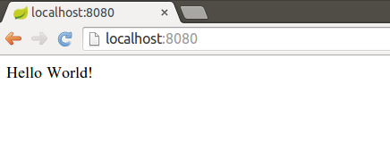

Web-palvelinohjelmointi
Voinko oppia tekemään Facebookin, Flickrin tai Twitterin?
No todellakin!Sisältö, aikataulu, arvostelu
Kurssilla tutustutaan nykyaikaisten, skaalautuvien ja virheenkestävien web-sovellusten toteuttamiseen, testaamiseen ja julkaisemiseen. Kurssilla keskitytään palvelinpuolen toiminnallisuuden toteuttamiseen. Selainpuolen toiminnallisuudella on kurssilla hyvin pieni paino. Kurssin opetuskieli on Suomi ja ohjelmointikieli Java. Kurssilla hyödynnetään Spring-sovelluskehystä.
Kurssi sisältää seitsemän tehtäväsarjaa. Ensimmäinen tehtäväsarja julkaistaan 2. syyskuuta 2015. Uusia tehtäväsarjoja julkaistaan viikoittain. Tehtäväsarjojen viimeiset palautuspäivät löytyvät TMC:stä -- ensimmäisen sarjan viimeinen palautuspäivä on maanantaina 7.9. klo 16:00.
Kurssin arvostelu perustuu viikoittaisiin harjoitustehtäviin, sekä kahteen kokeeseen, joista toinen tehdään kynällä ja paperilla, ja toinen tietokoneella. Kurssin pisteytys on seuraava:
- Viikoittaisista tehtäväsarjoista saa 100 pistettä viikkoa kohti. Täydet 100 pistettä saa tekemällä 100% viikon tehtävistä. Jos tekee puolet tehtävistä, saa 50 pistettä jne.
- Paperilla tehtävästä kokeesta on mahdollista saada 250 pistettä.
- Tietokoneella tehtävästä kokeesta on mahdollista saada 250 pistettä.
Kurssista voi saada yhteensä 1200 pistettä. Sekä paperilla ja kynällä että tietokoneella tehtävistä kokeista on kummastakin saatava vähintään puolet mahdollisista pisteistä. Kurssin alustavat arvosanarajat ovat seuraavat:
- 700 -> 1
- 800 -> 2
- 900 -> 3
- 1000 -> 4
- 1100 -> 5
Esitietovaatimukset ja kurssin suorittaminen
Kurssilla oletetaan Java-ohjelmointikielen tuntemus kurssien ohjelmoinnin perusteet ja ohjelmoinnin jatkokurssi laajuudessa. Tämän lisäksi kursseista ohjelmistotekniikan menetelmät, tietokantojen perusteet, ohjelmoinnin harjoitustyö, tietokantasovellus, ja ohjelmistotuotanto on huomattavasti apua.
Kurssi käyttää TMC-palvelua tehtävien tarkistamisessa. Helsingin yliopistolla järjestettävällä kurssilla TMC-palvelin löytyy osoitteessa http://tmc.mooc.fi/hy, kurssin nimenä on hy-s2015-wepa.
Jos et ole käyttänyt TMC:tä aiemmin, tutustu Ohjelmoinnin perusteiden kurssin ohjeisiin osoitteessa http://www.cs.helsinki.fi/group/java/s15/.
Luennot ja ohjaus
Kurssin ainoa luento pidetään keskiviikkona 2.9. kello 14-16 salissa A111.
Kurssilla on kyselymuotoisia ohjaustunteja huoneessa C221 (Linkki) maanantaisin ja perjantaisin kello 12-14. Huoneessa on myös tietokoneita, joilla kurssin tehtäviä voi tehdä.
Ohjaustunneille tulee ilmoittautua osoitteessa http://kyselyilmo.herokuapp.com olevan sovelluksen kautta. Jos tunnille ei ole tulossa osallistujia, tuntia ei pidetä.
Kurssilla on lisäksi IRC-kanava #wadup, josta löytyy muita kurssilaisia. Muiden auttaminen kanavalla on vapaaehtoista, mutta luonnollisesti suositeltavaa. Auttamisesta hyötyy apua tarvitsevan lisäksi myös auttaja.
Viikoittaiset teemat -- voivat muuttua kurssin edetessä
- Viikko 1 Webin peruskomponentit, Spring Bootin alkeet, dynaamiset sivut ja luonnolliset näkymätemplatet, ensimmäinen tietokantasovellus.
- Viikko 2 Palvelinohjelmistojen kerrokset.
- Viikko 3 REST, HTTP ja Sessiot.
- Viikko 4 Palveluorientoituneet arkkitehtuurit, testaamisen perusteet sekä konfiguraatiot.
- Viikko 5 Luonnolliset näkymätemplatet, mediatiedostojen kuten kuvien ja videoiden tallentaminen ja näyttäminen, tietoturva.
- Viikko 6 Web-sovellusten skaalautuminen.
- Viikko 7 Kertaus ja "facebook".
Sisällysluettelo
Tehtävät
Viikko 1
Aloitus
Web-sovelluksista yleisesti
Web-sovellukset koostuvat selain- ja palvelinpuolesta. Käyttäjän koneella toimii selainohjelmisto (esim. Google Chrome), jonka kautta käyttäjä tekee pyyntöjä verkossa sijaitsevalle palvelimelle. Kun palvelin vastaanottaa pyynnön, se käsittelee pyynnön ja rakentaa pyynnölle sopivan vastauksen. Vastaus voi sisältää esimerkiksi web-sivun tai tietyssä muodossa olevaa dataa.

Selainohjelmointiin ja käyttöliittymäpuoleen keskityttäessä painotetaan rakenteen, ulkoasun, ja toiminnallisuuden erottamista toisistaan. Karkeasti voidaan sanoa, että sivun rakenne määritellään HTML-tiedostoilla, ulkoasu CSS-tiedostoilla, ja toiminnallisuus JavaScript-tiedostoilla.
Palvelinpuolen toiminnallisuutta toteutettaessa keskitytään tyypillisesti selainohjelmiston tarvitsevan "APIn" suunnitteluun ja toteutukseen, sivujen muodostamiseen selainohjelmistoa varten, datan tallentamiseen ja käsittelyyn, sekä sellaisten laskentaoperaatioiden toteuttamiseen, joita selainohjelmistossa ei kannata tai voida tehdä.
Web-sovelluksista puhuttaessa on hyvä erottaa staattiset ja dynaamiset sivut toisistaan. Staattiset sivut ovat sivuja, joiden sisältö on ennalta määrätty, ja jotka palvelin palauttaa suoraan käyttäjälle niitä pyydettäessä. Dynaamiset sivut taas luodaan palvelimella tarvittaessa. Esimerkiksi osoitteessa http://telkku.com/ toimiva web-sovellus luo näytettävän televisio-ohjelmiston dynaamisesti palvelinpuolella: uuden staattisen sivun luominen käsin aina uuden ohjelmatiedon saapuessa olisi erittäin raskasta ja tehotonta. Sivuston tarjoama hakupalvelu mahdollistaa rajattoman määrän erilaisia sivustoja; kukaan ei kirjoittaisi näitä käsin.
Työpöytäsovelluksia ja web-sovelluksia verrattaessa työpöytäsovellukset tarjoavat enemmän interaktiivisuutta ja nopeutta web-sovelluksiin verraten. Web-sovellukset toisaalta mahdollistavat saumattomat ohjelmistojen päivitykset, helposti jaettavan ja ylläpidettävän datan ja dokumenttien jakamisen, sekä kevyet käyttöliittymät. Olemme viimeisten vuosien aikana todistaneet muutosta, missä web-sovellukset hiljalleen syrjäyttävät perinteiset työpöytäsovellukset, myöskin niissä tapauksissa, joissa sovelluksilla on käyttäjiä vain yksittäisessä paikassa. Tälläkin hetkellä Google tarjoaa kaikille ilmaista toimistotyökalupakettia, elokuvien ja tv-ohjelmien katsominen selainohjelmistossa on helppoa esimerkiksi Yle Areenan tai Netflixin avulla, ja selaimessa pelattavat pelit ovat ohittaneet perinteiset tietokonepelit käyttäjämäärissä jo muutamia vuosia sitten.
Ohjelmistojen kehittämisestä
Ohjelmistojen kehittämistä verrataan usein naiivisti talojen tai rakennusten rakentamiseen. Taloa suunnitellessa arkkitehdillä on selkeä tehtävä ja etenemissuunnitelma: kerää vaatimukset, tutki vaihtoehtoja, ja luo pohjapiirrustus. Kun arkkitehti on luonut pohjapiirrustuksen, se annetaan urakoitsijalle, jonka pohjalta urakoitsijan palkkaamat työntekijät -- rakennusmiehet -- rakentavat rakennuksen vaadituilla materiaaleilla.
Ohjelmistoja suunniteltaessa arkkitehti osallistuu sekä ohjelmiston suunnitteluun että kehitykseen, eli rakentamiseen. Koska ohjelmistoista halutaan mahdollisimman nopeasti konkreettista palautetta, arkkitehti aloittaa ohjelmiston suunnittelun perustarpeista: muutamasta huoneesta, joihin palautetta antavat ihmiset muuttavat. Kun alkuperäinen suunnitelma on lähes valmis, rakennukseen muuttaa lisää ihmisiä, jotka tarvitsevat rakennukselta uusia toiminnallisuuksia. Ensisijaisina vaatimuksina ovat uudet huoneet, pesula, disko ja luonnollisesti oleskelutila, jossa on tilaa biljardipöydälle.
Tällöin arkkitehti muuttaa alkuperäistä suunnitelmaansa ottaen huomioon uudet ihmiset ja kehitystyö jatkuu. Kehitystyön jatkuessa alkuperäiset asukkaat alkavat valittamaan rakennusmelusta ja uhkaavat poismuutolla jos asioihin ei saada muutosta, aiheuttaen hiusten harvenemista arkkitehdille. Toisaalta, sana uudesta biljardipöydästä kiertää, ja yhä enemmän ihmisiä muuttaa rakennukseen, ja rakennukselta vaaditaan taas uusia huoneita sekä cartingrata ja curlinghalli.
Hyvän suunnittelun perusta on mahdollisuuksien huomiointi. Huomioinnilla ei tarkoiteta sitä, että rakennetaan heti aluksi iso järjestelmä -- käytännössä järjestelmän valmistuessa sille ei olisi käyttäjiä sillä kaikki olisivat siirtyneet toiseen aiemmin tarpeellisia ominaisuuksia tarjonneeseen järjestelmään. Jos alkuperäinen suunnitelma tekee järjestelmän laajentamisesta vaikeaa, käyttäjät saattavat vaihtaa palvelua hitauden takia.
Kaikkien osapuolten toiveet tyydyttävän ohjelmiston rakentaminen on haastavaa. Jokaista ohjelmistoa joudutaan laajentamaan, rajaamaan ja muokkaamaan. Asiakkaalla tai asiakkailla on käytännössä aina uusia toivomuksia ohjelmiston elinkaaren varrella.
Arkkitehtuurin tulee mahdollistaa sopivan kokoisesta palasta aloittaminen sekä rakennettavan sovelluksen laajentaminen, myös toisten kehittäjien toimesta. Käytännössä hyvin harvat ohjelmistot ovat vain yhden ihmisen käsialaa, ja laajempaa sovellusta kehitettäessä olemassaolevien ohjelmistokomponenttien hyödyntäminen on oleellista. Ohjelmistoalalla aloittelevan on hyvin vaikea valita sopivia komponentteja olemassaolevasta viidakosta sillä yhtä oikeaa ratkaisua ei yleensä ole.
Oleelllisinta ohjelmistokehityksessä on kommunikointi niin koodin kautta kuin muita väyliä käyttäen. Avoimeen lähdekoodiin ja online-versionhallintatyökaluihin (esim. GitHub) perustuvat projektit saavat ihmiset eri puolilta maailmaa tekemään työtä yhteisten kiinnostuksenkohteiden takia. Sovittujen käytänteiden (esim. nimeämiskäytänteet, versionhallinta, testaus, dokumentointi ym.) noudattaminen on oleellista sillä heikko suunnittelu ja ylläpidettävyys, esimerkiksi muuttujien huono nimentä, aiheuttavat lähinnä kylmiä väreitä ja ajavat innokkaat ihmiset pois.
Työkaluja valittaessa tarkoituksena on välttää nurkkaan ajautumista: työkaluista tulee pystyä myös pääsemään eroon. On paljon hyödyllisempää miettiä päivä ja käyttää muutama päivä prototyypin tekemiseen, koska prototyyppiä voidaan parantaa kuukausia, kuin miettiä kuukausi ja sitouttaa itsensä kuukauden aikana luotuun suunnitelmaan. Mitä nopeammin toiminnallisuutta on olemassa, sitä nopeammin siitä saa palautetta. Toisaalta, mitä vähemmän aikaa yksittäisen toiminnallisuuden toteuttamiseen käytetään, sitä helpommin siitä voi tarpeen vaatiessa hankkiutua eroon.
Sovelluksia tehdessä, erityisesti prototyyppivaiheessa, otetaankin usein hieman teknistä velkaa ns. "menemällä siitä mistä aita on matalin". Tämä velka maksetaan kuitenkin ennen pitkää takaisin; mitä pidempään sen takaisinmaksussa kestää, sitä suurempi velan korko on.
Kurssin työvälineet
Käytämme tällä kurssilla ohjelmointiympäristönä NetBeansia, ohjelmistoprojektien ja komponenttien riippuvuuksien hallintaan Mavenia, sekä komentotulkkia. Harjoitustehtävät palautetaan Test My Code-palvelimelle NetBeansiin ladattavan Test My Code -liitännäisen avulla.
Selainpuolella ohjelmistoja tutkitaan Google Chromessa olevien DevToolsien avulla.
NetBeansin ja Test My Coden asennus
Test My Coden web-sivu löytyy osoitteesta http://tmc.mooc.fi/hy. Valitse sivun ylälaidasta Sign up ja kirjaudu järjestelmään. Jos olet HY:n opiskelija, käytä käyttäjätunnuksena (username) opiskelijanumeroasi, ja anna järjestelmään käyttämäsi sähköpostiosoite. Opiskelijanumeron käyttö opiskelijana on tärkeää: näin tehtävistä saamasi pisteet voidaan liittää sinuun jos osallistut kokeeseen. Kun käyttäjätunnuksesi on luotu ja kirjautuminen onnistuu, jatka eteenpäin.
NetBeans-sovelluskehitysympäristön ladattua osoitteesta http://netbeans.org/. NetBeansin versiota ladattaessa kannattaa valita versio kaikilla mausteilla, eli vaihtoehto "All". Jos NetBeans kysyy haluatko käyttää vanhoja asetuksia sitä käynnistettäessä, kannattaa valita ei.
Test My Code-liitännäisen saa lisättyä NetBeansin pluginvaihtoehdoksi näkyviin valitsemalla Tools -> Plugins. Valitse avautuvasta ikkunasta Settings-välilehti, ja klikkaa uuden liitännäispaikan lisäämiseen tarkoitettua Add-nappia. Anna avautuvaan ikkunaan latauspaikan nimeksi TMC, ja osoitteeksi http://update.testmycode.net/tmc-netbeans_mooc/updates.xml. Valitse lopulta OK.
Mene tämän jälkeen Available Plugins -välilehdelle ja etsi sieltä vaihtoehto Test My Code NetBeans Plugin. Klikkaa sen vasemmalla puolella olevaa laatikkoa, ja painaa Install. Tämä asentaa Test My Coden NetBeansiisi.
Kun Test My Code on asentunut, NetBeans haluaa käynnistyä uudestaan. Käynnistä NetBeans uudestaan. Tämän jälkeen NetBeansin valikossa on myös vaihtoehto Test My Code. Käy vielä asettamassa Test My Coden asetukset. Valitse TMC -> Settings, ja täytä avautuvaan ikkunaan tietosi. Käyttäjätunnus on TMC-tunnuksesi, salasanasi TMC:hen liittyvä salasanasi. Valitse kurssiksi opettajalta saamasi tunnus.
Varmista että myös alaosassa olevat vaihtoehdot ovat valittuina ja paina OK (kurssin kehittämisen kannalta on erittäin tärkeää, että viimeinen vaihtoehto "Send snapshots of your progress for study" on valittu). Tämän jälkeen NetBeans kysyy sinulta ladataanko saatavilla olevat tehtävät. Valitse "Download".
NetBeans lataa tehtävät, jonka jälkeen ne ovat näkyvissä NetBeans-projekteina. Pieni musta pallo projektin ikonissa tarkoittaa että tehtävää ei ole vielä yritetty. Jos pallo on vihreä, on tehtävästä kerätty kaikki pisteet.
Ohjelmistoprojektien hallinta ja Maven
Jokaisessa ohjelmistoprojektissa tulee vastaan erilaisia lähdekoodiin liittyviä tarpeita. Lähdekoodia tulee pystyä paketoimaan tuotantopalvelimelle siirettäväksi paketiksi (esim -.jar ja -.war -tiedostot), lähdekoodiin liittyviä testejä tulee pystyä ajamaan erillisellä palvelimella ja lähdekoodista tulee pystyä generoimaan erilaisia raportteja sekä luonnollisesti dokumentaatiota.
Työkalut kuten Apache Ant auttavat projektiin liittyvän lähdekoodin hallinnoinnissa ja kääntämisessä. Ant on käytännössä 2000-luvun alun vastine perinteisille Makefile-tiedostoille. Nykyaikaisemmat Apache Maven ja Gradle auttavat käännösprosessin lisäksi muunmuassa projektiin liittyvien kirjastoriippuvuuksien automaattisessa hallinnassa. Käytämme tällä kurssilla Mavenia.
Apache Maven on projektinhallintatyökalu, jota voi käyttää ohjelmakoodikäännösten lisäksi lähes koko projektin elinkaaren hallintaan uuden projektin aloittamisesta lähtien. Maven tarjoaa ohjelmiston elinkaaren hallintaan joukon valmiiksi konfiguroituja vaiheita (phase), joita voidaan suorittaa komentoriviltä. Usein käytettäviä vaiheita ovat mm. test, joka suorittaa projektiin liittyvät testit sekä package, joka paketoi lähdekoodin projektityypistä riippuen sopivaan pakettiin. Oikeastaan Maven on sovelluskehys liitännäisten suoritukseen ja yksinkertaisimmatkin Mavenin tarjoamat toiminnot ovat toteutettu liitännäisinä.
Jokaisella Maven-projektilla on elinkaari, joka sisältää vaiheet lähtien projektin validoinnista, kääntämisestä ja testaamisesta aina tuotantoon siirtämiseen asti. Tarkempi listaus projektin erilaisista vaiheista löytyy Mavenin dokumentaatiosta. Kukin vaihe koostuu yhdestä tai useammasta tavoitteesta (goal), jotka suoritetaan vaiheen sisällä. Vaiheet riippuvat myös edellisistä vaiheista; esimerkiksi vaihetta test suoritettaessa Maven suorittaa ensin projektin validoinnin ja kääntämisen.
Mavenin liitännäisarkkitehtuuri mahdollistaa hyvin monipuolisen toiminnallisuuden. Esimerkiksi raportointia ja staattista koodianalyysiä varten löytyy omat liitännäiset, samoin kuin mahdollisen (web-)palvelimen käynnistämiselle projektin testausta varten. Liitännäisistä löytyy (ei kattava) lista osoitteessa http://maven.apache.org/plugins/index.html.
Maven automatisoi uusien projektien luomisen archetype-liitännäisellä. Archetype-liitännäisen avulla ohjelmistokehittäjät voivat tarjota toisilleen valmiita projektirunkoja ja esimerkiksi määritellä yrityksen teknologiavalinnat paketiksi, jonka pohjalta uuden sovelluksen kehittäminen on nopeaa.
Yksi Mavenin tärkeimmistä ominaisuuksista on tarvittavien kirjastojen eli riippuvuuksien automaattinen lataaminen. Mavenin avulla projektiin voi määritellä riippuvuuden esimerkiksi yksikkötestauskirjastoihin ja käytetyn web-sovelluskehyksen kirjastoihin. Tällöin Maven lataa riippuvuudet automaattisesti ja kirjastoja ei tarvitse pitää esimerkiksi projektikohtaisessa tai paikallisessa versionhallintajärjestelmässä.
Mavenin projektirakenne
Mavenin archetype-pluginia käyttäen uuden projektin luonti tapahtuu helposti. Luodaan uusi projekti, jota tarkastelemme seuraavaksi. Uuden projektin luominen onnistuu komentoriviltä esimerkiksi seuraavan komennon avulla.
mvn archetype:generate -DgroupId=fi.organisaatio -DartifactId=sovelluksen-nimi
Käytännössä komennossa mvn archetype:generate kutsutaan Mavenin archetype-liitännäiseen liittyvää tavoitetta generate ja annetaan sille kaksi parametria. Parametrilla -DgroupId kerrotaan katto-organisaation tai ryhmän tunnus, parametrilla -DartifactId kerrotaan luotavan sovelluksen nimi.
Komento hakee archetype-pluginista valmit projektipohjat, ja kysyy ensin mitä pohjaa haluat käyttää. Tämän jälkeen Maven kyselee muita tietoja luotavasta projektista. Koska haluamme vain tutustua tässä Mavenin projektirakenteeseen, vastaillaan kysymyksiin enter-painalluksilla. Tällöin Maven käyttää oletusvastauksia.
Kun projekti on luotu, sillä on seuraavanlainen kansiorakenne.
sovelluksen-nimi
├── pom.xml
└── src
├── main
│ └── java
│ └── fi
│ └── organisaatio
│ └── App.java
└── test
└── java
└── fi
└── organisaatio
└── AppTest.java
Sovelluksen ja testien lähdekoodit ovat eritelty erillisiin kansioihin. Projektin alla olevassa kansiossa src on projektiin liittyvät lähdekoodit. Kansion src alla on kansiot main ja test, joissa toisessa on projektiin liittyvää koodia, ja toisessa projektiin liittyvät testit. Maven-projektin konfiguraatiotiedosto pom.xml on projektin juuressa.
Projektin luominen valmiista archetype-projekstista onnistuu myös NetBeansissa. Valitsemalle File -> New Project pääsee projektivalikkoon, josta löytyy kategoria Maven. Kun vaihtoehto "Project from Archetype" valitaan käyttäjä pääsee selaamaan saatavilla olevia vaihtoehtoja. Archetypen valinnan jälkeen projektille annetaan nimi ja aloitetaan sovelluksen kehittäminen.
Mavenin "pom.xml": Project Object Model
Tiedoston pom.xml osa pom tulee sanoista Project Object Model. XML-muotoinen pom-tiedosto sisältää projektiin liittyvän rakenteen, asetukset, kirjastoriippuvuudet ja tarvittaessa määritellyt tavoitteet. Yksinkertaisimmillaan pom.xml -tiedosto sisältää kuvauksen organisaatiosta, projektin nimestä, versiosta ja lähdekoodin pakkausmuodosta. Edellisessä osiossa komentorivillä luodun projektin pom.xml -sisältö näyttää seuraavalta.
<project xmlns="http://maven.apache.org/POM/4.0.0" xmlns:xsi="http://www.w3.org/2001/XMLSchema-instance"
xsi:schemaLocation="http://maven.apache.org/POM/4.0.0 http://maven.apache.org/xsd/maven-4.0.0.xsd">
<modelVersion>4.0.0</modelVersion>
<groupId>fi.organisaatio</groupId>
<artifactId>sovelluksen-nimi</artifactId>
<version>1.0-SNAPSHOT</version>
<packaging>jar</packaging>
<name>sovelluksen-nimi</name>
<url>http://maven.apache.org</url>
<properties>
<project.build.sourceEncoding>UTF-8</project.build.sourceEncoding>
</properties>
<dependencies>
<dependency>
<groupId>junit</groupId>
<artifactId>junit</artifactId>
<version>3.8.1</version>
<scope>test</scope>
</dependency>
</dependencies>
</project>
Alussa on XML-tiedoston otsake, joka määrittelee käytetyn XML-skeeman. Tämän jälkeen määritellään projektin tiedot (groupId = ryhmä, artifactId = projekti, version = projektin versio, packaging = pakkausmuoto). Tämän jälkeen tulee sovelluksen nimi (usein sama kuin projekti), sekä projektiin liittyvä osoite. Näitä seuraa projektiin liittyvät asetukset – yllä olevassa tiedostossa on määritelty projekti käyttämään UTF-8 -merkistökoodausta.
Dependencies-osiossa määritellään kirjastot, joita projekti tarvitsee. Esimerkissä projektille on määritelty riippuvuus yksikkötestauksessa käytettävään JUnit-sovelluskirjastoon, jonka Maven lataa automaattisesti. Riippuvuuden scope-osiolla voidaan määritellä vaihe, johon riippuvuus liittyy. Yllä olevassa esimerkissä JUnit-kirjastoa on käytössä vain test-vaiheessa. Käytännössä siis JUnit on käytössä vain testausta varten, mutta se ei tule olemaan mukana asiakkaalle lähetettävässä valmiissa sovelluksessa.
Maven ja riippuvuuksien hallinta
Projektikonfiguraatiossa (pom.xml) olevassa dependencies-osiossa määritellään kirjastot, joita projekti käyttää. Riippuvuuksia ei ole pakko olla yhtäkään, tai niitä voi olla useita. Käytettävät kirjastot riippuvat usein myös muista kirjastoista. Maven (versiosta 2 lähtien) lataa automaattisesti myös käytettävien kirjastojen tarvitsemat riippuvuudet: esimerkiksi JUnit-kirjaston uusin versio tarvitsee avukseen hamcrest-nimisen kirjaston (kts. "This artifact depends on..." osoitteessa http://mvnrepository.com/artifact/junit/junit/4.11). Voimme kuitenkin määritellä riippuvuudeksi JUnit-kirjaston ja antaa Mavenin hoitaa loput.
Projekti voi myös periä jonkun toisen projektin konfiguraation. Elementti <parent> kertoo perittävän komponentin tiedot. Esimerkiksi, seuraavalla konfiguraatiolla kerromme, että perimme spring.framework.boot-ryhmän spring-boot-starter-parent -projektin version 1.1.6.RELEASE.
<parent>
<groupId>org.springframework.boot</groupId>
<artifactId>spring-boot-starter-parent</artifactId>
<version>1.1.6.RELEASE</version>
</parent>
Lisää tietoa riippuvuuksien hallinnasta löytyy mavenin dokumentaatiosta. Hyviä paikkoja kirjastojen etsimiseen ovat muun muassa http://search.maven.org/ ja http://mvnrepository.com/.
Mavenin valmiita komentoja
Kirjoittaessamme pom.xml-tiedoston sisältävässä kansiossa komennon mvn, näemme viestin, joka valittaa komennon puuttumisesta. Viestin konkreettinen sisältö riippuu mavenin versiosta, esimerkiksi mavenin versiossa 2 oleellinen sisältö on seuraavanlainen. Kolmosversiossa viesti on vaikealukuisempi...
$ mvn
...
You must specify at least one goal or lifecycle phase to perform build steps.
The following list illustrates some commonly used build commands:
mvn clean
Deletes any build output (e.g. class files or JARs).
mvn test
Runs the unit tests for the project.
mvn install
Copies the project artifacts into your local repository.
mvn deploy
Copies the project artifacts into the remote repository.
mvn site
Creates project documentation (e.g. reports or Javadoc).
Please see
http://maven.apache.org/guides/introduction/introduction-to-the-lifecycle.html
for a complete description of available lifecycle phases.
...
Selaamalla osoitteeseen http://maven.apache.org/guides/introduction/introduction-to-the-lifecycle.html näemme tarkemman listan toiminnoista, joita maven tarjoaa ohjelmistoprojektin eri vaiheisiin.
Testien suorittaminen
Projektiin liittyvät testit suoritetaan käyttämällä mavenin vaihetta test. Käytännössä kukin vaihe liittyy johonkin tiettyyn pluginiin, esimerkiksi test-vaiheessa suoritetaan surefire-pluginin tavoite test. Lisätietoja vaiheiden oletusplugineista löytyy täältä.
Suoritetaan testit antamalla projektikansiossa komento mvn test (saman voi tehdä myös NetBeansissa valitsemalla projektin oikealla hiiren napilla ja painamalla "Test").
$ mvn test
// tulostusta...
[INFO] ------------------------------------------------------------------------
[INFO] Building sovelluksen-nimi 1.0-SNAPSHOT
[INFO] ------------------------------------------------------------------------
// tulostusta...
-------------------------------------------------------
T E S T S
-------------------------------------------------------
Running fi.organisaatio.AppTest
Tests run: 1, Failures: 0, Errors: 0, Skipped: 0, Time elapsed: 0.016 sec
Results :
Tests run: 1, Failures: 0, Errors: 0, Skipped: 0
[INFO] ------------------------------------------------------------------------
[INFO] BUILD SUCCESS
[INFO] ------------------------------------------------------------------------
// tulostusta
Käytännössä projektiin liittyvät testitiedostot, joita komentorivin kautta luomassamme esimerkkiprojektissa on vain 1, suoritetaan. Jos testeissä on ongelmia, mavenista pääsee käsiksi niihin liittyviin raportteihin.
Projektin konfiguraation muokkaus on helppoa kun tietää mitä tekee. Esimerkiksi yksikkötestauskirjaston JUnit version vaihtaminen vanhasta versiosta 3.8.1 versioon 4.11 onnistuu helposti. Käytännössä vain version-tägin sisältö tulee vaihtaa:
...
<dependencies>
<dependency>
<groupId>junit</groupId>
<artifactId>junit</artifactId>
<version>4.11</version>
<scope>test</scope>
</dependency>
</dependencies>
...
Jos testit suoritetaan nyt uudestaan komennolla mvn test, huomataan että Maven lataa JUnit-version 4.11 käyttöösi. Koska JUnit on taaksepäin yhteensopiva, testit menevät läpi.
Webin peruskomponentit
"I just had to take the hypertext idea and connect it to the TCP and DNS ideas and – ta-da! – the World Wide Web." -- Tim Berners-Lee
Webin peruskomponentit ovat (1) URI (Uniform Resource Identifier) ja DNS (Domain Name Services) , jotka mahdollistavat resurssien ja palveluiden yksilöinnin, (2) HTTP (HyperText Transfer Protocol), joka on protokolla viestien lähetykseen verkon yli, sekä (3) HTML (HyperText Markup Language), eli yhteinen dokumenttien esityskieli.
URI ja DNS
"The most important thing that was new was the idea of URI-or URL, that any piece of information anywhere should have an identifier, which will allow you to get hold of it." -- Tim Berners-Lee
Verkossa sijaitseva sivusto tunnistetaan sille annetun yksilöivän osoitteen perusteella. Osoite (URI eli Uniform Resource Identifier, terminä käyttöön jäänyt URL Uniform Resource Locator) koostuu resurssin nimestä ja sijainnista, joiden perusteella haluttu palvelin ja resurssi voidaan löytää verkossa olevien koneiden massasta.
Kun käyttäjä kirjoittaa web-selaimen osoitekenttään URIn ja painaa enteriä, web-selain tekee kyselyn annettuun osoitteeseen. Koska tekstimuotoiset osoitteet ovat käytännössä vain ihmisiä varten, kääntää selain ensiksi halutun osoitteen numeeriseksi IP-osoitteeksi. Jos IP-osoite on jo tiedossa esimerkiksi aiemmin osoitteeseen tehdyn kyselyjen takia, selain voi ottaa yhteyden IP-osoitteeseen. Jos taas IP-osoite ei ole tiedossa, tulee selaimen ensin tehdä kysely DNS-palvelimelle (Domain Name System), jonka tehtävänä on muuntaa tekstuaaliset osoitteet IP-osoitteiksi (esim. Tietojenkäsittelytieteen laitoksen kotisivu http://www.cs.helsinki.fi on IP-osoitteessa 128.214.166.78). Ilman DNS-palvelimia ihmisten tulisi muistaa IP-osoitteet ulkoa, joka käytännössä tarkoittaisi ettei nykyinen internet toimisi.
IP-osoitteet yksilöivät tietokoneet ja mahdollistavat koneiden löytämisen verkon yli. Käytännössä yhteys IP-osoitteen määrittelemään koneeseen avataan sovellustason HTTP-protokollan avulla kuljetustason TCP-protokollan yli. TCP-protokollan tehtävänä on varmistaa, että viestit pääsevät perille. Lisää tietoa konkreettisesta tietoliikenteestä kurssilla Tietoliikenteen perusteet.
Käytännössä URIt näyttävät seuraavilta:
protokolla://isäntäkone[:portti]/polku/../[kohdedokumentti][?kyselyparametrit][#ankkuri]
- protokolla: kyselyssä käytettävä protokolla, esimerkiksi HTTP, FTP tai SSH.
- isäntäkone: kone tai palvelin johon luodaan yhteys. Voi olla joko IP-osoite tai tekstuaalinen kuvaus (esim www.cs.helsinki.fi).
- portti: portti isäntäkoneella johon yhteys luodaan. HTTP-palvelimien oletusportti on 80. Jos palvelin käyttää eri porttinumeroa kuin 80, tulee se merkitä osoitteeseen. Portti käytännössä määrittelee prosessin, johon yritetään ottaa yhteyttä.
- polku: periaatteessa polku resurssiin palvelimella. Käytännössä (nykyään) palvelun osoite, johon palvelin osaa osoittaa. Usein palvelut toimivat erillisessä koneessa sisäverkossa, ja ulkoverkkoon näkyvä kone vain toimii ohjaajana eli proxynä oikeaan palveluun.
- kohdedokumentti: haettava resurssi, jos kohdedokumenttia ei ole määritelty palvelin päättelee oletusdokumentin. Usein index.html
- kyselyparametrit: koostuu avain-arvo -pareista, joiden avulla palvelimelle pystyy toteuttamaan lisätoiminnallisuutta. Kuhunkin avaimeen liittyvä arvo esitetään = -merkillä, avain-arvo -parit erotetaan toisistaan &-merkillä.
- ankkuri: kertoo mihin kohtaan dokumentissa tulee mennä.
HTTP
HTTP (HyperText Transfer Protocol) on TCP/IP -protokollapinon sovellustason protokolla, jota web-palvelimet ja selaimet käyttävät kommunikointiin. HTTP-protokolla perustuu asiakas-palvelin malliin, jossa jokaista pyyntöä kohden on yksi vastaus (request-response paradigm). Käytännössä HTTP-asiakasohjelma (jatkossa selain) lähettää HTTP-viestin HTTP-palvelimelle (jatkossa palvelin), joka palauttaa HTTP-vastauksen. HTTP-protokollan versio 1.1 on määritelty RFC 2616-spesifikaatiossa.
Asiakas-palvelin malli
Asiakas-palvelin -mallissa (Client-Server model) asiakkaat käyttävät palvelimen tarjoamia palveluja. Kommunikointi asiakkaan ja palvelimen välillä tapahtuu usein verkon yli siten, että asiakasohjelmisto ja palvelinohjelmisto sijaitsevat erillisissä fyysisissä sijainneissa (eri tietokoneilla). Palvelinohjelmisto tarjoaa yhden tai useamman palvelun, joita asiakasohjelmisto käyttää.
Käytännössä asiakasohjelmisto tarjoaa käyttöliittymän ohjelmiston käyttäjälle. Asiakasohjelmiston käyttäjän ei tarvitse tietää, että kaikki käytetty tieto ei ole hänen koneella. Käyttäjän tehdessä toiminnon asiakasohjelmisto pyytää tarpeen vaatiessa palvelimelta käyttäjän tarpeeseen liittyvää lisätietoa. Tyypillistä mallille on se, että palvelin tarjoaa vain asiakkaan pyytämät tiedot ja verkossa liikkuvan tiedon määrä pidetään vähäisenä.
Asiakas-palvelin -malli mahdollistaa hajautetut ohjelmistot: asiakasohjelmistoa käyttävät loppukäyttäjät voivat sijaita eri puolilla maapalloa palvelinohjelmiston sijaitessa tietyssä paikassa.
Haasteena perinteisessä asiakas-palvelin mallissa on se, että palvelin sijaitsee yleensä tietyssä keskitetyssä sijainnissa. Keskitetyillä palveluilla on mahdollisuus ylikuormittua asiakasmäärän kasvaessa. Kapasiteettia rajoittavat muun muassa palvelimen fyysinen kapasiteetti (rauta), palvelimeen yhteydessä olevan verkon laatu ja nopeus, sekä tarjotun palvelun tyyppi. Esimerkiksi pyynnöt, jotka johtavat tiedon tallentamiseen, vievät tyypillisesti enemmän resursseja kuin pyynnöt, jotka tarvitsevat vain staattista sisältöä.
HTTP-viestin rakenne: palvelimelle lähetettävä kysely
HTTP-protokollan yli lähetettävät viestit ovat tekstimuotoisia. Viestit koostuvat riveistä jotka muodostavat otsakkeen, sekä riveistä jotka muodostavat viestin rungon. Viestin runkoa ei ole pakko olla olemassa. Viestin loppuminen ilmoitetaan kahdella peräkkäisellä rivinvaihdolla.
Palvelimelle lähetettävän viestin, eli kyselyn, ensimmäisellä rivillä on pyyntötapa, halutun resurssin polku ja HTTP-protokollan versionumero.
PYYNTÖTAPA /POLKU_HALUTTUUN_RESURSSIIN HTTP/versio otsake-1: arvo otsake-2: arvo valinnainen viestin runko
Pyyntötapa ilmaisee HTTP-protokollassa käytettävän pyynnön tavan (esim. GET tai POST), polku haluttuun resurssiin kertoo haettavan resurssin sijainnin palvelimella (esim. /index.html), ja HTTP-versio kertoo käytettävän version (esim. HTTP/1.0). Alla esimerkki hyvin yksinkertaisesta -- joskin yleisestä -- pyynnöstä. Huomaa että pyyntöä tehdessä yhteys palvelimeen on jo muodostettu, eli palvelimen osoitetta ei merkitä erikseen.
GET /index.html HTTP/1.0
Yksittäisen koneen dedikointi web-palvelimeksi jättää usein huomattavan osan koneen kapasiteetista käyttämättä. Nykyään yleisesti käytössä oleva HTTP/1.1 -protokolla mahdollistaa useamman palvelimen pitämisen samassa IP-osoitteessa virtuaalipalvelintekniikan avulla, jolloin yksittäiset palvelinkoneet voivat sisältää useita palvelimia. Käytännössä IP-osoitetta kuunteleva kone voi joko itsessään sisältää useita ohjelmistoilla emuloituja palvelimia, tai se voi toimia reitittimenä ja ohjata pyynnön tietylle esimerkiksi yrityksen sisäverkossa sijaitsevalle koneelle. Kun yksittäinen IP-osoite voi sisältää useampia palvelimia, pelkkä polku haluttuun resurssiin ei riitä oikean resurssin löytämiseen: resurssi voisi olla millä tahansa koneeseen liittyvällä virtuaalipalvelimella. HTTP/1.1 -protokollassa on pyynnöissä pakko olla mukana käytetyn palvelimen osoitteen kertova Host-otsake.
GET /index.html HTTP/1.1 Host: www.munpalvelin.net
HTTP-viestin rakenne: palvelimelta saapuva vastaus
Palvelimelle tehtyyn pyyntöön saadaan aina jonkinlainen vastaus. Jos tekstimuotoiseen osoitteeseen ei ole liitetty IP-osoitetta DNS-palvelimilla, selain ilmoittaa ettei palvelinta löydy. Jos palvelin löytyy, ja pyyntö saadaan tehtyä palvelimelle asti, tulee palvelimen myös vastata jollain tavalla.
Palvelimelta saatavan vastauksen sisältö on seuraavanlainen. Ensimmäisellä rivillä HTTP-protokollan versio, viestiin liittyvä statuskoodi, sekä statuskoodin selvennys. Tämän jälkeen on joukko otsakkeita, tyhjä rivi, ja mahdollinen vastausrunko. Vastausrunko ei ole pakollinen.
HTTP/versio statuskoodi selvennys
otsake-1: arvo
otsake-2: arvo
valinnainen vastauksen runko
Esimerkiksi:
HTTP/1.1 200 OK Date: Mon, 01 Sep 2014 03:12:45 GMT Server: Apache/2.2.14 (Ubuntu) Vary: Accept-Encoding Content-Length: 973 Connection: close Content-Type: text/html;charset=UTF-8 .. runko ..
Kun palvelin vastaanottaa tiettyyn resurssiin liittyvän pyynnön, tekee se resurssiin mahdollisesti liittyviä toimintoja ja palauttaa lopulta vastauksen. Kun selain saa vastauksen, tarkistaa se vastaukseen liittyvän statuskoodin ja siihen liittyvät tiedot. Tämän jälkeen selain päättelee, mitä vastauksella tehdään, ja esimerkiksi tuottaa vastaukseen liittyvän web-sivun käyttäjälle.
Statuskoodit
Statuskoodit (status code) kuvaavat palvelimella tapahtunutta toimintaa kolmella numerolla. Statuskoodien avulla palvelin kertoo mahdollisista ongelmista tai tarvittavista lisätoimenpiteistä. Yleisin statuskoodi on 200, joka kertoo kaiken onnistuneen oikein. HTTP/1.1 sisältää viisi kategoriaa vastausviesteihin.
- 1**: informaatioviestit (esim 100 "Continue")
- 2**: onnistuneet tapahtumat (esim 200 "OK")
- 3**: asiakasohjelmistolta tarvitaan lisätoimintoja (esim 301 "Moved Permanently" tai 304 "Not Modified" eli hae välimuistista)
- 4**: virhe pyynnössä tai erikoistilanne (esim 401 "Not Authorized" ja 404 "Not Found")
- 5**: virhe palvelimella (esim 500 "Internal Server Error")
Humoristisia kuvia statuskoodeista löytyy osoitteesta http://httpcats.herokuapp.com.
HTTP-protokollan pyyntötavat
HTTP-protokolla määrittelee kahdeksan erillistä pyyntötapaa (Request method), joista yleisimmin käytettyjä ovat GET ja POST. Pyyntötavat määrittelevät rajoitteita ja suosituksia viestin rakenteeseen ja niiden prosessointiin palvelinpäässä. Esimerkiksi Java Servlet API (versio 2.5) sisältää seuraavan suosituksen GET-pyyntotapaan liittyen:
The GET method should be safe, that is, without any side effects for which users are held responsible. For example, most form queries have no side effects. If a client request is intended to change stored data, the request should use some other HTTP method.
Suomeksi yksinkertaistaen: Palvelinpuolen toiminnallisuutta suunniteltaessa kannattaa pyrkiä tilanteeseen, missä GET-tyyppisillä pyynnöillä ei voida muuttaa palvelimella olevaa dataa.
GET
GET-pyyntötapaa käytetään esimerkiksi dokumenttien hakemiseen: kun kirjoitat osoitteen selaimen osoitekenttään ja painat enter, selain tekee GET-pyynnön. GET-pyynnöt eivät tarvitse otsaketietoja HTTP/1.1:n vaatiman Host-otsakkeen lisäksi. Mahdolliset kyselyparametrit lähetetään palvelimelle osana haettavaa osoitetta.
GET /sivu.html?porkkana=1 HTTP/1.1
Host: palvelimen-osoite.net
POST
Käytännön ero POST- ja GET-kyselyn välillä on se, että POST-tyyppisillä pyynnoillä kyselyparametrit liitetään pyynnön runkoon. Rungon sisältö ja koko määritellään otsakeosiossa. POST-kyselyt mahdollistavat multimedian (kuvat, videot, musiikki, ...) lähettämisen palvelimelle.
POST /sivu.html HTTP/1.1
Host: palvelimen-osoite.net
Content-Type: application/x-www-form-urlencoded
Content-Length: 10
porkkana=1
HTML
"In '93 to '94, every browser had its own flavor of HTML. So it was very difficult to know what you could put in a Web page and reliably have most of your readership see it." -- Tim Berners-Lee
HTML on rakenteellinen kuvauskieli, jolla voidaan esittää linkkejä sisältävää tekstiä sekä tekstin rakennetta. HTML koostuu elementeistä, jotka voivat olla sisäkkäin ja peräkkäin. Elementtejä käytetään ohjeina dokumentin jäsentämiseen ja käyttäjälle näyttämiseen. HTML-dokumenteissa elementit avataan elementin nimen sisältävällä pienempi kuin -merkillä (<) alkavalla ja suurempi kuin -merkkiin (>) loppuvalla merkkijonolla (<elementin_nimi>), ja suljetaan merkkijonolla jossa elementin pienempi kuin -merkin jälkeen on vinoviiva (</elementin_nimi>).
HTML-dokumentin rakennetta voi ajatella myös puuna. Juurisolmuna on elementti <html>, jonka lapsina ovat elementit <head> ja <body>.
Jos elementin sisällä ei ole muita elementtejä tai tekstisolmuja eli tekstiä, voi elementin yleensä avata ja sulkea samalla merkkijonolla: (<elementin_nimi />).
HTML:stä on useita erilaisia standardeja, joista viimeisin julkaistu versio on HTML5 -- myös versio 5.1 työstetään tällä hetkellä (päivitetty 28.8.2015).
<!DOCTYPE html>
<html lang="fi">
<head>
<meta charset="UTF-8" />
<title>selainikkunassa näkyvä otsikko</title>
</head>
<body>
<p>Tekstiä tekstielementin sisällä, tekstielementti runkoelementin sisällä,
runkoelementti html-elementin sisällä. Elementin sisältö voidaan asettaa
useammalle riville.</p>
</body>
</html>
Ylläoleva HTML5-dokumentti sisältää dokumentin tyypin ilmaisevan aloitustägin (<!DOCTYPE html>), dokumentin aloittavan html-elementin (<html>), otsake-elementin ja sivun otsikon (<head>, jonka sisällä <title>), sekä runkoelementin (<body>).
Elementit voivat sisältää attribuutteja ja attribuuteille voi antaa arvoja. Esimerkiksi ylläolevassa esimerkissä html-elementille on määritelty erillinen attribuutti lang, joka kertoo dokumentissa käytetystä kielestä. Ylläolevan esimerkin otsakkeessa on myös metaelementti, jota käytetään lisävinkin antamiseen selaimelle: "dokumentissa käytetään UTF-8 merkistöä". Tämä kannattaa olla dokumenteissa aina.
Nykyaikaiset web-sivut sisältävät paljon muutakin kuin sarjan HTML-elementtejä. Linkitetyt resurssit, kuten kuvat ja tyylitiedostot, ovat oleellisia sivun ulkoasun ja rakenteen luomisessa. Selainpuolella suoritettavat skriptitiedostot, erityisesti Javascript, ovat luoneet huomattavan määrän syvyyttä nykyaikaiseen web-kokemukseen. Tällä kurssilla emme juurikaan syvenny selainpuolen toiminnallisuuteen.
Ensimmäinen palvelinohjelmisto
Tutustutaan tässä osiossa yksinkertaisten web-palvelinohjelmistojen rakenteeseen, sekä niiden toteuttamiseen Spring-sovelluskehyksen Spring Boot-projektilla. Spring on sovelluskehys, joka tarjoaa komponentteja sovellusten toteuttamiseen ja testaamiseen, ja Spring Boot -projekti tarjoaa näistä komponenteista koostuvia valmiita aloituspaketteja.
Hello World!
Tutustutaan "Hello World!"-tyyppisen web-sovelluksen toteuttamiseen Springin avulla. Oletetaan, että käytössämme on osoitteesta start.spring.io ladattu Web-projektirunko (ruksaa Web-listan komponentti Web), jonka kansiorakenne on oletuksena seuraavankaltainen:
├── pom.xml
└── src
├── main
│ ├── java
│ │ └── demo
│ │ └── DemoApplication.java
│ └── resources
│ ├── application.properties
│ ├── static
│ └── templates
└── test
└── java
└── demo
└── DemoApplicationTests.java
Kontrolleriluokka, pyynnön vastaanottaminen ja pyynnön käsittelevä metodi
Lisää kansioon src/main/java/demo luokka HelloController. Kontrollerit (Controller) ovat palvelinohjelmistoissa luokkia, joissa oleviin metodeihin palvelin ohjaa käyttäjän tekemiä pyyntöjä. Spring löytää kontrolleriluokkamme jos luokalle on lisätty annotaatio @Controller. Lisätään luokalle lisäksi annotaatio @ResponseBody, joka kertoo, että metodien palauttamat arvot lähetetään sellaisenaan takaisin pyynnön tehneelle selaimelle. Kontrolleriluokkamme runko on seuraavanlainen.
package demo;
import org.springframework.stereotype.Controller;
import org.springframework.web.bind.annotation.ResponseBody;
@Controller
@ResponseBody
public class HelloController {
}
Pyynnöt käsitellään kontrolleriluokissa olevien metodien avulla. Jotta Spring osaa valita oikean metodin, tulee metodeille lisäksi kertoa polku, mitä ne kuuntelevat. Polku kerrotaan metodille määriteltävällä @RequestMapping-annotaatiolla. Metodi, jolla on annotaatio @RequestMapping("*") kuuntelisi kaikkia palvelinohjelmistoon liittyviä polkuja, kun taas annotaatiolla @RequestMapping("/hello") metodi kuuntelisi vain ohjelmiston polkuun /hello tulevia pyyntöjä. Luodaan kontrolleri, joka palauttaa selaimelle tekstin "Hello!" riippumatta siitä, mihin polkuun pyyntö tulee.
package demo;
import org.springframework.stereotype.Controller;
import org.springframework.web.bind.annotation.RequestMapping;
import org.springframework.web.bind.annotation.ResponseBody;
@Controller
@ResponseBody
public class HelloController {
@RequestMapping("*")
public String hello() {
return "Hello!";
}
}
Sovelluksen käynnistäminen komentoriviltä
Sovelluksen käynnistäminen onnistuu suorittamalla projektijuuressa (hakemisto, missä on tiedosto pom.xml) komento mvn spring-boot:run. Käytännössä komento käynnistää projektissa mukana olevan palvelimen, ja asentaa siihen kehittämämme sovelluksen.
Kun sovellus käynnistetään, siihen liittyvä palvelin käynnistyy oletuksena osoitteeseen http://localhost:8080. Voit tarkastella sovelluksen toimintaa web-selaimella.
Sovelluksen käynnistämisestä ja pakkauksista
Esimerkkipohjan mukana tuleva Spring-sovellus käynnistyy luokan DemoApplication kautta.
package demo;
import org.springframework.boot.SpringApplication;
import org.springframework.boot.autoconfigure.SpringBootApplication;
@SpringBootApplication
public class DemoApplication {
public static void main(String[] args) {
SpringApplication.run(DemoApplication.class, args);
}
}
Luokassa oleva annotaatio @SpringBootApplication pyytää sovellusta muunmuassa etsimään oleellisia luokkia projektista. Oletuksena luokkien tulee olla pakkauksen demo sisällä, tai sen alipakkauksissa kuten demo.controller. Käytämme kurssilla tehtävissä usein juuripakkauksen nimenä termiä wad, joka on kurssia varten keksitty lyhenne sanoista Web Application Development.
Materiaalin esimerkeissä käytetty pakkausnimentä vaihtelee ajoittain.
Tästä eteenpäin materiaalissa on myös ohjelmointitehtäviä. Tehtävien tekeminen ja palautus tapahtuu NetBeans-ympäristössä Test My Code-liitännäisen avulla. Test My Code lataa tehtäväpohjat sinulle valmiiksi, eli et tarvitse start.spring.io-osoitteen projektipohjia tehtävien tekemiseen. Muistathan palauttaa jokaisen tehtävän (submit solution). Tehtävät avataan tehtävän otsikkoa klikkaamalla.
Hello World!
Kuten huomattava osa ohjelmointikursseista, tämäkin kurssi alkaa tehtävällä, jossa toteutettava ohjelma kirjoittaa tekstin Hello World!.
Toteuta pakkauksessa wad.controller olevaan luokkaan HelloWorldController kontrollerimetodi, joka kuuntelee kaikkia osoitteita. Kun palvelin vastaanottaa pyynnön, tulee palvelimen palauttaa merkkijono "Hello World!".
Käynnistä palvelin painamalla NetBeansin play-nappia tai suorittamalla Application-luokan main-metodi. Avaa nettiselain, mene osoitteeseen http://localhost:8080/, ja näet selaimessasi tekstin "Hello World!".

Palvelin sammutetaan NetBeansissa punaista nappia painamalla -- vain yksi sovellus voi olla kerrallaan päällä samassa osoitteessa. Palauta tehtävä lopuksi Test My Code:n submit-napilla.
Vieraslaskuri
Vieraslaskuri kertoo kävijälle kuinka monta kävijää sivulla on käynyt tähän mennessä. Ensimmäinen kävijä näkee luvun 1, toinen kävijä luvun 2, jne.
Toteuta pakkauksessa wad.controller olevaan luokkaan VisitCountController polkua /visits kuunteleva metodi, joka toteuttaa toivotun toiminnallisuuden. Vinkki! Kontrolleriluokka luodaan vain kerran palvelimen käynnistyksen yhteydessä, joten voinet hyödyntää jotain sopivaa oliomuuttujaa.
Testaa sovellustasi. Ensimmäisellä pyynnöllä osoitteeseen http://localhost:8080/visits sinun pitäisi nähdä numero 1, toisella pyynnöllä numero 2 jne. Kun käynnistät palvelimen uudelleen, laskuri alkaa taas yhdestä.
Pyynnön parametrit
Kun käyttäjä avaa osoitteen web-selaimella, selain tekee GET-tyyppisen pyynnön palvelimelle. Pyynnön mukana voi kulkea parametreja, jotka lisätään haettavan osoitteen perään. Esimerkiksi, osoitteessa http://localhost:8080/autot?numero=95&nimi=salama on kaksi parametria. Parametrin numero arvo on 95 ja parametrin nimi arvo on salama. Parametrit erotetaan toisistaan &-merkillä.
Kontrollerimetodit voivat vastaanottaa näitä pyyntöjä määrittelemällä pyynnön vastaanottavalle metodille parametreja. Seuraava osoitetta /tervehdi-kuunteleva kontrollerimetodi olettaa, että pyynnön mukana tulee parametri nimi, ja palauttaa viestin "Hei ", jonka perään on liitetty parametrina saatu arvo.
package demo;
import org.springframework.stereotype.Controller;
import org.springframework.web.bind.annotation.RequestMapping;
import org.springframework.web.bind.annotation.RequestParam;
import org.springframework.web.bind.annotation.ResponseBody;
@Controller
@ResponseBody
public class HelloController {
@RequestMapping("/tervehdi")
public String hello(@RequestParam String nimi) {
return "Hei " + nimi;
}
}
Jos ylläolevan sovelluksen käynnistää, ja hakee selaimella osoitetta http://localhost:8080/tervehdi?nimi=Winnetou -- olettaen että sovellus on käynnistetty omalla koneella -- käyttäjä näkee tekstin Hei Winnetou. Käytännössä osoitteessa oleva parametrin nimi kytketään automaattisesti metodissa käytettävään muuttujan nimeen.
Kuten @RequestMapping-annotaatiolle, myös @RequestParam-annotaatiolle voi antaa toimintaa tarkentavia parametreja. Parametrit required ja defaultValue ovat molemmat hyödyllisiä; ensimmäisellä määritellään että tuleeko parametrin olla pyynnössä, ja toisella määritellään parametrin oletusarvo jos parametria ei ole.
Seuraavassa esimerkissä todetaan, että pyynnön ei tarvitse sisältää parametria sijainti, ja että parametriin asetetaan oletuksena arvo "Kumpula".
@RequestMapping("/sijainti")
public String etsi(@RequestParam(required=false, defaultValue="Kumpula") String sijainti) {
return "Haetaan " + sijainti;
}
Käytännössä jos selain tekee pyynnön osoitteeseen http://localhost:8080/sijainti, palauttaa palvelin merkkijonon "Haetaan Kumpula".
Parametreja voi olla pyynnössä myös useampia. Seuraavassa esimerkissä metodi osaa käsitellä sekä sijainti että vuosi -nimiset parametrit. Huomaa, että oletusarvot asetetaan aina merkkijonona.
@RequestMapping("/sijainti")
public String etsi(@RequestParam(required=false, defaultValue="Kumpula") String sijainti,
@RequestParam(required=false, defaultValue="1970") Integer vuosi) {
return "Haetaan " + sijainti + " vuonna " + vuosi;
}
Käytämme viittaustyyppisiä muuttujia (esim. Integer) myös tapauksissa, joissa alkeistyyppisen muuttujan (esim. int) käyttö olisi periaatteessa mahdollista. Tällä ohjelmointityylillä vältämme ongelmia, joita ilmenee kun sovelluskehys yrittää asettaa puuttuvaa parametrin arvoa (oletuksena null) alkeistyyppiseen muuttujaan (kokeile mitä tapahtuu jos koodissasi on komennot Integer arvo = null; int a = arvo;).
Papukaija Bob
Papukaija Bob on netti-ilmiö, joka on oppinut sanoja, joita se toistaa. Tässä tehdään Bobille vastine, joka osaa toistaa sille sanottavia asioita.
Toteuta luokkaan ParrotController kontrollerimetodi, joka kuuntelee pyyntöjä /bob-osoitteessa. Jos pyynnön mukana ei ole message-nimistä parametria, on vastaus "Krraaa". Muuten, vastaus on "Krraaa", jota seuraa välilyönti ja message-parametrin arvo.
Kun testaat sovellusta, pyyntö osoitteeseen http://localhost:8080/bob näyttää sivun, jossa on merkkijono "Krraaa", kun taas esimerkiksi pyyntö http://localhost:8080/bob?message=keksii palauttaa merkkijonon "Krraaa keksii".
Laskin
Toteuta luokkaan CalculatorController kontrollerimetodi, joka kuuntelee pyyntöjä /calculate-osoitteessa. Pyynnön mukana voi olla kolme parametria. Parametri "op" kertoo laskuoperaation, "first" kertoo ensimmäisen laskettavan luvun, ja "second" kertoo toisen laskettavan luvun.
Jos parametria "op" ei ole pyynnössä mukana, tulee sen saada oletusarvoksi "plus". Jos parametri "first" puuttuu, saa se oletuksena arvon 0. Myös parametri "second" saa puuttuessaan arvon 0.
Laskimen tulee toteuttaa seuraavat operaatiot:
- Kun operaatio (op) on
"plus"laskin palauttaa lukujen"first"ja"second"summan. Esim. pyyntö osoitteeseenhttp://localhost:8080/calculate?op=plus&first=3&second=1palauttaa arvon4. - Kun operaatio (op) on
"minus"laskin palauttaa lukujen"first"ja"second"erotuksen. Esim. pyyntö osoitteeseenhttp://localhost:8080/calculate?op=minus&first=7&second=2palauttaa arvon5. - Kun operaatio (op) on
"multiply"laskin palauttaa lukujen"first"ja"second"tulon. Esim. pyyntö osoitteeseenhttp://localhost:8080/calculate?op=multiply&first=11&second=3palauttaa arvon33.
Näkymät ja data
Aiemmat sovelluksemme ovat vastaanottaneet tiettyyn osoitteeseen tulevan pyynnön ja palauttaneet käyttäjälle esimerkiksi merkkijonomuodossa olevaa dataa. Tämä ei kuitenkaan ole ainoa palvelinohjelmistojen toimintatyyppi, vaan palvelin voi myös luoda käyttäjälle näkymän, jonka selain lopulta näyttää käyttäjälle. Näkymät luodaan tyypillisesti HTML-kielellä siten, että HTML-kielen sekaan on upotettu komentoja, joiden perusteella näkymään lisätään palvelimen tuottamaa tietoa.
Näkymän luominen: Thymeleaf
Eräs apuväline näkymän luomiseen on Thymeleaf-templatemoottori, joka tarjoaa välineitä datan lisäämiseen HTML-sivuille. Käytännössä luomme näkymät ensin HTML-sivuina, jonka jälkeen sivuihin lisätään komentoja Thymeleafin käsiteltäväksi.
Esimerkiksi, kun allaolevaa HTML-sivua käsitellään palvelimella, siinä olevan elementin <span th:text="${viesti}">hello world!</span> sisältö vaihdetaan palvelimella pyyntöön lisättyyn muuttujaan viesti.
<!DOCTYPE html>
<html xmlns="http://www.w3.org/1999/xhtml" xmlns:th="http://www.thymeleaf.org">
<head>
<meta charset="UTF-8" />
<title>selainikkunassa näkyvä otsikko</title>
</head>
<body>
<p>Tekstiä tekstielementin sisällä, tekstielementti runkoelementin sisällä,
runkoelementti html-elementin sisällä. Elementin sisältö voidaan asettaa
useammalle riville.</p>
<p>palvelimelta saatu teksti: <span th:text="${viesti}">hello world!</span></p>
</body>
</html>
Thymeleaf-sivut eroavat HTML-sivuista siinä, että niillä on html-määrittelyssä xml-nimiavaruuden th-määrittely, jonka avulla komennot kuten th:text tunnistetaan.
Thymeleaf-sivut ("templatet") sijaitsevat tällä kurssilla projektin kansiossa src/main/resources/templates tai sen alla olevissa kansioissa. NetBeansissa kansio löytyy kun klikataan "Other Sources"-kansiota.
Näkymän löytäminen ja näyttäminen
Sovellukseen tulevat pyynnöt otetaan vastaan ensin Spring-sovelluskehyksen toimesta, jonka tehtävänä on ohjata pyynnöt sopiville kontrollerimetodeille. Nämä päätellään @RequestMapping-annotaatioista. Kontrollerimetodien vastuulla on sekä datan liittäminen pyyntöön että vastauksen ohjaaminen joko suoraan käyttäjälle tai komponentille, joka luo datan avulla näkymän (esim. Thymeleaf).
Aiemmin kontrolleriluokissa käyttämämme annotaatio @ResponseBody on käytännössä tarkoittanut sitä, että metodin palauttama data palautetaan sellaisenaan käyttäjälle. Kun otamme sen pois, käyttämämme sovelluskehys yrittää etsiä palauttamamme merkkijonon perusteella näkymää, jonka voisi näyttää käyttäjälle.
Palauttamalla kontrollerimetodista merkkijono, sovellus etsii merkkijonoon liittyvää näkymää. Esimerkiksi, jos metodi palauttaa arvon "index", hakee Spring -- Thymeleafia käytettäessä -- kansiosta src/main/resources/templates/ tiedostoa index.html ja näyttää sen sisällön käyttäjälle.
package wad.controller;
import org.springframework.stereotype.Controller;
import org.springframework.web.bind.annotation.RequestMapping;
@Controller
public class HelloController {
@RequestMapping("*")
public String view() {
return "index";
}
}
Tiedon lisääminen pyyntöön
Sivua ei lähetetä suoraan käyttäjälle, vaan se käsitellään ensin palvelinohjelmistossa. Sivulle voi lisätä tietoa ns. Model-olion avulla, jonka voimme määritellä kontrollerimetodeihin. Spring asettaa oliolle arvon automaattisesti pyynnön saapuessa. Seuraava koodi lisää pyynnössä olevalle Model-oliolle attribuutin viesti, jonka arvoksi asetetaan merkkijono "aikamoista.". Tämän jälkeen metori palauttaa merkkijonon, jonka perusteella etsitään näkymän määrittelevä tiedosto. Tämä tiedosto ja model-oliossa oleva data käsitellään Thymeleafin toimesta, ja lopulta valmis sivu palautetaan käyttäjälle.
package wad.controller;
import org.springframework.stereotype.Controller;
import org.springframework.ui.Model;
import org.springframework.web.bind.annotation.RequestMapping;
@Controller
public class HelloController {
@RequestMapping("*")
public String view(Model model) {
model.addAttribute("viesti", "aikamoista.");
return "index";
}
}
Näkymän luonnin yhteydessä data asetetaan määriteltyihin kohtiin ja Thymeleaf-projektiin liittyvät viitteet poistetaan. Jos sivu "index.html" olisi aiemmin materiaalissa näkemämme HTML-sivu, saisi käyttäjä lopulta seuraavalta näyttävän sivun.
<!DOCTYPE html>
<html xmlns="http://www.w3.org/1999/xhtml">
<head>
<meta charset="UTF-8" />
<title>selainikkunassa näkyvä otsikko</title>
</head>
<body>
<p>Tekstiä tekstielementin sisällä, tekstielementti runkoelementin sisällä,
runkoelementti html-elementin sisällä. Elementin sisältö voidaan asettaa
useammalle riville.</p>
<p>palvelimelta saatu teksti: <span>aikamoista</span></p>
</body>
</html>
Kontrollerimetodit voivat luonnollisesti sekä vastaanottaa pyynnön parametreja, että lisätä dataa Model-olioon. Allaolevassa esimerkissä metodi odottaa kahta parametria ja lisää niiden arvot model-oliolle näkymän luomista varten.
@RequestMapping("/sijainti")
public String etsi(Model model,
@RequestParam(required=false, defaultValue="Kumpula") String sijainti,
@RequestParam(required=false, defaultValue="1970") Integer vuosi) {
model.addAttribute("sijainti", sijainti);
model.addAttribute("vuosi", vuosi);
return "index";
}
Näkymä ja lomake
Sovelluksessa oleva luokka FormController sisältää metodin, joka vastaanottaa minkä tahansa pyynnön, asettaa model-olion data-parametrin arvoksi content-muuttujan, sekä ohjaa pyynnön luomaan sivun kansiossa src/main/resources/templates/ olevasta index.html-sivusta. Sivu sisältää valmiin lomakkeen, jonka avulla palvelimelle voi lähettää tietoa. Jos HTML-lomakkeet eivät ole tuttuja, tutustu esimerkiksi osoitteessa http://www.w3schools.com/html/html_forms.asp olevaan oppaaseen.
Kun tarkastelet valmista lomaketta tarkemmin, on action-attribuutti hieman erilainen kuin normaalisti. Thymeleafissa lomakkeen action-attribuutti määritellään muodossa th:action="@{/submit}", minkä avulla osoite voidaan muuttaa automaattisesti sovelluksen sijainnin muuttuessa.
Muokkaa sovellusta siten, että lomakkeella lähetetty data muuttaa palvelimella olevaa content-muuttujaa, ja että käyttäjälle näytetään aina content-muuttujan uusin arvo. Jos taas pyynnössä ei tule data-nimistä parametria, säilytetään content-muuttujan arvo sellaisenaan. Varmista lopuksi, että käyttäjä näkee sivun myös ilman lomakkeen lähetystä.
Käytännössä sivun tulee toimia seuraavasti:
- Kun sivu avataan ensimmäisen kerran, käyttäjä näkee tekstin "i got nothing.."
- Kun lomakkeella lähetetään dataa, esimerkiksi "testi", käyttäjä näkee tekstin "i got testi"
- Kun sivu avataan tämän jälkeen uudestaan, käyttäjä näkee vieläkin tekstin "i got testi"
Pyynnöistä ja poluista
HTML-sivuilla olevien lomakkeiden avulla käyttäjä voi lähettää dataa sekä GET- että POST-tyyppisellä pyynnöllä. Pyynnön tyyppi määritellään lomakkeen method-osiossa, esimerkiksi seuraavalla lomakkella tehdään POST-tyyppinen pyyntö, jossa palvelimen polkuun /persons lähetetään parametri nimeltä name -- (palvelimen päälläollessa käytännössä http://localhost:8080/persons). Käytännössä GET-tyyppisiä pyyntöjä ei tule käyttää ohjelmiston sisäisen tilan muokkaamiseen (esimerkiksi henkilöiden poistamiseen), sillä esimerkiksi web-indeksoijat tekevät GET-tyyppisiä pyyntöjä ja seuraavat sivujen linkkejä.
<form th:action="@{/persons}" method="POST">
<input type="text" name="name"/>
<input type="submit"/>
</form>
Allaoleva kontrollerimetodi vastaanottaa sekä GET- että POST-tyyppisiä pyyntöjä.
@RequestMapping("/persons")
public String post(@RequestParam String name) {
// tee jotain parametrille name
return "index";
}
Pyynnön tyypin voi kertoa eksplisiittisesti osana @RequestMapping-annotaatiota. Alla oleva metodi käsittelee vain POST-tyyppisiä pyyntöjä.
@RequestMapping(value = "/persons", method = RequestMethod.POST)
public String post(@RequestParam String name) {
// tee jotain parametrille name
return "index";
}
POST-tyyppiset pyynnöt ovat hieman ongelmallisia jos pyynnön vastauksena palautetaan näytettävä sivu. Tällöin käyttäjä voi sivun uudelleenlatauksen (esim. painamalla F5) yhteydessä lähettää aiemmin lähettämänsä datan vahingossa uudelleen. Esimerkiksi edellisessä tehtävässä, jos painat F5-näppäintä sen jälkeen kun olet lähettänyt lomakkeen, huomaat tämän ilmiön.
On tyylikkäämpää toteuttaa lomakkeen dataa vastaanottavat kontrollerit siten, että ne vastaanottavat pyynnön ja pyytävät selainta hakemaan sivun uudestaan. Tämä tapahtuu palauttamalla kontrollerimetodista merkkijono redirect:, johon on liitetty haluttava polku. Esimerkiksi merkkijonon redirect:/persons palauttaminen luo tilanteen, missä selaimelle lähetetään viesti, jossa sitä ohjeistetaan tekemään GET-tyyppinen haku osoitteeseen /persons. Tätä toteutustapaa kutsutaan Post/Redirect/Get-suunnittelumalliksi, ja sillä mm. estetään lomakkeiden uudelleenlähetys, jonka lisäksi vähennetään toiminnallisuuden toisteisuutta.
Ylläolevan esimerkin voi toteuttaa uudestaan siten, että lomake vastaanotetaan yhdessä kontrollerimetodissa ja näkymä palautetaan toisessa. Lisätään annotaatioon @RequestMapping parametri method, jolla kerrotaan pyyntötyyppi, jota kontrollerimetodi kuuntelee.
@RequestMapping(value = "/persons", method = RequestMethod.GET)
public String get() {
return "index";
}
@RequestMapping(value = "/persons", method = RequestMethod.POST)
public String post(@RequestParam String name) {
// tee jotain parametrille name
return "redirect:/persons";
}
Kontrollerimetodiin get voisi luonnollisesti lisätä myös Model-parametrin, johon voisi asettaa näkymään lisättävää tietoa.
Jatketaan esimerkkiä vielä hieman. Oletetaan, että käsittelemme henkilöitä, joilla jokaisella on jonkinlainen yksilöllinen tunnus, ja haluamme näyttää henkilöön liittyvän sivun. Eräs vaihtoehto olisi lisätä pyynnön parametriin näytettävän henkilön tunnus, minkä perusteella pyyntöä käsittelevä metodi hakisi tarvittavan henkilön.
Toinen vaihtoehto on ajatella pyyntöpolkua haettavan henkilön, tai resurssin tunnistajana, ja hakea henkilön tietoja esimerkiksi osoitteen /persons/5 kautta, missä tunnus 5 on haettavan henkilön tunnus. Parametrien erottaminen pyyntöpolusta onnistuu @PathVariable-annotaation avulla. Yllä oleva esimerkki jatkuu siten, että muokkaamme get-metodin nimen muotoon list, ja lisäämme toisen metodin nimeltä get, jonka avulla voidaan hakea yksittäinen henkilö. Kokonaisuudessaan henkilöiden noutamiseen ja lisäämiseen tarvittava kontrolleriluokka on seuraavanlainen.
package wad.controller;
import org.springframework.stereotype.Controller;
import org.springframework.ui.Model;
import org.springframework.web.bind.annotation.ModelAttribute;
import org.springframework.web.bind.annotation.PathVariable;
import org.springframework.web.bind.annotation.RequestMapping;
import org.springframework.web.bind.annotation.RequestMethod;
@Controller
public class PersonController {
// ..
@RequestMapping(value = "persons", method = RequestMethod.GET)
public String list(Model model) {
// hae kaikki henkilöt ja lisää ne modeliin
// palauta sopiva sivu
return "persons"; // erillinen persons.html
}
@RequestMapping(value = "persons/{id}", method = RequestMethod.GET)
public String get(Model model, @PathVariable String id) {
// etsi henkilö tunnuksella id, lisää se modeliin
// palauta sopiva sivu
return "person"; // erillinen person.html
}
@RequestMapping(value = "persons", method = RequestMethod.POST)
public String post(@RequestParam String name) {
// luo uusi henkilö nimen perusteella
return "redirect:/persons";
}
}
Huomaamme kuitenkin metodeissa hieman toistoa. Voimme siirtää osan @RequestMapping-määrittelystä luokkatasolle seuraavasti. Tällöin kaikki alla olevassa luokassa olevat metodit kuuntelevat polkua persons tai sen alipolkuja.
// ..
@Controller
@RequestMapping(value = "persons")
public class PersonController {
@RequestMapping(method = RequestMethod.GET)
public String list(Model model) {
// ..
}
@RequestMapping(value = "/{id}", method = RequestMethod.GET)
public String get(Model model, @PathVariable String id) {
// ..
}
@RequestMapping(method = RequestMethod.POST)
public String post(@RequestParam String name) {
// ..
}
}
Olioiden luominen pyynnöstä
Jatketaan edellistä esimerkkiä vielä hieman. Oletetaan, että haluamme käsitellä Person-luokan ilmentymiä. Jos luokan attribuuttien nimet ovat samat pyynnössä olevien parametrien kanssa, voidaan pyynnön parametreista luoda olio automaattisesti. Oletetaan, että käytössämme on seuraava Person-luokka.
//..
public class Person {
private String name;
public String getName() {
return this.name;
}
public void setName(String name) {
this.name = name;
}
}
Luokalle tulee olla ns. getterit ja setterit, sillä Spring käyttää niitä arvojen asettamiseen. Näiden luominen on automaattista NetBeansissa: kun olet luonut oliomuuttujat, klikkaa lähdekoodi-ikkunaa oikealla hiirennapillä, ja valitse Insert code.
Kun käytössämme on luokka Person, voimme muokata aiempaa kontrolleriluokkaamme siten, että lomakkeen vastaanottava post metodi luo pyynnöstä automaattisesti Person-olion. Tämä tapahtuu @ModelAttribute-annotaatiolla.
@RequestMapping(method = RequestMethod.POST)
public String post(@ModelAttribute Person person) {
// tee luodulle oliolle jotain
return "redirect:/persons";
}
Vieraslista
Tehtävässä kehitetään vieraslistausta. Tässä tehtävässä on kaksi osaa, joista kummastakin saa tehtäväpisteen.
Vieraiden lisääminen
Muokkaa GuestController-luokkaa siten, että kun osoitteeseen /guests tehdään POST-pyyntö, jonka mukana lähetetään vierasta kuvaavat name ja menu-parametrit, vieraslistaan (lista nimeltä guests) lisätään uusi vieras. Lisää vieras jos ja vain jos name-parametri ei ole tyhjä.
Huomioi, että luokka GuestController kuuntelee jo /guests-osoitetta!
Kun uusi vieras on lisätty, pyyntö tulee uudelleenohjata vieraat listaavalle kontrollerimetodille.
Vieraiden poisto
Toteuta vieraiden poistotoiminnallisuus.
Poistotoiminnallisuuden tulee tapahtua POST-tyyppisen pyynnön avulla vieraskohtaisiin osoitteisiin. Esimerkiksi, vieraan, jonka tunnus (id) on "x9z41f", poisto tapahtuu tekemällä pyyntö osoitteeseen /guests/x9z41f/delete. Annotaatiosta @PathVariable on tässä hyötyä. Huom! Älä hyväksy GET-tyyppisiä pyyntöjä, jotka yrittävät poistaa vierasta listalta!
Kun vieras on poistettu, uudelleenohjaa pyyntö vieraat listaavalle kontrollerimetodille.
Olioiden ja kokoelmien käyttäminen näkymässä
Edellisessä tehtävässä käytetyssä HTML-sivussa oli muutamia mystisiä kommentteja. Selvennetään niistä muutamia.
Jos model-olioon on lisätty olio, pääsemme olion muuttujiin käsiksi piste-operaattorin . avulla. Esimerkiksi lause ${person.name} hakee person-nimiseen olioon liittyvän name-muuttujan arvoa. Muuttujien arvojen hakemisessa käytetään gettereitä ja settereitä, joten ne kannattaa olla luokkamäärittelyssä.
Käytännössä siis jos Person-luokan ilmentymä lisätään pyynnön model-olioon, pääsee Thymeleaf sen getName-metodiin käsiksi.
...
Person p = new Person();
p.setName("James Gosling");
model.addAttribute("person", p);
...
Kun olio on lisätty pyynnön attribuutiksi nimellä person, voidaan siihen liittyviin get-metodeihin viitata muodossa ${person.ominaisuus}. Tämä tekisi metodikutsun getOminaisuus(). Metodia getName() voi taas kutsua seuraavasti:
...
<body>
<p>Ja seuraavana vuorossa on: <span th:text="${person.name}">jack bauer?</span></p>
</body>
...
Yllä oleva esimerkki luo seuraavanlaisen tulostuksen.
Ja seuraavana vuorossa on: James Gosling
Thymeleaf sisältää toiminnallisuudet mm. perusohjelmoinnissa käytettävien kontrollirakenteiden käyttöön sekä erilaisten tietotyyppien kuten päivämäärän formatointiin. Tällä kurssilla hyödynnämme lähinnä kontrollirakenteita, joista toistolauseke lienee tärkein.
Komentoa th:each käytetään Collection-rajapinnan toteuttavien kokoelmien läpikäyntiin. Sen määrittely saa muuttujan nimen, johon kokoelmasta otettava alkio kullakin iteraatiolla tallennetaan, sekä läpikäytävän kokoelman. Perussyntaksiltaan th:each on seuraavanlainen.
...
<pre>
<p th:each="alkio : ${joukko}">
<span th:text="${alkio}">hello world!</span>
</p>
</pre>
...
Yllä käytämme attribuuttia nimeltä joukko, ja tulostamme yksitellen sen sisältämät alkiot.
Huom! Eräs klassinen virhe on määritellä iteroitava joukko merkkijonona th:each="alkio : joukko". Tämä ei luonnollisesti toimi.
Iteroitavan joukon alkioiden ominaisuuksiin pääsee käsiksi aivan samalla tavalla kuin muiden model-olioon lisättävien attribuuttien. Tutkitaan seuraavaa esimerkkiä, jossa listaan lisätään kaksi henkilöä, lista lisätään pyyntöön, ja lopulta luodaan Thymeleafin avulla.
...
Person p = new Person();
p.setName("James Gosling");
Person p2 = new Person();
p2.setName("Martin Odersky");
List<Person> list = new ArrayList<>();
list.add(p);
list.add(p2);
model.addAttribute("persons", list);
...
...
<p>And the talks are given by:</p>
<ol>
<li th:each="person : ${persons}">
<span th:text="${person.name}">has no name</span>
</li>
</ol>
...
Käyttäjälle lähetettävä sivu näyttää palvelimella tapahtuneen prosessoinnin jälkeen seuraavalta.
...
<p>And the talks are given by:</p>
<ol>
<li><span>James Gosling</span></li>
<li><span>Martin Odersky</span></li>
</ol>
...
Tietokannan käyttäminen
Vaikka sovelluksemme ovat melko huikeita, on samalla hieman tylsää, että sovelluksiin liittyvä tieto katoaa aina kun palvelin käynnistetään uudelleen. Tietokannat ovat palvelinohjelmistosta erillisiä sovelluksia, joiden ensisijainen tehtävä on varmistaa, että käytettävä tieto ei katoa. Otetaan ensiaskeleet tietokannan käyttöön web-palvelinohjelmistoissa -- tutustumme tietokantoihin tarkemmin myöhemmin kurssilla. Käytämme tietokantatoiminnallisuuden toteuttamisessa Spring Data JPA-komponenttia, johon löytyy myös aloituspaketti käyttämästämme Spring Bootista.
Jotta voimme tallentaa luokan ilmentymiä tietokantaan, meidän tulee asettaa luokalle @Entity-annotaatio, sekä tehdä sille tunnuskenttä, jonka avulla se voidaan yksilöidä. Voimme käyttää tunnuskentän luomiseen Spring Data JPA:n valmiiksi tarjoamaa AbstractPersistable-yliluokkaa, jota perittäessä kerromme uniikin tunnuksen tyypin. Esimerkiksi Person-luokasta voidaan tehdä tietokantaan tallennettava seuraavilla muutoksilla.
package wad.domain;
import javax.persistence.Entity;
import org.springframework.data.jpa.domain.AbstractPersistable;
@Entity
public class Person extends AbstractPersistable<Long> {
private String name;
public String getName() {
return this.name;
}
public void setName(String name) {
this.name = name;
}
}
Kun käytössämme on tietokantaan tallennettava luokka, voimme luoda tietokannan käsittelyyn käytettävän rajapinnan. Kutsutaan tätä rajapintaoliota nimellä PersonRepository.
// pakkaus
import wad.domain.Person;
import org.springframework.data.jpa.repository.JpaRepository;
public interface PersonRepository extends JpaRepository<Person, Long> {
}
Rajapinta perii Spring Data-projektin JpaRepository-rajapinnan; samalla kerromme, että tallennettava olio on tyyppiä Person ja että tallennettavan olion tunnus on Long-tyyppiä. Tämä tyyppi on sama kuin aiemmin AbstractPersistable-luokan perinnässä parametriksi asetettu tyyppi. Spring osaa käynnistyessään myös etsiä mm. JpaRepository-rajapintaluokan periviä luokkia. Jos niitä löytyy, se luo niiden pohjalta tietokannan käsittelyyn sopivan olion sekä asettaa olion ohjelmoijan haluamiin muuttujiin. Nämä muuttujat määritellään annotaatiolla @Autowired -- jokaiselle muuttujalle tulee oma annotaatio -- palaamme myöhemmin kurssilla tarkemmin tähän ns. olioiden automaattiseen asettamiseen.
Kun olemme luoneet rajapinnan PersonRepository, voimme lisätä sen käyttöömme esimerkiksi kontrolleriluokkaan. Tämä tapahtuu seuraavasti.
// ...
@Controller
@RequestMapping(value = "persons")
public class PersonController {
@Autowired
private PersonRepository personRepository;
// ...
}
Nyt tietokantaan pääsee käsiksi personRepository-olion kautta. Osoitteessa http://docs.spring.io/spring-data/jpa/docs/current/api/org/springframework/data/jpa/repository/JpaRepository.html on JpaRepository-rajapinnan API-kuvaus, mistä löytyy rajapinnan tarjoamien metodien kuvauksia. Voimme esimerkiksi toteuttaa tietokannassa olevien olioiden listauksen sekä yksittäisen olion haun seuraavasti:
// ...
@Controller
@RequestMapping(value = "persons")
public class PersonController {
@Autowired
private PersonRepository personRepository;
@RequestMapping(method = RequestMethod.GET)
public String list(Model model) {
model.addAttribute("list", personRepository.findAll());
return "persons"; // erillinen persons.html
}
@RequestMapping(value = "/{id}", method = RequestMethod.GET)
public String get(Model model, @PathVariable Long id) {
model.addAttribute("person", personRepository.findOne(id));
return "person"; // erillinen person.html
}
}
Tietokantatransaktiot ja tietokantaolioiden muuttaminen
Kun tietokannasta lataa olion, sen muuttaminen ei automaattisesti vie muutoksia takaisin tietokantaan. Esimerkiksi, seuraavassa kontrollerimetodissa person-oliolle tehdyt muutokset eivät tallennu tietokantaan.
@RequestMapping(value = "{id}/example", method = RequestMethod.POST)
public String post(@PathVariable Long id) {
Person p = personRepository.findOne(id);
p.setName("example");
// ..
return "redirect:/person/" + id;
}
Jos muutokset halutaan tallentaa tietokantaan, tulee olio joko tallentaa erikseen personRepository-olion save-metodilla, tai kontrollerimetodille asettaa annotaatio @Transactional. Annotaatio @Transactional määrittelee metodin toiminnallisuuden sellaiseksi, että kaikki metodin sisällä tapahtuvat asiat tapahtuvat tietokantatransaktion sisällä, jonka aikana tehdyt muutokset viedään tietokantaan metodin suorituksen lopuksi. Seuraavassa esimerkissä haetun henkilön nimi päivittyy tietokantaan.
@Transactional
@RequestMapping(value = "{id}/example")
public String post(@PathVariable Long id) {
Person p = personRepository.findOne(id);
p.setName("example");
// ..
return "redirect:/person/" + id;
}
Tehtävälista
Tässä tehtävässä toteutetaan tehtävälistatoiminnallisuutta. Tehtäväpohjassa on valmis tietokantakonfiguraatio, missä käytetään muistiin ladattavaa tietokantaa -- tietokanta tyhjenee palvelimen sammuessa.
Tehtävien listaaminen
Toteuta TaskController-luokkaan /tasks-osoitteeseen tulevia GET-tyyppisiä pyyntöjä kuunteleva kontrollerimetodi. Pyynnön tulee lisätä model-parametriin tasks kaikki tietokannasta löytyvät tehtävät. Tässä taskRepository-olion findAll-metodi on hyödyksi. Palauta käyttäjälle kansiossa src/main/resources/templates olevasta index.html-tiedostosta luotu näkymä.
Tehtävän lisääminen
Toteuta TaskController-luokkaan /tasks-osoitteeseen tulevia POST-tyyppisiä pyyntöjä kuunteleva kontrollerimetodi. Pyynnön mukana tulee name ja done-parametrit, joiden pohjalta luodaan uusi tehtävä. Jos tehtävän nimi (name) ei ole tyhjä ja se ei ole null, tulee tehtävä tallentaa tietokantaan. Tässä taskRepository-olion save-metodi on hyödyksi.
Kun uusi tehtävä on lisätty, uudelleenohjaa pyyntö aiemmin toteuttamallesi tehtävät listaavalle kontrollerimetodille.
Tehtävän poistaminen
Toteuta TaskController-luokkaan /tasks/{id}/delete-osoitteeseen POST-tyyppisiä pyyntöjä kuunteleva kontrollerimetodi. Poistettavan tehtävän id on osana osoitetta. Tässä taskRepository-olion delete-metodi on hyödyksi.
Kun tehtävä on poistettu, uudelleenohjaa pyyntö aiemmin toteuttamallesi tehtävät listaavalle kontrollerimetodille.
Tehtävän muuttaminen tehdyksi
Toteuta TaskController-luokkaan /tasks/{id}/done-osoitteeseen POST-tyyppisiä pyyntöjä kuunteleva kontrollerimetodi. Tehtävän, joka tulee asettaa tehdyksi, id on osana osoitetta. Tässä taskRepository-olion findOne-metodi on hyödyksi.
Kun tehtävä on on asetettu tehdyksi, uudelleenohjaa pyyntö aiemmin toteuttamallesi tehtävät listaavalle kontrollerimetodille. Huom! Jotta tietokannasta hakemaasi olioon tehdyt muutokset päivittyvät, sinun tulee joko käyttää @Transactional-annotaatiota, tai tallentaa olio muutosten jälkeen.
Tietokannassa olevat oliot ja toisiin olioihin viittaaminen
Kuten olio-ohjelmoinnissa yleensäottaen, tietokantaan tallennettavat oliot voivat viitata toisiinsa. Oletetaan, että käytössämme on Person-luokan lisäksi VipList-luokka, joka sisältää listan henkilöitä. Yhtä Vip-listaa kohden on monta henkilöä, joten merkitään yhteys @OneToMany-annotaatiolla. Palaamme myös yhteystyyppeihin myöhemmin kurssilla.
package wad.domain;
import java.util.List;
import javax.persistence.Entity;
import javax.persistence.OneToMany;
import org.springframework.data.jpa.domain.AbstractPersistable;
@Entity
public class VipList extends AbstractPersistable<Long> {
@OneToMany
private List<Person> persons;
public List<Person> getPersons() {
return this.persons;
}
public void setPersons(List<Person> persons) {
this.persons = persons;
}
}
Täysin uuden henkilön luominen ja lisääminen vip-listalle tapahtuu seuraavasti. Oletetaan, että käytössämme on personRepository-olio henkilöiden hallintaan ja vipListRepository-vip-listojen hallintaan.
@Transactional
@RequestMapping(value = "viplists/{id}/persons", method = RequestMethod.POST)
public String post(@PathVariable Long id, @ModelAttribute Person person) {
// tallennetaan henkilö ja otetaan viite tallennettuun olioon haltuun
person = personRepository.save(person);
// haetaan vip-lista ja lisätään henkilö listalle
vipListRepository.findOne(id).getPersons().add(person);
// ohjataan pyyntö sopivaan näkymään
return "redirect:/viplists";
}
Henkilön poistaminen vip-listalta tapahtuu vastaavasti.
@Transactional
@RequestMapping(value = "viplists/{id}/persons/{personId}/delete", method = RequestMethod.POST)
public String removePerson(@PathVariable Long id, @PathVariable Long personId) {
person = personRepository.findOne(personId);
vipListRepository.findOne(id).getPersons().remove(person);
// ohjataan pyyntö sopivaan näkymään
return "redirect:/viplists";
}
Huom! Vaikka käytämme ensimmäisellä viikolla POST-pyyntöjä resurssien (esimerkiksi henkilöiden) poistamiseen, on käytäntö melko huono. Opimme myöhemmin parempia tapoja.
Jos henkilö halutaan poistaa kokonaisuudessaan, tulee hänet ensin poistaa listoilta, joihin hän on lisätty. Palaamme taustasyihin myöhemmin...
Albumilista
Muokattavaan albumilistasovellukseen on toteutettu jo albumien lisääminen ja listaaminen. Tässä tehtävässä lisätään albumeihin kappaleita. Älä huoli wad.profiles-pakkauksen alla olevista tiedostoista tai muista projektiin lisätyistä uusista riippuvuuksista :).
Kappaleen lisääminen
Lisää AlbumController-luokkaan kontrollerimetodi, joka kuuntelee POST-tyyppisiä pyyntöjä osoitteeseen /albums/{albumId}/tracks, missä albumId on olemassaolevan albumin tunnus. Pyynnöissä tulee mukana name-niminen parametri, jonka arvona on lisättävän kappaleen nimi.
Tallenna lisättävä kappale tietokantaan ja lisää se albumille, jonka tunnus (id) on sama kuin polussa oleva {albumId}.
Kun kappale on lisätty albumille, ohjaa pyyntö edelleen albumit listaavalle kontrollerimetodille.
Kappaleen poistaminen
Lisää AlbumController-luokkaan kontrollerimetodi, joka kuuntelee POST-tyyppisiä pyyntöjä osoitteeseen /albums/{albumId}/tracks/{trackId}/delete, missä albumId on olemassaolevan albumin tunnus, ja trackId on poistettavan kappaleen tunnus.
Kun kontrollerimetodia kutsutaan, tulee sen poistaa annettu kappale annetulta albumilta. Huomaa, että kappale tulee sekä poistaa albumilta, että poistaa kappaletietokannasta.
Kun kappale on poistettu, ohjaa pyyntö edelleen albumit listaavalle kontrollerimetodille.
Sovelluksen siirtäminen verkkoon
Albumilistamme, kuten muutkin sovelluksemme, on melko jepa, mutta olisi kiva näyttää sitä myös jollekin muulle. Tutustutaan tämän viikon lopuksi sovelluksen verkkoon siirtämiseen. Tarvitset tässä tunnukset Heroku-palveluun, joka tarjoaa ilmaisen sijoituspaikan vähän resursseja kuluttaville sovelluksille.
Kun olet luonut tunnuksen Herokuun, asenna osoitteesta https://toolbelt.heroku.com/ työvälineet sovelluksen Herokuun siirtämiseen. Seuraa myös sivun "Getting started"-ohjetta, ja suorita sen heroku login-osio.
Mene tämän jälkeen Albumilista-tehtävän kansioon, missä on myös tiedosto pom.xml. Kirjoita kansiossa komento git init, mikä lisää kansioon versionhallintakansion .git.
avihavai@aavikkokettu:polku/W1E08.Albumilista$ git init Initialized empty Git repository in polku/W1E08.Albumilista/.git/
Kirjoita tämän jälkeen komento heroku create, mikä luo paikan minne sovelluksen voi lähettää.
avihavai@aavikkokettu:polku/W1E08.Albumilista$ heroku create Creating aqueous-lowlands-6350... done, stack is cedar http://aqueous-lowlands-6350.herokuapp.com/ | git@heroku.com:aqueous-lowlands-6350.git
Komennolla git remote add heroku git@heroku.com:aqueous-lowlands-6350.git lisätään juuri luotu heroku-sijainti projekti käyttöömme. Huomaa, että git@heroku.com:aqueous-lowlands-6350.git on sama kuin komennon heroku create tulostama sijainti.
avihavai@aavikkokettu:polku/W1E08.Albumilista$ git remote add heroku git@heroku.com:aqueous-lowlands-6350.git avihavai@aavikkokettu:polku/W1E08.Albumilista$
Nyt voimme lisätä sovelluksen verkkoon. Jos tehtäväkansiossa on target-kansio, poista se tässä välissä. Kirjoita seuraavaksi komento git add ., jonka jälkeen komento git commit -m "initial commit". Näillä komennoilla lisäät sovelluksen nykyisen version versionhallintaan. Kirjoita tämän jälkeen git push heroku master, mikä lähettää sovelluksen verkkoon.
avihavai@aavikkokettu:polku/W1E08.Albumilista$ git add .
avihavai@aavikkokettu:polku/W1E08.Albumilista$ git commit -m "initial commit"
[master (root-commit) 2cbc76b] initial commit
tulostusta...
avihavai@aavikkokettu:polku/W1E08.Albumilista$ git push heroku master
tulostusta...
-----> Discovering process types
Procfile declares types -> web
-----> Compressing... done, 135.6MB
-----> Launching... done, v6
http://aqueous-lowlands-6350.herokuapp.com/ deployed to Heroku
hieman tulostusta
Nyt, voimme käydä tarkistamassa sovelluksen herokun palvelussa. Yllä olevassa esimerkissä sovellus on lisätty osoitteeseen http://aqueous-lowlands-6350.herokuapp.com/.
Viikko 2
Kerrosarkkitehtuuri
Kerrosarkkitehtuuria noudattamalla pyritään tilanteeseen, missä sovellus on jaettu itsenäisiin kerroksiin, jotka toimivat vuorovaikutuksessa muiden kerrosten kanssa. Käyttöliittymäkerros sisältää näkymät (esim. Thymeleafin html-sivut) sekä mahdollisen logiikan tiedon näyttämiseen (esim tägit html-sivuilla). Käyttöliittymä näkyy käyttäjän selaimessa, ja käyttäjän selain tekee palvelimelle pyyntöjä käyttöliittymässä tehtyjen klikkausten ja muiden toimintojen pohjalta. Palvelimella toimivan sovelluksen kontrollerikerros ottaa vastaan nämä pyynnöt, ja ohjaa ne eteenpäin sovelluksen sisällä. Tällä kurssilla kerrosarkkitehtuurilla tarkoitetaan yleisesti ottaen seuraavaa jakoa:
- Käyttöliittymäkerros
- Kontrollerikerros
- Sovelluslogiikka ja palvelut
- Tietokanta-abstraktio ja tietokantapalvelut
Kerrosarkkitehtuuria noudattaessa ylempi kerros hyödyntää alemman kerroksen tarjoamia toiminnallisuuksia, mutta alempi kerros ei hyödynnä ylempien kerrosten tarjoamia palveluita. Puhtaassa kerrosarkkitehtuurissa kaikki kerrokset ovat olemassa, ja kutsut eivät ohita kerroksia ylhäältä alaspäin kulkiessaan. Tällä kurssilla noudatamme avointa kerrosarkkitehtuuria, missä kerrosten ohittaminen on sallittua.
Tutustutaan seuraavaksi näihin hieman tarkemmin.
Kontrollerikerros
Kontrollerien ensisijaisena vastuuna on pyyntöjen kuuntelu, pyyntöjen ohjaaminen sopiville palveluille, sekä tuotetun tiedon ohjaaminen oikealle näkymälle tai näkymän generoivalle komponentille.
Jotta palveluille ei ohjata epäoleellista dataa, esimerkiksi huonoja arvoja sisältäviä parametreja, on kontrolleritason vastuulla myös pyynnössä olevien parametrien validointi.
Pyyntöparametrien validointi
Lomakkeiden ja lähetettävän datan validointi, eli oikeellisuuden tarkistaminen, on tärkeää. Ensimmäinen askel -- jonka olemme jo ottaneet -- on tallennettavan datan esittäminen ohjelmaan liittyvien käsitteiden kautta. Olemme käyttäneet datan tallentamisessa olioita, joihin on määritelty sopivat kenttien tyypit. Tämä helpottaa työtämme jo hieman: esimerkiksi numerokenttiin ei saa asetettua merkkijonoja. Käyttämämme Spring Bootin mukana tulee Hibernate-projektin komponentti, joka tarjoaa validointitoiminnallisuuden.
Validaatiosääntöjen määrittely tapahtuu annotaatioilla. Muokataan alla määriteltyä luokkaa Person siten, että henkilöllä tulee olla henkilötunnus, nimi ja sähköpostiosoite.
// pakkaus jne
public class Person {
private String socialSecurityNumber;
private String name;
private String email;
// getterit ja setterit
}
Sovitaan että henkilötunnus ei saa koskaan olla tyhjä ja sen tulee olla tasan 11 merkkiä pitkä. Nimen tulee olla vähintään 5 merkkiä pitkä, ja korkeintaan 30 merkkiä pitkä, ja sähköpostiosoitteen tulee olla validi sähköpostiosoite. Annotaatio @NotBlank varmistaa ettei annotoitu attribuutti ole tyhjä -- lisätään se kaikkiin kenttiin. Annotaatiolla @Length voidaan määritellä pituusrajoitteita muuttujalle, ja annotaatiolla @Email varmistetaan, että attribuutin arvo on varmasti sähköpostiosoite.
// pakkaus
import org.hibernate.validator.constraints.Email;
import org.hibernate.validator.constraints.Length;
import org.hibernate.validator.constraints.NotBlank;
public class Person {
@NotBlank
@Length(min = 11, max = 11)
private String socialSecurityNumber;
@NotBlank
@Length(min = 5, max = 30)
private String name;
@NotBlank
@Email
private String email;
// getterit ja setterit
Olion validoinnin päälle kytkeminen tapahtuu kontrollerissa
Kontrollerimetodit validoivat olion jos kontrollerimetodissa olevalle @ModelAttribute-annotaatiolla merkatulle oliolle on asetettu myös annotaatio @Valid (javax.validation.Valid).
@RequestMapping(method = RequestMethod.POST)
public String create(@Valid @ModelAttribute Person person) {
// .. esimerkiksi tallennus ja uudelleenohjaus
}
Spring validoi olion pyynnön vastaanottamisen yhteydessä, mutta validointivirheet eivät ole kovin kaunista luettavaa. Yllä olevalla kontrollerimetodilla virheellisen nimen kohdalla saamme hieman kaoottisen ilmoituksen.
Whitelabel Error Page This application has no explicit mapping for /error, so you are seeing this as a fallback. aika There was an unexpected error (type=Bad Request, status=400). Validation failed for object='person'. Error count: 1
Virheelle täytyy selvästi tehdä jotain..
Validointivirheiden käsittely
Validointivirheet aiheuttavat poikkeuksen, joka näkyy ylläolevana virheviestinä, jos niitä ei erikseen käsitellä. Validointivirheiden käsittely tapahtuu luokan BindingResult avulla, joka toimii validointivirheiden tallennuspaikkana. Luokan BindingResult kautta voimme käsitellä virheitä. BindingResult-olio kuvaa aina yksittäisen olion luomisen ja validoinnin onnistumista, ja se tulee asettaa heti validoitavan olion jälkeen. Seuraavassa esimerkki kontrollerista, jossa validoinnin tulos lisätään automaattisesti BindingResult-olioon.
@RequestMapping(method = RequestMethod.POST)
public String create(@Valid @ModelAttribute Person person, BindingResult bindingResult) {
if(bindingResult.hasErrors()) {
// validoinnissa virheitä: virheiden käsittely
}
// muu toteutus
}
Ylläolevassa esimerkissä kaikki validointivirheet tallennetaan BindingResult-olioon. Oliolla on metodi hasErrors, jonka perusteella päätämme jatketaanko pyynnön prosessointia vai ei. Yleinen muoto lomakedataa tallentaville kontrollereille on seuraavanlainen:
@RequestMapping(method = RequestMethod.POST)
public String create(@Valid @ModelAttribute Person person, BindingResult bindingResult) {
if(bindingResult.hasErrors()) {
return "lomakesivu";
}
// .. esimerkiksi tallennus
return "redirect:/index";
}
Yllä oletetaan että lomake lähetettiin näkymästä "lomakesivu": käytännössä validoinnin epäonnistuminen johtaa nyt siihen, että pyyntö ohjataan takaisin lomakesivulle.
Thymeleaf-lomakkeet ja BindingResult
Lomakkeiden validointivirheet saadaan käyttäjän näkyville Thymeleafin avulla. Lomakkeet määritellään kuten normaalit HTML-lomakkeet, mutta niihin lisätään muutama apuväline. Lomakkeen attribuutti th:object kertoo olion, johon lomakkeen kentät tulee pyrkiä liittämään (huom! tämän tulee olla määriteltynä myös lomakkeen palauttavassa kontrollerimetodissa -- palaamme tähän kohta). Sitä käytetään yhdessä kontrolleriluokan ModelAttribute-annotaation kanssa. Lomakkeen kentät määritellään attribuutin th:field avulla, jossa oleva *{arvo} liitetään lomakkeeseen liittyvään olioon. Oleellisin virheviestin näkymisen kannalta on kuitenkin attribuuttiyhdistelmä th:if="${#fields.hasErrors('arvo')}" th:errors="*{arvo}", joka näyttää virheviestin jos sellainen on olemassa.
Luodaan lomake aiemmin nähdyn Person-olion luomiseen.
<form action="#" th:action="@{/persons}" th:object="${person}" method="POST">
<table>
<tr>
<td>SSN: </td>
<td><input type="text" th:field="*{socialSecurityNumber}" /></td>
<td th:if="${#fields.hasErrors('socialSecurityNumber')}" th:errors="*{socialSecurityNumber}">SSN Virheviesti</td>
</tr>
<tr>
<td>Name: </td>
<td><input type="text" th:field="*{name}" /></td>
<td th:if="${#fields.hasErrors('name')}" th:errors="*{name}">Name Virheviesti</td>
</tr>
<tr>
<td>Email: </td>
<td><input type="text" th:field="*{email}" /></td>
<td th:if="${#fields.hasErrors('email')}" th:errors="*{email}">Email Virheviesti</td>
</tr>
<tr>
<td><button type="submit">Submit</button></td>
</tr>
</table>
</form>
Yllä oleva lomake lähettää lomakkeen tiedot osoitteessa <sovellus>/persons olevalle kontrollerimetodille. Lomakkeelle tullessa tarvitsemme erillisen tiedon käytössä olevasta oliosta. Alla on näytetty sekä kontrollerimetodi, joka ohjaa GET-pyynnöt lomakkeeseen, että kontrollerimetodi, joka käsittelee POST-tyyppiset pyynnöt. Huomaa erityisesti @ModelAttribute-annotaatio kummassakin metodissa. Metodissa view olion nimi on person, joka vastaa lomakkeessa olevaa th:object-attribuuttia. Tämän avulla lomake tietää, mitä oliota käsitellään.
@RequestMapping(method = RequestMethod.GET)
public String view(@ModelAttribute Person person) {
return "lomake";
}
@RequestMapping(method = RequestMethod.POST)
public String create(@Valid @ModelAttribute Person person, BindingResult bindingResult) {
if(bindingResult.hasErrors()) {
return "lomake";
}
// .. tallennus ja uudelleenohjaus
}
Jos lomakkeella lähetetyissä kentissä on virheitä, virheet tallentuvat BindingResult-olioon. Tarkistamme kontrollerimetodissa create ensin virheiden olemassaolon -- jos virheitä on, palataan takaisin lomakkeeseen. Tällöin validointivirheet tuodaan lomakkeen käyttöön BindingResult-oliosta, jonka lomakkeen kentät täytetään @ModelAttribute-annotaatiolla merkitystä oliosta. Huomaa että virheet ovat pyyntökohtaisia, ja uudelleenohjauspyyntö kadottaa virheet.
Huom! Springin lomakkeita käytettäessä lomakesivut haluavat käyttöönsä olion, johon data kytketään jo sivua ladattaessa. Yllä lisäsimme pyyntöön Person-olion seuraavasti:
@RequestMapping(method = RequestMethod.GET)
public String view(@ModelAttribute Person person) {
return "lomake";
}
Toinen vaihtoehto on luoda kontrolleriluokkaan erillinen metodi, jonka sisältämä arvo lisätään automaattisesti pyyntöön. Tällöin lomakkeen näyttävä kontrollerimetodi ei tarvitse erikseen ModelAttribute-parametria. Tällöin toteutus olisi esimerkiksi seuraavanlainen:
@ModelAttribute
private Person getPerson() {
return new Person();
}
@RequestMapping(method = RequestMethod.GET)
public String view() {
return "lomake";
}
@RequestMapping(method = RequestMethod.POST)
public String create(@Valid @ModelAttribute Person person, BindingResult bindingResult) {
if(bindingResult.hasErrors()) {
return "lomake";
}
// .. tallennus ja uudelleenohjaus
}
Thymeleafin avulla tehdyistä lomakkeista ja niiden yhteistyöstä Springin kanssa löytyy lisää osoitteesta http://www.thymeleaf.org/doc/tutorials/2.1/thymeleafspring.html#creating-a-form.
Validointi ja entiteetit
Vaikka edellisessä esimerkissä käyttämäämme Person-luokkaa ei oltu merkitty @Entity-annotaatiolla -- eli se ei ollut tallennettavissa JPAn avulla tietokantaan -- mikään ei estä meitä lisäämästä sille @Entity-annotaatiota. Toisaalta, lomakkeet voivat usein sisältää tietoa, joka liittyy useaan eri talletettavaan olioon. Tällöin voi luoda erillisen lomakkeen tietoihin liittyvän lomakeolio, jonka pohjalta luodaan tietokantaan tallennettavat oliot kunhan validointi onnistuu. Erilliseen lomakeobjektiin voi täyttää myös kannasta haettavia listoja ym. ennalta.
Kun validointisäännöt määritellään entiteetille, tapahtuu validointi kontrollerin lisäksi myös tietokantatallennusten yhteydessä.
Ilmoittautuminen
Tehtävän mukana tulee sovellus, jota käytetään ilmoittatumiseen. Tällä hetkellä käyttäjä voi ilmoittautua juhliin oikeastaan minkälaisilla tiedoilla tahansa. Tehtävänäsi on toteuttaa parametreille seuraavanlainen validointi:
- Nimen (
name) tulee olla vähintään 4 merkkiä pitkä ja enintään 30 merkkiä pitkä. - Osoitteen (
address) tulee olla vähintään 4 merkkiä pitkä ja enintään 50 merkkiä pitkä. - Sähköpostiosoitteen (
email) tulee olla validi sähköpostiosoite.
Tehtäväpohjan mukana tuleviin sivuihin on toteutettu valmiiksi lomake. Tehtävänäsi on toteuttaa validointitoiminnallisuus pakkauksessa wad.domain olevaan luokkaan Registration.
Jos yksikin tarkastuksista epäonnistuu, tulee käyttäjälle näyttää rekisteröitymislomake uudelleen. Muista lisätä kontrolleriin validoitavalle parametrille annotaatio @Valid. Virheviestien ei tule näkyä vastauksessa jos lomakkeessa ei ole virhettä. Käyttöliittymä on tehtävässä valmiina.
Uudelleenohjaukset kontrollerimetodeissa
Kun käyttäjä ohjataan tekemään uusi pyyntö redirect:-komennon avulla, palvelin palauttaa selaimelle HTTP statuskoodin 303 (tai 302) ja osoitteen. Tämä aiheuttaa sen, että selain tekee pyynnön uuteen osoitteeseen. Koska HTTP on tilaton protokolla, ei sillä ole välineistöä käyttäjän pyyntöjen yhdistämiseen: aiemmassa pyynnössä käytössä oleva data ei ole käytössä seuraavassa pyynnössä.
Tämä on yleensä täysin hyväksyttävää, ja toivottavaakin, mutta joissain tapauksissa ohjelmoija haluaa aiemmasta pyynnöstä tietoja myös seuraavaan pyyntöön. Tyypillinen käyttötapaus on tietyn informaatioviestin lisääminen sivulle, johon käyttäjä ohjataan. Yksi vaihtoehto on RedirectAttributes-parametrin lisääminen kontrollerimetodille. RedirectAttributes-olioon voi lisätä attribuutteja, jotka halutaan käyttäjän seuraavan pyynnön käyttöön. Käytännössä RedirectAttributes-olio tallentaa attribuutit sessioon, josta ne lisätään Model-olion attribuutteihin seuraavan pyynnön yhteydessä.
Pohditaan tilannetta, jossa olemme luomassa uutta Person-oliota. Kun olio on luotu, käyttäjä ohjataan suoraan sivulle, jossa on juuri luodun olion tiedot. Tämän lisäksi, kun käyttäjä tulee sivulle ensimmäisen kerran, sivulla näytetään myös viesti "New person created!". Oletetaan, että Person-luokka on seuraavanlainen.
// pakkaus
// importit
@Entity
public class Person extends AbstractPersistable<Long> {
@NotBlank
@Length(min = 11, max = 11)
private String socialSecurityNumber;
@NotBlank
@Length(min = 5, max = 30)
private String name;
@NotBlank
@Email
private String email;
// getterit ja setterit
Muokataan PersonController-luokan create metodia siten, että se saa parametrina RedirectAttributes-olion. Parametrina saatu Person-olio tallennetaan. Tämän jälkeen asetamme RedirectAttributes-oliolle kaksi attribuuttia.
Normaali attribuutti, joka lisätään metodilla addAttribute on käytössä tämän pyynnön loppuun asti. Alla olevassa esimerkissä lisäämme attribuutin id, jonka Spring myöhemmin asettaa osaksi osoitetta, johon käyttäjä ohjataan. Tällöin pyyntö ohjautuu juuri luotua Person-oliota käsittelevälle sivulle. Toinen attribuutti, joka lisätään metodilla addFlashAttribute, on käytössä vain seuraavan pyynnön ajan. Attribuutti message löytyy automaattisesti seuraavan pyynnön model-oliosta.
// pakkaus ja importit
@Controller
@RequestMapping("/persons")
public class PersonController {
@Autowired
private PersonRepository personRepository;
// lomakkeen näyttäminen
@RequestMapping(method = RequestMethod.POST)
public String create(RedirectAttributes redirectAttributes,
@Valid @ModelAttribute Person person,
BindingResult bindingResult) {
if(bindingResult.hasErrors()) {
return "form";
}
person = personRepository.save(person);
redirectAttributes.addAttribute("id", person.getId());
redirectAttributes.addFlashAttribute("message", "New person created!");
return "redirect:person/{id}";
}
// muut metodit
Jos osoitetta persons/{id} kuuntelee kontrollerimetodi, se saa käyttöönsä attribuutin message ensimmäisellä kerralla kun käyttäjä päätyy sivulle. Kontrollerimetodi, joka kuuntelee osoitetta persons/{id} voi olla esimerkiksi seuraavanlainen.
// ...
@RequestMapping(value = "/{personId}", method = RequestMethod.GET)
public String viewPerson(Model model, @PathVariable Long personId) {
model.addAttribute("person", personRepository.findOne(personId));
return "form";
}
// ...
Sivu person.html voi näyttää esimerkiksi seuraavanlaiselta (huomaa mielikuvituksen puute):
<!DOCTYPE html>
<html xmlns="http://www.w3.org/1999/xhtml" xmlns:th="http://www.thymeleaf.org">
<head>
<meta charset="UTF-8"/>
<title th:text="${person.name}">person name</title>
</head>
<body>
<h1><span th:text="${person.name}">person name</span> <span th:if="${message}" th:text="${message}">le viesti</span></h1>
</body>
</html>
Oleellista tässä on se, että kun käyttäjä luo uuden Person olion, hänet ohjataan sivulle, joka näyttää käyttäjän tiedot. Sivun voi tallentaa kirjanmerkiksi, sillä sivu on aina olemassa. Kuitenkin ensimmäisellä kerralla käyttäjän tullessa sivulle, eli juuri silloin, kun käyttäjä on luotu, sivulla näkyy myös käyttäjäystävällinen viesti "New person created!".
Tilauspalvelu
Parannellaan erään tilauspalvelun toimintaa.
Validointi
Tällä hetkellä käyttäjän syöttämiä tietoja ei validoida millään tavalla. Lisää sovellukseen tilauksen (Order) validointi seuraavasti:
- Nimen (
name) tulee olla vähintään 4 merkkiä ja enintään 30 merkkiä pitkä. - Osoitteen (
address) tulee olla vähintään 4 merkkiä ja enintään 50 merkkiä pitkä. - Tilatut esineet (
items) ei saa olla tyhjä.
Jos joku edelläolevista ehdoista ei täyty, näytä käyttäjälle lomake siten, että siinä näkyy virheviestit ja jo syötetyt tiedot. Käyttöliittymä on rakennettu puolestasi, joten sinun tarvitsee muokata vain luokkia OrderController ja Order. Huom! Kannattanee käyttää @NotEmpty-annotaatiota esineiden tyhjyyden tarkistamiseen.
POST, Redirect, GET
Muuta sovellusta siten, että lomakkeen lähetyksen onnistuessa käyttäjä ohjataan erilliseen osoitteeseen, jossa näkyy hänen juuri tekemänsä ostos. Käyttäjän tulee pystyä asettamaan osoite kirjanmerkiksi, eli sen tulee olla pysyvä. Kun käyttäjä ohjautuu sivulle ensimmäistä kertaa, sivulla tulee näkyä viesti Order placed!. Toteuta uudelleenohjaus käyttämällä RedirectAttributes luokkaa osana toteutusta: aseta attribuutiksi orderId luodun tilauksen id, sekä lisää pyyntöön flash-attribuutti message, joka sisältää viestin Order placed!. Joudut myös muokkaamaan metodin palauttamaa merkkijonoa sopivasti.
PUT ja DELETE HTML-lomakkeissa
Selaimet tekevät vain GET- ja POST-tyyppisiä pyyntöjä, mutta HTTP-spesifikaatiossa on myös mm. DELETE ja PUT metodit.
Haluamme toteuttaa kontrollerin metodit siten, että käytetyt metodit vastaavat todellista toiminnallisuutta. Esimerkiksi elementin poistaminen on hyvä toteuttaa DELETE-tyyppisillä pyynnöillä: tällöin kuvataan todellista toimintaa. Sovelluskehykset tarjoavat tuen pyyntötyyppien muokkaukseen siten, että lomakkeisiin asetetaan pyynnön tyypin määrittelevä attribuutti.
Pyyntötyypin muuttaminen onnistuu th:method-attribuutin avulla. Tällöin lomakkeet voidaan muokata siten, että niiden mukana tulevat tiedot kertovat Springille, että pyyntö tulee käsitellä PUT- tai DELETE-pyyntöjä käsittelevissä metodeissa.
. Esimerkiksi seuraavaa lomaketta voisi käyttää henkilön poistamiseen.
<form ... th:method="DELETE">
<input type="submit">
</form:form>
Käytännössä tämä luo lomakkeelle piilokentän, jonka nimenä on _method ja arvona DELETE; pyyntö muunnetaan ennen pyynnön ohjaamista kontrollerimetodille.
<form ... method="post">
<input type="hidden" name="_method" value="DELETE"/>
<input type="submit"/>
</form>
Huom! Kun toteutat PUT- tai DELETE-tyyppisiä pyyntöjä käsitteleviä kontrollerimetodeja, ohjaa käyttäjä tekemään uusi GET-pyyntö metodin lopussa.
Palvelukerros
Palvelukerros tarjoaa kontrollerikerrokselle palveluita, joita kontrollerikerros voi käyttää. Palvelut voivat esimerkiksi abstrahoida kolmannen osapuolen tarjoamia komponentteja tai rajapintoja, tai sisältää toiminnallisuutta, jonka toteuttaminen kontrollerissa ei ole järkevää esimerkiksi sovelluksen ylläpidettävyyden kannalta. Tutkitaan seuraavaa luokkaa, joka tutkii MBarin avoimesta rajapinnasta onko tälle päivälle tapahtumia. Palvelu hyödyntää Springin RestTemplate-luokkaa, minkä avulla HTTP-pyyntöjen tekeminen on hieman suoraviivaisempaa.
// pakkaus
import org.springframework.web.client.RestTemplate;
public class MBarEvents {
public Boolean hasEventsToday() {
RestTemplate restTemplate = new RestTemplate();
String result = restTemplate.getForObject("http://mbar.fi/api/v1/event/?datefilter=today", String.class);
return result.contains("start_time");
}
}
Jos vastauksessa on merkkijono start_time, on päivälle merkitty tapahtuma, ja metodi palauttaa arvon true.
Vaikka ylläolevan toiminnallisuuden voisi sisällyttää kontrollerikerrokseen, kontrollerikerros ennen mittaa täyttyisi tällöin epämääräisistä koodipätkistä. Haluamme saada luokan kontrollerikerroksen käyttöön, mutta kuitenkin niin, että meidän ei tarvitse luoda sitä itse. Lisätään ylläolevalle luokalle annotaatio @Service (palvelu), jolloin se näyttää seuraavalta.
// pakkaus
import org.springframework.stereotype.Service;
import org.springframework.web.client.RestTemplate;
@Service
public class MBarEvents {
public Boolean hasEventsToday() {
RestTemplate restTemplate = new RestTemplate();
String result = restTemplate.getForObject("http://mbar.fi/api/v1/event/?datefilter=today", String.class);
return result.contains("start_time");
}
}
Nyt, mikä tahansa kontrolleriluokkamme voi käyttää palvelua. Palvelun käyttöönotto tapahtuu @Autowired-annotaation avulla.
// ..
@Controller
@RequestMapping("/events")
public class EventController {
@Autowired
private MBarEvents mbarEvents;
@RequestMapping(method = RequestMethod.GET)
public String list(Model model) {
model.addAttribute("mbar", mbarEvents.hasEventsToday());
return "sopiva näkymä";
}
...
Annotaatioiden @Autowired ja @Service perusteella Spring osaa päätellä että luokasta MBarEvents tulee luoda ilmentymä, sekä injektoida sen kontrolliluokkaamme.
Rakkausmittari
Tehtävässä hyödynnetään ysärihittiä ja jatkokehitetään sovellusta, jota käytetään kahden henkilön yhteensopivuuden laskemiseen.
Lisää ensiksi LoveService-luokalle @Service-annotaatio, ja injektoi se luokkaan LoveController. Toteuta tämän jälkeen kontrolleriluokkaan metodi, joka ottaa POST-tyyppisen pyynnön vastaan, ja luo pyynnössä olevista parametreista Pair-olion.
Kun Pair-olio on vastaanotettu, käytä kontrolleriin injektoitua LoveService-oliota yhteensopivuuden laskemiseksi.
Lopuksi, ohjaa käyttäjä tekemään GET-pyyntö /loves-osoitteeseen. Lisää RedirectAttributes-luokan avulla seuraavaan pyyntöön yhteensopivuutta kuvaava arvo sekä pyynnön parametreista generoitu Pair-luokka. Kun lisäät edellä mainittuja RedirectAttributes-olioon, käytä yhteensopivuusarvon nimenä merkkijonoa match ja pair-olion nimenä merkkijonoa pair.
Käytännössä palvelin ja sovelluskehys ottaa vastuuta luokkien hallinnoinnista. Sovelluskehys syöttää riippuvuudet niitä tarvittaessa. Molemmat toiminnallisuudet ovat oleellisia kerrosarkkitehtuurin kerrosten toisistaan erottamisessa.
Chat
Sovelluksessa on valmis Chat-palvelu, sekä valmis komponentti kolmannen osapuolen chattikaverin käyttämiseen, jota ei kuitenkaan ole vielä liitetty sovellukseen. Tässä kolmannen osapuolen palvelu integroidaan osaksi chat-palvelua.
Sovelluksen rakenne on seuraava. Luokka MessageController ottaa vastaan pyyntöjä käyttöliittymältä, ja ohjaa niitä MessageService-palvelulle. MessageService tarjoaa metodit viestien listaamiseen ja uuden viestin tallentamiseen: tallentaminen tapahtuu MessageRepository-rajapintaa käyttämällä.
Muokkaa MessageService-luokan tarjoamaa viestin tallennusmetodia siten, että kun käyttäjän kirjoittama viesti on tallennettu, viesti annetaan ChatService-oliolle, jonka palauttama viesti myös tallennetaan. Injektoi ChatService-palvelu MessageService-palveluun. Huom! Aseta injektoidun ChatService-olion nimeksi chatService.
Kun sovellus toimii, keskustelun pitäisi näyttää esimerkiksi seuraavanlaiselta:
You: hello Mitsuku: How are you today? You: good, all peanuts Mitsuku: Glad to hear it.
Tietokantakerros
Kun tietokantoja käytetään olio-ohjelmoinnissa, hyödynnetään usein valmiita ORM-työkaluja (Object Relational Mapping). Nämä tarjoavat ohjelmistokehittäjälle mm. toiminnallisuutta tietokantataulujen luomiseen määritellyistä luokista. Työkalut hallinnoivat luokkien välisiä viittauksia ja ylläpitävät tietokannan eheyttä, jolloin ohjelmoijan vastuulle jää sovellukselle tarpeellisten kyselyiden toteuttaminen niiltä osin kun niitä ei tarjota valmiiksi.
Relaatiotietokantojen käsittelyyn on kehitetty joukko ORM-sovelluksia. Oracle/Sun standardoi olioiden tallentamisen relaatiotietokantoihin JPA (Java Persistence API) -standardilla. JPA:n toteuttavat kirjastot (esim. Hibernate) abstrahoivat relaatiotietokannan, ja helpottavat kyselyjen tekemistä suoraan ohjelmakoodista. Koska huomattava osa tietokantatoiminnallisuudesta on hyvin samankaltaista ("tallenna", "lataa", "poista", ...), on perustoiminnallisuus toteutettu valmiiksi Spring Data JPA:n puolelle ja ohjelmoija määrittelee usein vain sopivan rajapintaluokan. Esimerkiksi aiemmin nähdyn Person-luokan tallentamistoiminnallisuuteen tarvitaan seuraavanlainen rajapinta.
// pakkaus ja importit
public interface PersonRepository extends JpaRepository<Person, Long> {
}
Kun rajapintaa käytetään, Spring osaa injektoida sopivan toteutuksen ohjelman käyttöön.
Tallennettavat oliot
JPA-standardin mukaan oliot tulee määritellä entiteetiksi, jotta niitä voi tallentaa JPA:n avulla tietokantaan.
Jokaisella tietokantaan tallennettavalla oliolla tulee olla annotaatio @Entity sekä @Id-annotaatiolla merkattu attribuutti, joka toimii tietokantataulun ensisijaisena avaimena. JPA:ta käytettäessä id-attribuutti on usein numeerinen (Long tai Integer), mutta merkkijonojen käyttö on yleistymässä. Näiden lisäksi, luokan tulee toteuttaa Serializable-rajapinta.
Numeeriselle avainattribuutille voidaan lisäksi määritellä annotaatio @GeneratedValue(strategy = GenerationType.AUTO), joka antaa id-kentän arvojen luomisen vastuun tietokannalle. Tietokantatauluun tallennettava luokka näyttää seuraavalta:
// pakkaus
import java.io.Serializable;
import javax.persistence.Entity;
import javax.persistence.GeneratedValue;
import javax.persistence.GenerationType;
import javax.persistence.Id;
@Entity
public class Person implements Serializable {
@Id
@GeneratedValue(strategy = GenerationType.AUTO)
private Long id;
private String name;
// getterit ja setterit
Tietokantaan luotavien sarakkeiden ja tietokantataulun nimiä voi muokata annotaatioiden avulla. Annotaatiot @Column ja @Table auttavat tässä.
// pakkaus
import java.io.Serializable;
import javax.persistence.Column;
import javax.persistence.Entity;
import javax.persistence.GeneratedValue;
import javax.persistence.GenerationType;
import javax.persistence.Id;
import javax.persistence.Table;
@Entity
@Table(name = "Person")
public class Person implements Serializable {
@Id
@GeneratedValue(strategy = GenerationType.AUTO)
@Column(name = "id")
private Long id;
@Column(name = "name")
private String name;
// getterit ja setterit
Ylläoleva konfiguraatio määrittelee luokasta Person tietokantataulun nimeltä "Person", jolla on sarakkeet "id" ja "name". Sarakkeiden tyypit päätellään muuttujien tyyppien perusteella.
Spring Data JPA:n AbstractPersistable-luokka käytettäessä ylläolevan luokan määrittely kutistuu hieman.
// pakkaus ja importit
@Entity
@Table(name = "Person")
public class Person extends AbstractPersistable<Long> {
@Column(name = "name")
private String name;
// getterit ja setterit
Ajan tallentaminen
Aikaa kuvaavat attribuutit tulee annotoida @Temporal-annotaatiolla, joka määrittelee mikä osa ajasta tallennetaan. Annotaatiolle annetaan parametrina TemporalType-tyyppinen arvo, joka kertoo tarkemman tallennusmuodon. Arvo TemporalType.DATE tallentaa päivämäärän (esim. 2012-09-15), TemporalType.TIME tallentaa kellonajan (esim. 18:00:00), ja arvo TemporalType.TIMESTAMP tallentaa päivän ja ajan (esim. 2012-09-15 18:00:00).
Annotaatiolla @Temporal merkityn attribuutin tulee olla joko tyyppiä java.util.Date tai tyyppiä java.util.Calendar. Alla on määritelty entiteettiluokka GroceryItem, joka kuvaa elintarviketta. Elintarvikkeella on myös parasta ennen-päivämäärä (bestBefore).
// pakkaus ja importit
@Entity
public class GroceryItem extends AbstractPersistable<Long> {
private String name;
@Temporal(TemporalType.DATE)
private Date bestBefore;
// getterit ja setterit
}
Transaktioiden hallinta
Transaktioiden avulla varmistetaan, että joko kaikki halutut operaatiot suoritetaan, tai yhtäkään niistä ei suoriteta.
Tietokantatransaktiot määritellään metodi- tai luokkatasolla annotaation @Transactional avulla. Annotaatiolla @Transactional merkittyä metodia suoritettaessa metodin alussa aloitetaan tietokantatransaktio, jossa tehdyt muutokset viedään tietokantaan metodin lopussa. Jos annotaatio @Transactional määritellään luokkatasolla, se koskee jokaista luokan metodia.
Annotaatiolle @Transactional voidaan määritellä parametri readOnly, jonka avulla määritellään kirjoitetaanko muutokset tietokantaan. Jos parametrin readOnly arvo on true, metodiin liittyvä transaktio perutaan metodin lopussa (rollback). Tällöin metodi ei yksinkertaisesti voi muuttaa tietokannassa olevaa tietoa.
Spring Data JPA:n käyttämissä luokissa on määritelty luokkatason transaktiot, joten yksittäiset tallennusoperaatiot toimivat myös ilman @Transactional-annotaatiota.
Transaktiot määritellään tyypillisesti palvelutasolla.
Omien kyselyiden toteuttaminen
Spring Data JPA ei tarjoa kaikkia kyselyitä valmiiksi. Jos tarvitset tietynlaisen kyselyn, sinun tulee yleensäottaen myös määritellä se. Laajennetaan aiemmin määriteltyä rajapintaa PersonRepository siten, että sillä on metodi List<Person> findByName(String name) -- eli hae henkilöt, joilla on tietty nimi.
// pakkaus
import org.springframework.data.repository.JpaRepository;
public interface PersonRepository extends JpaRepository<Person, Long> {
List<Person> findByName(String name);
}
Ylläoleva esimerkki on esimerkki kyselystä, johon Spring Data ei tarvitse erillistä toteutusta. Se arvaa että kysely olisi muotoa SELECT p FROM Person p WHERE p.name= :name ja luo sen valmiiksi. Lisää Spring Data JPA:n kyselyistä löytyy sen dokumentaatiosta.
Tehdään toinen esimerkki, jossa joudumme oikeasti luomaan oman kyselyn. Lisätään rajapinnalle PersonRepository metodi findJackBauer, joka suorittaa kyselyn "SELECT p FROM Person p WHERE p.name = 'Jack Bauer'".
// pakkaus
import org.springframework.data.jpa.repository.Query;
import org.springframework.data.repository.JpaRepository;
public interface PersonRepository extends JpaRepository<Person, Long> {
List<Person> findByName(String name);
@Query("SELECT p FROM Person p WHERE p.name = 'Jack Bauer'")
Person findJackBauer();
}
Käytössämme on nyt myös metodi findJackBauer, joka suorittaa @Query-annotaatiossa määritellyn kyselyn. Tarkempi kuvaus kyselyiden määrittelystä osana rajapintaa löytyy Spring Data JPAn dokumentaatiosta.
Toisiin olioiden viittaaminen
Toisiin entiteetteihin viittaaminen tapahtuu kuten normaalistikin, mutta ohjelmoijan tulee lisäksi määritellä osallistumisrajoitteet. Osallistumisrajoitteet -- yksi moneen (one to many), moni yhteen (many to one), moni moneen (many to many) lisätään annotaatioiden avulla. Luodaan esimerkiksi luokka Person, joka voi omistaa joukon esineitä. Kukin esine on vain yhden henkilön omistama -- suhde siis yksi moneen -- annotaatio @OneToMany.
@Entity
public class Person extends AbstractPersistable<Long> {
private String name;
@OneToMany
private List<Item> items;
Yllä olevaa esimerkkiä käytettäessä luokalle Item luodaan tietokantatauluun automaattisesti sarake, johon tallennetaan omistavan Person-olion yksilöivä tunnus.
Moni-moneen yhteys tapahtuu tietokantatauluja suunniteltaessa liitostaulun avulla. JPA:ssa moni-moneen yhteydet määritellään annotaatiolla @ManyToMany. Tällöin yhteys tulee merkitä kummallekin puolelle. Jos henkilö voi omistaa useita esineitä, ja esineellä voi olla useita omistajia, toteutus on seuraavanlainen.
@Entity
public class Person extends AbstractPersistable<Long> {
private String name;
@ManyToMany
private List<Item> items;
...
@Entity
public class Item extends AbstractPersistable<Long> {
private String name;
private Double weight;
@ManyToMany(mappedBy = "items")
private List<Person> owners;
Yllä oleva määritelmä luo liitostaulun Item- ja Person-taulujen välille. Item-luokassa olevassa @ManyToMany-annotaatiossa oleva parametri mappedBy = "items" kertoo että Item-luokan owners-kenttä kytketään luokan Person listaan items.
Tietokantatoiminnallisuuden käyttäminen palveluista
Haluamme usein tallentaa olion joka viittaa olioon, josta viitataan takaisin.
Pohditaan tätä kontekstissa, jossa tavoitteena on lisätä uusia Person-olioita olemassaolevaan huoneeseen. Huoneella on lista siinä olevista henkilöistä. Yksi ratkaisu on seuraava.
@Transactional
public void assignPerson(Long personId, Long roomId) {
Room room = roomRepository.findOne(roomId);
Person person = personRepository.findOne(personId);
person.setRoom(room);
room.getOccupants().add(person);
}
Koska ylläolevassa esimerkissä koodi suoritetaan transaktion sisällä, ladattuihin olioihin tehdyt muutokset viedään tietokantaan transaktion lopussa.
Poistaminen
Pohditaan seuraavaksi tilannetta, jossa haluaisimme poistaa tietyn henkilön. Ensimmäinen hahmotelma on kutakuinkin seuraavanlainen:
@Transactional
public void removePerson(Long personId) {
personRepository.delete(personId);
}
Yllä olevassa lähestymistavassa ongelmana on kuitenkin se, että huoneet eivät kadota viittausta henkilöön. Käytännössä henkilö jää "haamuksi" järjestelmään tai saamme virheen poistoa yrittäessä. Jos haluamme poistaa huoneisiin liittyvät viittaukset henkilöön, joudumme tekemään sen käsin.
@Transactional
public void removePerson(Long personId) {
Person person = personRepository.findOne(personId);
person.getRoom().getOccupants().remove(person);
personRepository.delete(person);
}
Milloin oliot haetaan
Tietokanta-abstraktioita tarjoavat komponentit kuten Hibernate päättävät mitä tehdään haettavaan olioon liittyville viitteille. Yksi vaihtoehto on hakea viitatut oliot automaattisesti kyselyn yhteydessä ("Eager"), toinen vaihtoehto taas on hakea viitatut oliot vasta kun niitä pyydetään eksplisiittisesti esimerkiksi get-metodin kautta ("Lazy").
Tyypillisesti one-to-many ja many-to-many -viitteet haetaan vasta niitä tarvittaessa, ja one-to-one ja many-to-one viitteet heti. Oletuskäyttäytymistä voi muuttaa FetchType-parametrin avulla. Esimerkiksi alla ehdotamme, että apartments-lista noudetaan heti.
// pakkaus
@Entity
public class Person extends AbstractPersistable<Long> {
private String name;
// oletamme, että Apartment-entiteetti on olemassa
@OneToMany(fetch=FetchType.EAGER)
@JoinColumn
private List<Apartment> apartments;
// getterit ja setterit
}
Käytännössä tietokannasta tarvittaessa haku toteutetaan muokkaamalla get-metodia siten, että tietokantakysely tapahtuu metodia kutsuttaessa. Staattisesti tyypitetyissä ohjelmointikielissä tämä käytännössä vaatii sitä, että luokkien rakennetta muutetaan joko ajonaikaisesti tai lähdekooditiedostojen kääntövaiheessa -- käyttämämme komponentit tekevät tämän puolestamme.
Lentokentät ja lentokoneet
Jatkokehitetään tässä tehtävässä sovellusta lentokoneiden ja lentokenttien hallintaan. Projektissa on jo valmiina ohjelmisto, jossa voidaan lisätä ja poistaa lentokoneita. Tavoitteena on lisätä toiminnallisuus lentokoneiden kotikenttien asettamiseksi.
Tallennettavat: Aircraft ja Airport.
Lisää luokkaan Aircraft attribuutti airport, joka kuvaa lentokoneen kotikenttää, ja on tyyppiä Airport. Koska usealla lentokoneella voi olla sama kotikenttä, käytä attribuutille airport annotaatiota @ManyToOne. Lisää attribuutille myös @JoinColumn-annotaatio, jonka avulla kerrotaan että tämä attribuutti viittaa toiseen tauluun. Lisää luokalle myös oleelliset get- ja set-metodit.
Lisää seuraavaksi Airport-luokkaan attribuutti aircrafts, joka kuvaa kaikkia koneita, keiden kotikenttä kyseinen kenttä on, ja joka on tyyppiä List<Aircraft>. Koska yhdellä lentokentällä voi olla useita koneita, lisää attribuutille annotaatio @OneToMany. Koska luokan Aircraft attribuutti airport viittaa tähän luokkaan, aseta annotaatioon @OneToMany parametri mappedBy="airport". Nyt luokka Airport tietää että attribuuttiin aircrafts tulee ladata kaikki Aircraft-oliot, jotka viittaavat juuri tähän kenttään.
Lisää lisäksi Airport-luokan @OneToMany-annotaatioon parametri fetch = FetchType.EAGER, jolloin lentokenttään liittyvät lentokoneet haetaan kyselyn yhteydessä.
Lisää lopuksi luokalle Airport oleelliset get- ja set-metodit.
Lentokentän asetus lentokoneelle
Lisää sovellukselle toiminnallisuus lentokentän lisäämiseen lentokoneelle. Käyttöliittymä sisältää jo tarvittavan toiminnallisuuden, joten käytännössä sinun tulee toteuttaa luokalle AircraftController metodi String assignAirport. Kun käyttäjä lisää lentokoneelle lentokenttää, käyttöliittymä lähettää POST-tyyppisen kyselyn osoitteeseen /aircrafts/{aircraftId}/airports, missä aircraftId on lentokoneen tietokantatunnus. Pyynnön mukana tulee lisäksi parametri airportId, joka sisältää lentokentän tietokantatunnuksen.
Toteuta metodi siten, että haet aluksi pyynnössä saatuja tunnuksia käyttäen lentokoneen ja lentokentän, tämän jälkeen asetat lentokoneelle lentokentän ja lentokentälle lentokoneen, ja lopuksi tallennat haetut oliot.
Ohjaa lopuksi pyyntö osoitteeseen /aircrafts
Kun olet valmis, lähetä sovellus TMC:lle tarkistettavaksi.
Elokuvatietokanta
Tämä on avoin tehtävä jossa saat itse suunnitella huomattavan osan ohjelman sisäisestä rakenteesta. Ainoat määritellyt asiat ohjelmassa ovat käyttöliittymä ja domain-oliot, jotka tulevat tehtäväpohjan mukana. Tehtäväpohjassa on myös valmis konfiguraatio.
Tehtävästä on mahdollista saada yhteensä 4 pistettä.
Huom! Kannattanee aloittaa näyttelijän lisäämisestä ja poistamisesta. Suunnittele ensin sopiva tietokantaolio, sekä sille sopivat repository-oliot. Jatka tämän jälkeen kontrollerin toteutuksella -- sekä mahdollisesti palvelukerroksen lisäämisellä. Kannattanee hyödyntää valmiiksi tarjotuissa käyttöliittymätiedostoissa olevaa koodia osana tietokantaolioiden attribuuttien määrittelyä.
pisteytys
- + 1p: Näyttelijän lisääminen ja poistaminen onnistuu. Käyttöliittymän olettamat osoitteet ja niiden parametrit:
GET /actors- näyttelijöiden listaus, ei parametreja pyynnössä. Lisää pyyntöön attribuutinactors, joka sisältää kaikki näyttelijät ja luo sivun/src/main/resources/templates/actors.htmlpohjalta näkymän.POST /actors- parametriname, jossa on lisättävän näyttelijän nimi. Lisäyksen tulee lopulta ohjata pyyntö osoitteeseen/actors.DELETE /actors/{actorId}- polun parametriactorId, joka sisältää poistettavan näyttelijän tunnuksen. Poiston tulee lopulta ohjata pyyntö osoitteeseen/actors.
- + 1p: Elokuvan lisääminen ja poistaminen onnistuu. Käyttöliittymän olettamat osoitteet ja niiden parametrit:
GET /movies- elokuvien listaus, ei parametreja pyynnössä. Lisää pyyntöön attribuutinmovies, joka sisältää kaikki elokuvat ja luo sivun/src/main/resources/templates/movies.htmlpohjalta näkymän.POST /movies- elokuvan lisäys, parametritname, joka sisältää lisättävän elokuvan nimen, jalengthInMinutes, joka sisältää elokuvan pituuden minuuteissa. Lisäyksen tulee lopulta ohjata pyyntö osoitteeseen/movies.DELETE /movies/{movieId}- polun parametrimovieId, joka sisältää poistettavan elokuvan tietokantatunnuksen. Poiston tulee lopulta ohjata pyyntö osoitteeseen/movies.
- + 2p: Näyttelijän voi lisätä elokuvaan (kun näyttelijä tai elokuva poistetaan, tulee myös poistaa viitteet näyttelijästä elokuvaan ja elokuvasta näyttelijään). Käyttöliittymän olettamat osoitteet ja niiden parametrit:
GET /actors/{actorId}- polun parametriactorId, joka sisältää näytettävän näyttelijän tietokantatunnuksen. Asettaa pyyntöön sekä attribuutinactorjossa näyttelijä-olio että attribuutinmovies, jossa kaikki elokuvat, sekä luo sivun/src/main/resources/templates/actor.htmlpohjalta näkymän.POST /actors/{actorId}/movies- polun parametriactorId, joka sisältää kytkettävän näyttelijän tietokantatunnuksen, ja parametrimovieId, joka sisältää kytkettävän elokuvan tietokantatunnuksen. Lisäämisen tulee lopulta ohjata pyyntö osoitteeseen/actors.
Tietokantakyselyn tulosten järjestäminen ja rajoittaminen
Tietokantakyselyn tulokset halutaan usein hakea tai järjestää tietyn kriteerin mukaan. Jos tietokantadatan läpikäynti toteutettaisiin osana palvelua, tekisimme oikeastaan juuri sen työn, missä tietokannat loistavat.
Esimerkiksi alla oleva lisäys tarjoaa metodin henkilöiden etsimiseen, joilla ei ole huonetta (oletamme että Person-luokalla on attribuutti Room).
public interface PersonRepository extends JpaRepository<Person, Long> {
List<Person> findByRoomIsNull();
}
Vastaavasti voisimme hakea esimerkiksi nimen osalla: findByNameContaining(String osa).
Spring Data JPAn rajapinta JpaRepository mahdollistaa muutaman lisäparametrin käyttämisen osassa pyyntöjä. Voimme esimerkiksi käyttää parametria PageRequest, joka tarjoaa apuvälineet sivuttamiseen sekä pyynnön hakutulosten rajoittamiseen. Alla olevalla PageRequest-oliolla haluasimme ensimmäiset 50 hakutulosta attribuutin name mukaan käänteisessä järjestyksessä.
Pageable pageable = new PageRequest(0, 50, Sort.Direction.DESC, "name");
Voimme muokata metodia findByRoomIsNull hyväksymään Pageable-rajapinnan toteuttavan olion parametriksi, jolloin metodi palauttaa Page-luokan ilmentymän.
public interface PersonRepository extends JpaRepository<Person, Long> {
Page<Person> findByRoomIsNull(Pageable pageable);
}
Yhdistämällä kaksi edellistä, voisimme hakea kaikki huoneettomat henkilöt sopivasti järjestettynä:
//...
import org.springframework.data.domain.Page;
import org.springframework.data.domain.PageRequest;
import org.springframework.data.domain.Pageable;
import org.springframework.data.domain.Sort;
//...
// tämä palvelussa
Pageable pageable = new PageRequest(0, 50, Sort.Direction.DESC, "name");
Page<Person> personPage = personRepository.findByRoomIsNull(pageable);
List<Person> persons = personPage.getContent();
Viimeiset viestit
Tehtävässä on käytössä Chat-tehtävästä tuttu sovellus. Muokkaa sovellusta siten, että MessageServicen list-metodi palauttaa uusimmat 10 viestiä. Käytä tässä hyödyksi yllä nähtyä Pageable-oliota.
Viikko 3
Uniraportit
Kerrataan edellisten viikkojen teemoja, ja toteutetaan Unipalvelu, johon käyttäjä voi tallentaa tietoja nukkumisestaan. Tehtävässä kerrataan aiemmin oppimiamme asioita.
Domain-luokka ja Repository
Muokkaa pakkauksessa wad.domain olevaa luokkaa Sleep niin, että se toteuttaa alla olevan rungon. Tee luokasta entiteetti ja periytä se luokasta AbstractPersistable siten, että luokan ID-kentän tyypiksi tulee Long. Muista myös luoda getterit ja setterit attribuuteille.
import org.springframework.format.annotation.DateTimeFormat;
//...
@DateTimeFormat(pattern = "d.M.y H:m")
private Date start;
@DateTimeFormat(pattern = "d.M.y H:m")
private Date end;
private String feeling;
// ..
@DateTimeFormat annotaatiolla Spring muuntaa tekstihahmon d.M.y H:m muotoisen merkkijonoesityksen päivämäärästä ja ajasta (kuten 23.9.2014 18:41) Date-olioksi. Voimme siis syöttää lomakkeessa merkkijonon, joka muutetaan suoraan Dateksi.
Attribuuteista:
start- Käytä annotaatiota@TemporaltyypilläTIMESTAMP. Validoi myös että attribuutti ei ole null.end- Kuten edeltävä attribuutti.feeling- Validoi ettei attribuutti ole tyhjä tai null.
Repository
Tee entiteetille repository-rajapinta SleepRepository pakkaukseen wad.repository. Rajapinnan tulee tuttuun tapaan periä Spring Data JPA:n rajapintaluokka JpaRepository siten, että tallennettava olio on tyyppiä Sleep ja avaimena on Long.
Kontrollerit (2p)
Toteuta pakkaukseen wad.controller kontrolleriluokka SleepController. Injektoi luokkaan @Autowired-annotaatiota käyttäen SleepRepository-toteutus. Luokan metodien tulee toimia seuraavanlaisesti:
Huom! Tarkista aiemmasta materiaalista mitä GET-pyynnön yhteydessä tulee antaa luotavalle näkymälle kun sivulla on Thymeleafin validoima lomake-elementti -- tarvitset Sleep-olion jo GET-pyyntöön.
-
public String list(Model model)- Vastaa GET-pyyntöihin osoitteessa
sleeps. - Hakee tietokannasta listan kaikista
Sleepentiteeteistä ja lisää nemodeliin attribuutillasleeps. - Palauttaa näkymästä
/src/main/resources/templates/sleeps.htmlluodun sivun.
- Vastaa GET-pyyntöihin osoitteessa
-
public String create(RedirectAttributes redirectAttrs, Sleep sleep, BindingResult result)- Vastaa POST-pyyntöihin osoitteessa
sleeps. - Parametrina saadaan lomakkeesta generoitu
Sleepentiteetti. Käytä@ModelAttribute-annotaatiota ja varmista, että entiteetti on validi. Tarkista tiedon lähettämiseen käytetystä html-sivusta minkä niminen @ModelAttribute-annotaatiota seuraavan olion tulee olla. - Mikäli
resultoliossa on virheitä, palauta näkymästä/src/main/resources/templates/sleeps.htmlluotu sivu virheiden näyttämistä varten. Luo erillisengetSleep-metodi, joka asettaa modeliin automaattisestiSleep-olion -- näin näet myös virheet sivulla. - Mikäli virheitä ei ole, metodi tallentaa
Sleepentiteetin tietokantaan ja ohjaa käyttäjän osoitteeseen/sleeps/{id}, missä id-kentän arvoksi tulee juuri luodun olion tunnus. Käytä tässä hyödyksiRedirectAttributes-oliota. Huom! Jos et muistaaddAttributejaaddFlashAttribute-komentojen eroa, kertaa ne aiemman viikon materiaalista!
- Vastaa POST-pyyntöihin osoitteessa
-
public String read(Model model, Long id)- Vastaa GET-pyyntöihin osoitteessa
sleeps/{id}, polussa tulee haettavanSleepentiteetin ID. - Hakee palvelukerroksesta vastaavan entiteetin ja lisää sen
modeliin attribuutillasleep. - Palauttaa näkymästä
/src/main/resources/templates/sleep.htmlluodun sivun.
- Vastaa GET-pyyntöihin osoitteessa
-
public String delete(Long id)- Vastaa DELETE-pyyntöihin osoitteessa
sleeps/{id}, polussa tulee poistettavanSleepentiteetin ID. - Poistaa kyseisen
Sleepentiteetin tietokannasta. - Ohjaa käyttäjän osoitteeseen
sleeps.
- Vastaa DELETE-pyyntöihin osoitteessa
Testaa nyt ohjelma kokonaisuudessaan ja kun testit menevät läpi, lähetä sovellus TMC:lle.
REST
Huomattava osa ohjelmointirajapinnoista on toteutettu siten, että niiden muuttaminen ei ole helppoa. Kun ohjelmistokehittäjät luovat rajapintoja käyttäviä komponentteja, tehdään tyypillisesti rajapintakohtaisia päätöksiä ja toteutuksia, jotka luonnollisesti hajoavat jos käytettävä rajapinta muuttuu. Organisaatioilla kuten Facebook, Twitter ja Flickr on jokaisella oma ohjelmointirajapinta. Esimerkiksi käyttäjän ystävien hakeminen Twitter-rajapinnasta tapahtuu osoitteesta api.twitter.com/1.1/friends/list.json -- käyttäjän täytyy tunnistautua ennen hakua, kun taas Facebookin rajapinnan avulla käyttäjän kaverit löytyvät osoitteesta graph.facebook.com/v2.4/{tunnus}/friendlists, missä {tunnus} on käyttäjän tunnus -- tässäkin tapauksessa käyttäjän täytyy tunnistautua ennen hakua. Hakuosoitteiden muoto, tunnistautuminen ja vastausdata ovat tyypillisesti organisaatiokohtaisia.
Tähän liittyy useita ongelmia, joista ensisijaiset liittyvät rajapinnan käyttöönottoon liittyvään työmäärään. Koska rajapinnan muoto ja data on organisaatiokohtaista, tehdään jokaista rajapintaa varten oma asiakasohjelmisto. Olisiko mahdollista toteuttaa rajapinta tai rajapinnan osia siten, että rajapintaa käyttävät toteutukset olisivat yleiskäyttöisiä?
REST-rajapinnat (representational state transfer) liittyvät resursseihin (henkilöt, kirjat, laskentaprosessit, laskentatulokset -- mikä tahansa voi käytännössä olla resurssi). Resursseilla on resurssikokoelmat ja yksittäiset resurssit yksilöivä osoite -- resurssikokoelmat voivat löytyä esimerkiksi osoitteiden /persons, /books, /processes tai /results takaa; yksittäisille resursseille määritellään uniikit osoitteet (esimerkiksi /persons/1). Tämän lisäksi, käsiteltävä data -- esimerkiksi JSON tai XML -- on yhdenmukaista; dataa voi lähettää ja vastaanottaa samassa muodossa. Lopulta, rajapinnat ovat löydettäviä ja navigoitavia -- palvelimen palauttama data voi sisältää esimerkiksi hypermedialinkkejä muihin resursseihin. Resurssien käsittelyyn (muokkaaminen, lisääminen, poisto, ...) käytetään HTTP-protokollan metodeja.
REST on hyödyllinen malli mm. olemassaolevien jo hieman ikääntyneiden palveluiden kapselointiin sekä uusien rajapintojen tarjoamiseen. Sovelluskehittäjä voi kehittää uuden käyttöliittymän ja käyttää vanhaan sovellukseen liittyvää toiminnallisuutta REST-rajapinnan kautta. REST-palvelun ovat nykyään hyvin yleisiä ja niiden luomiseen on tehty huomattava määrä apuohjelmia.
Omat REST-rajapinnat
Tutkitaan seuraavaa kirjojen ylläpitämiseen tarkoitettua kuvitteellista rajapintaa.
- GET-pyyntö osoitteeseen
/bookspalauttaa kaikkien kirjojen tiedot. - GET osoitteeseen
/books/{id}, missä{id}on yksittäisen kirjan yksilöivä tunniste, palauttaa kyseisen kirjan tiedot. - PUT osoitteeseen
/books/{id}, missä{id}on yksittäisen kirjan yksilöivä tunniste, muokataan kyseisen kirjan tietoja. Kirjan uudet tiedot lähetetään osana pyyntöä. - DELETE osoitteeseen
/books/{id}poistaa kirjan tietyllä tunnuksella. - POST osoitteeseen
/booksluo uuden kirjan pyynnön rungossa lähetettävän datan pohjalta. Palvelun vastuulla on päättää kirjalle tunnus.
Kuten huomaat, osoitteissa käytetään substantiivejä -- ei books?id={id} vaan /books/{id}, ja pyyntötyypeistä voi päätellä halutun operaation. DELETE-tyyppisellä pyynnöllä poistetaan, POST-tyyppisellä pyynnöllä lisätään, PUT-tyyppisellä pyynnöllä päivitetään tietoja, ja GET-tyyppisellä pyynnöllä haetaan. Kuten HTTP-kommunikaatiossa yleensäkin, GET-pyynnöt eivät muokkaa tallennettua dataa.
REST-rajapinnan käyttämä dataformaatti on toteuttajan päätettävissä. Nykyään huomattava osa palveluista käyttää JSON-dataformaattia, sillä sen käyttäminen osana selainohjelmistoja on suoraviivaista JavaScriptin kautta. Myös palvelinohjelmistot tukevat olioiden muuttamista JSON-muotoon.
Oletetaan että edelläkuvattu kirjojen käsittelyyn tarkoitettu rajapinta käsittelee JSON-muotoista dataa. Kirjaa kuvaava luokka on seuraavanlainen:
package wad;
public class Book {
private Long id;
private String name;
public Long getId() {
return this.id;
}
public void setId(Long id) {
this.id = id;
}
public String getName() {
return this.name;
}
public String setName(String name) {
this.name = name;
}
}
Kun luokasta on tehty olio, jonka id-muuttujan arvo on 2 ja nimi "Harry Potter and the Chamber of Secrets", on sen JSON-esitys seuraavanlainen:
{
"id":2,
"name":"Harry Potter and the Chamber of Secrets"
}
Käytännössä siis JSON-notaatio määrittelee olion alkavalla aaltosululla {, jota seuraa oliomuuttujien nimet ja niiden arvot. Lopulta olio päätetään sulkevaan aaltosulkuun }. Oliomuuttujien nimet ovat hipsuissa " sillä ne käsitellään merkkijonoina; muuttujien arvot voivat olla hipsuissa, riippuen arvon tyypistä. Tarkempi kuvaus JSON-notaatiosta löytyy esimerkiksi sivulta json.org.
Pyynnön rungossa lähetettävän JSON-muotoisen datan muuttaminen olioksi tapahtuu annotaation @RequestBody avulla. Annotaatio @RequestBody edeltää kontrollerimetodin parametrina olevaa oliota, johon sovelluskehittäjä pyytää Spring-sovelluskehystä asettamaan JSON-muotoisen datan arvot.
@RequestMapping(method=RequestMethod.POST)
public String postBook(@RequestBody Book book) {
bookRepository.save(book);
return "redirect:/books";
}
Vastauksen saa lähetettyä käyttäjälle JSON-muodossa (tai muussa muodossa, riippuen käytössä olevista riippuvuuksista) lisäämällä pyyntöä käsittelevään metodiin annotaation @ResponseBody. Annotaatio @ResponseBody pyytää Spring-sovelluskehystä asettamaan palvelimen tuottaman datan selaimelle lähetettävän vastauksen runkoon. Jos vastaus on olio, muutetaan se automaattisesti esimerkiksi JSON-muotoiseksi vastaukseksi.
@RequestMapping(method=RequestMethod.GET)
@ResponseBody
public Book getBook() {
Book book = new Book();
book.setName("Spring API");
return book;
}
Edellä mainitut annotaatiot voi myös yhdistää. Oletetaan, että käytössä on bookRepository-niminen olio, jonka metodi save lisää kirjalle yksilöivän tunnuksen ja varastoi sen myöhempää käyttöä varten. Metodi myös palauttaa viitteen uuteen kirja-olioon. Uuden kirjan lisääminen tapahtuisi tällöin seuraavasti.
@RequestMapping(method=RequestMethod.POST)
@ResponseBody
public Book postBook(@RequestBody Book book) {
return bookRepository.save(book);
}
Nyt palvelulle voi lähettää JSON-muotoista dataa; vastaus on myös JSON-muotoinen, mutta luotavaan kirjaan on liitetty sen yksilöivä tunnus.
Voimme lisätä annotaatioon @RequestMapping lisätietoa metodin tuottamasta datasta. Attribuutti consumes kertoo minkälaista dataa metodin kuuntelema osoite hyväksyy. Metodi voidaan rajoittaa vastaanottamaan JSON-muotoista dataa merkkijonolla "application/json". Vastaavasti metodille voidaan lisätä tietoa datasta, jota se tuottaa. Attribuutti produces kertoo tuotettavan datatyypin. Alla määritelty metodi sekä vastaanottaa että tuottaa JSON-muotoista dataa.
@RequestMapping(method=RequestMethod.POST,
consumes="application/json", produces="application/json")
@ResponseBody
public Book postBook(@RequestBody Book book) {
return bookStorage.create(book);
}
Käytännössä kannattaa käyttää @RestController-annotaatiota kontrolleriluokan määrittelyssä. Tämä asettaa jokaisen luokan metodiin annotaation @ResponseBody sekä sopivan datatyypin -- tässä tapauksessa "application/json".
Toteutetaan seuraavaksi kaikki tarvitut metodit kirjojen tallentamiseen. Kontrolleri hyödyntää erillistä luokkaa, joka tallentaa kirjaolioita tietokantaan, sekä tarjoaa tuen aiemmin määrittelemiemme books-osoitteiden ja pyyntöjen käsittelyyn -- PUT-metodi on jätetty omaa kokeilua varten.
// importit
@RestController
@RequestMapping("books")
public class BookController {
@Autowired
private BookRepository bookRepository;
@RequestMapping(method=RequestMethod.GET)
public List<Book> getBooks() {
return bookRepository.findAll();
}
@RequestMapping(value="/{id}", method=RequestMethod.GET)
public Book getBook(@PathVariable Integer id) {
return bookRepository.findOne(id);
}
@RequestMapping(value="/{id}", method=RequestMethod.DELETE)
public Book deleteBook(@PathVariable Integer id) {
return bookRepository.delete(id);
}
@RequestMapping(method=RequestMethod.POST)
public Book postBook(@RequestBody Book book) {
return bookRepository.save(book);
}
}
Tulospalvelu
Tässä tehtävässä toteutetaan pelitulospalvelu, joka tarjoaa REST-rajapinnan pelien ja tuloksien käsittelyyn. Huom! Kaikki syötteet ja vasteet ovat JSON-muotoisia olioita. Tehtäväpohjassa on toteutettu valmiiksi luokat Game ja Score sekä käytännölliset Repository-rajapinnat.
GameController
Pelejä käsitellään luokan Game avulla.
Toteuta pakkaukseen wad.controller luokka GameController, joka tarjoaa REST-rajapinnan pelien käsittelyyn:
POST /gamesluo uuden pelin sille annetun pelin tiedoilla ja palauttaa luodun pelin tiedot. (Huom. vieläkin! Pyynnön rungossa oleva data on aina JSON-muotoista. Vastaukset tulee myös palauttaa JSON-muotoisina.)GET /gameslistaa kaikki talletetut pelit.GET /games/{name}palauttaa yksittäisen pelin tiedot pelin nimen perusteella.DELETE /games/{name}poistaa nimen mukaisen pelin. Palauttaa poistetun pelin tiedot.
ScoreController
Jokaiselle pelille voidaan tallettaa pelikohtaisia tuloksia (luokka Score). Jokainen pistetulos kuuluu tietylle pelille, ja tulokseen liittyy aina pistetulos points numerona sekä pelaajan nimimerkki nickname.
Toteuta luokka wad.controller.ScoreController, joka tarjoaa REST-rajapinnan tuloksien käsittelyyn:
POST /games/{name}/scoresluo uuden tuloksen pelillenameja asettaa tulokseen pelin tiedot. Tuloksen tiedot lähetetään kyselyn rungossa.GET /games/{name}/scoreslistaa pelinnametulokset.GET /games/{name}/scores/{id}palauttaa tunnuksellaidlöytyvän tuloksenname-nimiselle pelille.DELETE /games/{name}/scores/{id}poistaa avaimenidmukaisen tuloksen peliltäname(pelin tietoja ei tule pyynnön rungossa). Palauttaa poistetun tuloksen tiedot.
Valmiin palvelun käyttäminen
Palvelinohjelmistoista valmiiseen REST-rajapintaan pääsee kätevästi käsiksi RestTemplate-luokan avulla. Voimme luoda oman komponentin kirjojen hakemiseen.
// importit
@Service
public class BookService {
private RestTemplate restTemplate;
public BookService() {
this.restTemplate = new RestTemplate();
}
// tänne luokan tarjoamat palvelut
}
- GET osoitteeseen /books palauttaa kaikkien kirjojen tiedot tai osajoukon kirjojen tiedoista -- riippuen toteutuksesta.
// kirjojen hakeminen
List<Book> books = restTemplate.getForObject("osoite/books", List.class);
// tunnuksella 5 määritellyn kirjan hakeminen
Book book = restTemplate.getForObject("osoite/books/{id}", Book.class, 5);
// tunnuksella 5 määritellyn kirjan hakeminen
Book book = restTemplate.getForObject("osoite/books/{id}", Book.class, 5);
book.setName(book.getName() + " - DO NOT BUY!");
// kirjan tietojen muokkaaminen
restTemplate.put("osoite/books/{id}", book, 5);
// tunnuksella 32 määritellyn kirjan poistaminen
restTemplate.delete("osoite/books/{id}", 32);
Book book = new Book();
book.setName("Harry Potter and the Goblet of Fire");
// uuden kirjan lisääminen
book = restTemplate.postForObject("osoite/books", book, Book.class);
Jos palvelua haluaa käyttää selainohjelmistosta, onnistuu se esimerkiksi jQuery-projektin avulla. Yksittäisen kirjan tietojen hakeminen ja nimen näyttäminen käyttäjälle onnistuu yksinkertaisimmillaan seuraavasti:
$.get("osoite/books/5", function( data ) {
alert( "Tunnuksella 5 löytyi kirja nimeltä: " + data.name );
});
Usein sivustot käyttävät useampaa palvelua samaan aikaan. Harjoitellaan seuraavaksi hieman tällaisen palvelun tekemistä.
GameRater
Palvelu GameRater lisää aiempaan tulospalveluun mahdollisuuden arvostella yksittäisiä pelejä antamalla niille numeroarvosanan 0-5. Arvostelu tehdään kuitenkin erilliseen palveluun, emmekä siis laajenna edellistä palvelua suoraan.
GameRater-palvelun tulee käyttää Tulospalvelu-palvelun REST-rajapintaa, jonka avulla se tarjoaa samanlaisen rajapinnan pelien ja tulosten käsittelyyn. Ainoastaan pelien arvostelut käsitellään ja talletetaan tässä palvelussa! Arvosteluihin käytettävä entiteetti Rating ja siihen liittyvät palveluluokat on valmiina tehtäväpohjassa.
Huom! Joudut tutkimaan tehtäväpohjassa annettua koodia, jotta voit hyödyntää sitä. Joudut myös lukemaan tehtävän Tulospalvelu kuvausta tämän tehtävän toteutuksessa.
Huom! Valmis Tulospalvelu-palvelu löytyy osoitteesta http://wepa-scoreservice-heroku.herokuapp.com/games, joten voit tehdä tämän tehtävän täysin riippumatta tulospalvelu-tehtävästä.
GameRestClient ja GameController
Tee luokka wad.service.GameRestClient, joka toteuttaa rajapinnan GameService. Luokan tulee käyttää Tulospalvelu-palvelua kaikissa rajapinnan määrittelemissä toiminnoissa. REST-rajapinnan käyttö onnistuu Springin RestTemplate-luokan avulla.
Huom! GameRestClient-luokan setUri-metodi ottaa parametriksi yllä annetun URL-osoitteen valmiiseen Tulospalvelu-palveluun.
Luo luokka wad.controller.GameController, joka tarjoaa täsmälleen samanlaisen JSON/REST-rajapinnan kuin Tulospalvelu-palvelun GameController, mutta siten, että jokainen toiminto käyttää valmista Tulospalvelu-palvelua rajapinnan GameService kautta.
Huom! Muista asettaa GameService-rajapinnan kautta URL-osoite valmiiseen http://wepa-scoreservice-heroku.herokuapp.com/games-osoitteeseen ohjelman käynnistyessä, esimerkiksi controller-luokan @PostConstruct-metodissa.
RatingController
Jokaiselle pelille voidaan tallettaa pelikohtaisia arvosteluja entiteetin Rating avulla. Arvosteluun liittyy numeroarvosana rating (0-5).
Arvostelut liittyvät peleihin, jotka on talletettu eri palveluun, joten entiteetin Rating viittaus peliin täytyy tallettaa suoraan avaimena. Koska peleihin viitataan REST-rajapinnassa pelin nimellä, talletetaan jokaiseen Rating-entiteettiin pelin nimi attribuuttiin gameName. Tämän attribuutin avulla voidaan siis löytää arvosteluja pelin nimen perusteella.
Toteuta luokka wad.controller.RatingController, joka tarjoaa REST-rajapinnan arvostelujen käsittelyyn:
POST /games/{name}/ratingsluo uuden arvostelun pelillename- ainoa vastaanotettava attribuutti onratingGET /games/{name}/ratingslistaa talletetut arvostelut pelillenameGET /games/{name}/ratings/{id}palauttaa yksittäisen arvostelun tiedot pelin nimennameja avaimenidperusteellaDELETE /games/{name}/ratings/{id}poistaa avaimenidmukaisen arvostelun
REST-palvelun kypsyystasot
Martin Fowler käsittelee artikkelissaan Richardson Maturity Model REST-rajapintojen kypsyyttä. Richardson Maturity Model (RMM) jaottelee REST-toteutuksen kolmeen tasoon, joista kukin tarkentaa toteutusta.
Aloituspiste on tason 0 palvelut, joita ei pidetä REST-palveluina. Näissä palveluissa HTTP-protokollaa käytetään lähinnä väylänä viestien lähettämiseen ja vastaanottamiseen, ja HTTP-protokollan käyttötapaan ei juurikaan oteta kantaa. Esimerkki tason 0 palvelusta on yksittäinen kontrollerimetodi, joka päättelee toteutettavan toiminnallisuuden pyynnössä olevan sisällön perusteella.
Tason 1 palvelut käsittelevät palveluita resursseina. Resurssit kuvataan palvelun osoitteena (esimerkiksi /books-resurssi sisältää kirjoja), ja resursseja voidaan hakea tunnisteiden perusteella (esim. /books/nimi). Edelliseen tasoon verrattuna käytössä on nyt konkreettisia resursseja; olio-ohjelmoijan kannalta näitä voidaan pitää myös olioina joilla on tila.
Tasolla 2 resurssien käsittelyyn käytetään kuvaavia HTTP-pyyntötyyppejä. Esimerkiksi resurssin pyyntö tapahtuu GET-metodilla, ja resurssin tilan muokkaaminen esimerkiksi PUT, POST, tai DELETE-metodilla. Näiden lisäksi palvelun vastaukset kuvaavat tapahtuneita toimintoja. Esimerkiksi jos palvelu luo resurssin, vastauksen tulee olla statuskoodi 201, joka viestittää selaimelle resurssin luomisen onnistumisesta. Oleellista tällä tasolla on pyyntötyyppien erottaminen sen perusteella että muokkaavatko ne palvelimen dataa vai ei (GET vs. muut).
Kolmas taso sisältää tasot 1 ja 2, mutta lisää käyttäjälle mahdollisuuden ymmärtää palvelun tarjoama toiminnallisuus palvelimen vastausten perusteella. Webissä huomiota herättänyt termi HATEOAS käytännössä määrittelee miten web-resursseja tulisi löytää webistä.
RESTin isä, Roy Fielding, pitää vain tason 3 sovellusta oikeana REST-sovelluksena. Ohjelmistosuunnittelun näkökulmasta jokainen taso parantaa sovelluksen ylläpidettävyyttä -- Level 1 tackles the question of handling complexity by using divide and conquer, breaking a large service endpoint down into multiple resources; Level 2 introduces a standard set of verbs so that we handle similar situations in the same way, removing unnecessary variation; Level 3 introduces discoverability, providing a way of making a protocol more self-documenting. (lähde)
Huom! Sovellusta suunniteltaessa ja toteuttaessa ei tule olettaa että RMM-tason 3 sovellus olisi parempi kuin RMM-tason 2 sovellus. Sovellus voi olla huono riippumatta toteutetusta REST-rajapinnan muodosta -- jossain tapauksissa rajapintaa ei oikeasti edes tarvita; asiakkaan tarpeet ja toiveet määräävät mitä sovelluskehittäjän kannattaa tehdä.
Spring Data Rest
Spring-sovelluskehys sisältää projektin Spring Data REST, minkä avulla REST-palveluiden tekeminen helpottuu hieman. Lisäämällä projektin pom.xml-konfiguraatioon riippuvuus spring-boot-starter-data-rest saamme Spring Boot-paketoidun version kyseisestä projektista käyttöömme.
<dependency> <groupId>org.springframework.boot</groupId> <artifactId>spring-boot-starter-data-rest</artifactId> </dependency>
Nyt Repository-luokkamme tarjoavat automaattisesti REST-rajapinnan, jonka kautta resursseihin pääsee käsiksi. REST-rajapinta luodaan oletuksena sovelluksen juureen, ja tehdään luomalla monikko domain-olioista. Esimerkiksi, jos käytössä on luokka Book, sekä sille määritelty BookRepository, joka perii Spring Data JPA:n rajapinnan, generoidaan rajapinnan /books alle toiminnallisuus kirja-olioiden muokkaamiseen.
Esinevarasto
Luo rajapinta ItemRepository, joka tarjoaa Item-olioiden tietokantatallennustoiminnallisuuden. Lisää tämän jälkeen Spring Data REST-riippuvuus pom.xml-tiedostoon, ja tarkista REST-rajapintasi toiminta esimerkiksi Postman REST Clientin avulla. Wat is this magic?
RepositoryRestMvcConfiguration-luokan kautta. Alla olevassa esimerkissä REST-rajapinta luodaan osoitteen /api/v1-alle. Annotaatio @Configuration kertoo Springille että luokka sisältää konfiguraatiota, ja perittävä luokka kertoo mistä konfiguraatiosta on kyse.
// pakkaus
import java.net.URI;
import java.net.URISyntaxException;
import org.springframework.context.annotation.Configuration;
import org.springframework.data.rest.core.config.RepositoryRestConfiguration;
import org.springframework.data.rest.webmvc.config.RepositoryRestMvcConfiguration;
@Configuration
public class RestConfig extends RepositoryRestMvcConfiguration {
@Override
protected void configureRepositoryRestConfiguration(RepositoryRestConfiguration config) {
super.configureRepositoryRestConfiguration(config);
try {
config.setBaseUri(new URI("/api/v1"));
} catch (URISyntaxException e) {
throw new RuntimeException("Unable to bind REST API to address /api/v1");
}
}
}
Nyt jos sovelluksessa on entiteetti Book sekä siihen sopiva BookRepository, on Spring Data REST-rajapinta osoitteessa /api/v1/books.
ViestiApi
Tehtävässä on käytössä viikon 2 tehtävistä tuttu viestien kirjoitus- ja lukemispalvelu. Muokkaa sovellusta siten, että sovellus tarjoaa REST-rajapinnan viestien käsittelyyn. GET-pyynnön osoitteeseen /api/messages tulee palauttaa lista viesteistä, POST-pyyntö osoitteeseen /api/messages luo uuden viestin, jne.
Käytännössä sovelluksen kehittäjä ei kuitenkaan tyypillisesti halua kaikkia HTTP-protokollan metodeja kaikkien käyttöön. Käytössä olevien metodien rajaaminen onnistuu käytettävää Repository-rajapintaa muokkaamalla. Alla olevassa esimerkissä BookRepository-rajapinnan olioita ei pysty poistamaan automaattisesti luodun REST-rajapinnan yli.
// pakkaus
import wad.domain.Book;
import org.springframework.data.jpa.repository.JpaRepository;
import org.springframework.data.rest.core.annotation.RestResource;
public interface BookRepository extends JpaRepository<Message, Long> {
@RestResource(exported = false)
@Override
public void delete(Long id);
}
Spring Data REST ja RestTemplate
Spring Data RESTin avulla luotavien rajapintojen hyödyntäminen onnistuu RestTemplaten avulla. Esimerkiksi yllä luotavasta rajapinnasta voidaan hakea Resource-olioita, jotka sisältävät kirjoja. RestTemplaten metodin exchange palauttaa vastausentiteetin, mikä sisältää hakemamme olion tiedot. Kyselyn mukana annettava ParameterizedTypeReference taas kertoo minkälaiseksi olioksi vastaus tulee muuntaa.
RestTemplate restTemplate = new RestTemplate();
ResponseEntity<Resource<Book>> response =
restTemplate.exchange("osoite/books/1", // osoite
HttpMethod.GET, // metodi
null, // pyynnön runko; tässä tyhjä
new ParameterizedTypeReference<Resource<Book>>() {}); // vastaustyyppi
if (response.getStatusCode() == HttpStatus.OK) {
Resource<Book> resource = response.getBody();
Book book = resource.getContent();
}
HTTP-protokolla ja sessiot
HTTP on tilaton protokolla, eli se ei tarvitse jatkuvasti avoinna olevaa yhteyttä toimiakseen. Tämä tarkoittaa sitä, että HTTP ei osaa yhdistää samalta käyttäjältä tulevia pyyntöjä toisiinsa, jolloin jokainen tehty pyyntö käsitellään omana erillisenä pyyntönään. Käytännössä yhden web-sivuston hakeminen saattaa sisältää kymmeniä pyyntöjä, sillä jokaiseen sivuun liittyy joukko kuvia ja skriptitiedostoja, joista kukin on oma erillinen resurssinsa.
Vaikka HTTP on tilaton protokolla, on asiakkaan tunnistamiseen käytetty pitkään erilaisia kiertotapoja. Klassinen -- mutta erittäin huono -- tapa kiertää HTTP:n tilattomuus on ollut säilyttää GET-muotoisessa osoitteessa parametreja, joiden perusteella asiakas voidaan identifioida palvelinsovelluksessa. Parametrien käyttö osoitteissa ei ole kuitenkaan ongelmatonta: osoitteessa olevia parametreja voi helposti muokata käsin, jolloin palvelinsovelluksesta saattaa löytyä tietoturva-aukkoja tai ei-toivottua käyttäytymistä.
HTTP-protokollan tilattomuus ei pakota palvelinohjelmistoja tilattomuuteen. Palvelimella tilaa pidetään yllä jollain tietyllä tekniikalla, joka taas ei näy HTTP-protokollaan asti. Yleisin tekniikka tilattomuuden kiertämiseen on evästeiden käyttö.
HTTP-protokollan tilattomuuden kiertäminen: evästeet
HTTP on tilaton protokolla, eli käyttäjän toimintaa ja tilaa ei pysty pitämään yllä puhtaasti HTTP-yhteyden avulla. Käytännössä suurin osa verkkosovelluksista kuitenkin sisältää käyttäjäkohtaista toiminnallisuutta, jonka toteuttamiseen sovelluksella täytyy olla jonkinlainen tieto käyttäjästä ja käyttäjän tilasta. HTTP/1.1 tarjoaa mahdollisuuden tilallisten verkkosovellusten toteuttamiseen evästeiden (cookies) avulla.
Asettamalla käyttäjän tekemän pyynnön vastaukseen eväste, tulee käyttäjän jatkossa pyyntöä tehdessä aina palauttaa kyseinen eväste pyynnön otsaketietoina. Tämä tapahtuu automaattisesti selaimen toimesta. Evästeitä käytetään istuntojen (session) ylläpitämiseen: istuntojen avulla pidetään kirjaa käyttäjästä useampien pyyntöjen yli.
Evästeet toteutetaan otsakkeiden avulla. Kun käyttäjä tekee pyynnön palvelimelle, ja palvelimella halutaan asettaa käyttäjälle eväste, palauttaa palvelun vastauksen mukana otsakkeen Set-Cookie, jossa määritellään käyttäjäkohtainen evästetunnus. Set-Cookie voi olla esimerkiksi seuraavan näköinen:
Set-Cookie: SESS57a5819a77579dfb1a1466ccceee22a0=0hr0aa2ogdfgkelogg; Max-Age=3600; Domain=".helsinki.fi"
Ylläoleva palvelimelta lähetetty vastaus ilmoittaa pyytää selainta tallettamaan evästeen. Selaimen tulee jatkossa lisätä eväste SESS57a5819a77579dfb1a1466ccceee22a0=0hr0aa2ogdfgkelogg jokaiseen helsinki.fi-osoitteeseen. Eväste on voimassa tunnin, eli tunnin kuluttua sen voi poistaa. Tarkempi syntaksi evästeen asettamiselle on seuraava:
Set-Cookie: nimi=arvo [; Comment=kommentti] [; Max-Age=elinaika sekunteina]
[; Expires=parasta ennen paiva] [; Path=polku tai polunosa jossa eväste voimassa]
[; Domain=palvelimen osoite (URL) tai osoitteen osa jossa eväste voimassa]
[; Secure (jos määritelty, eväste lähetetään vain salatun yhteyden kanssa)]
[; Version=evästeen versio]
Evästeet tallennetaan selaimen sisäiseen evästerekisteriin, josta niitä haetaan aina kun käyttäjä tekee kyselyn johonkin osoitteeseen. Evästeet lähetetään palvelimelle jokaisen viestin yhteydessä Cookie-otsakkeessa.
Cookie: SESS57a5819a77579dfb1a1466ccceee22a0=0hr0aa2ogdfgkelogg
Evästeiden nimet ja arvot ovat yleensä monimutkaisia ja satunnaisesti luotuja niiden yksilöllisyyden takaamiseksi. Samaan osoitteeseen voi liittyä myös useampia evästeitä. Yleisesti ottaen evästeet ovat sekä hyödyllisiä että haitallisia: niiden avulla voidaan luoda yksiöityjä käyttökokemuksia tarjoavia sovelluksia, mutta niitä voidaan käyttää myös käyttäjien seurantaan ympäri verkkoa.
Springissä käyttäjäkohtaiseen sessioon pääsee käsiksi tarvittaessa. Jos käytettävään komponenttiin injektoidaan HttpSession-luokan ilmentymä, voidaan siihen lisätä tietoa joka on yllä käyttäjän session ajan. Session pituus riippuu esimerkiksi palvelimen asetuksista session timeout ja siitä, että salliiko käyttäjä evästeiden käytön. Yksinkertainen käyttäjäkohtainen laskuri, joka laskee pyyntöjen määrän sessiossa toteutettaisiin esimerkiksi seuraavasti.
// ...
@Autowired
private HttpSession session;
@RequestMapping(method = RequestMethod.GET)
public String list(Model model) {
Integer count = 1;
if(session.getAttribute("count") != null) {
count += (Integer) session.getAttribute("count");
}
session.setAttribute("count", count);
model.addAttribute("count", count);
return "counts";
}
// ...
Session käyttö yllämainitulla tavalla on kuitenkin melko harvinaista, sillä sessiossa olevat tiedot katoavat kun käyttäjä poistaa sivun evästeet tai evästeen elinikä on kulunut loppuun.
Evästeitä voi kuitenkin hyödyntää esimerkiksi väliaikaisten asioiden ja tietojen ylläpidossa. Voimme esimerkiksi luoda komponentteja, jotka ovat elossa vain session ajan. Tyypillinen esimerkki tästä on ostoskori:
// importit
@Component
@Scope(value = "session", proxyMode = ScopedProxyMode.TARGET_CLASS)
public class ShoppingCart implements Serializable {
private Map<Item, Integer> items;
public ShoppingCart() {
this.items = new TreeMap<>();
}
public Map<Item, Integer> getItems() {
return items;
}
public void setItems(Map<Item, Integer> items) {
this.items = items;
}
public boolean isEmpty() {
return items == null || items.isEmpty();
}
}
Ylläolevasta komponentista luotavat ilmentymät ovat elossa vain käyttäjän session ajan, eli sen aikaa kun käyttäjän eväste on elossa. Ylläolevasta ostoskorista saa lisättyä ilmentymän sovellukseen aivan kuten muistakin komponenteista, eli @Autowired-annotaatiolla.
EuroShopper
Tässä tehtävässä toteutetaan verkkokauppaan ostoskoritoiminnallisuus.
Ostoskori
Luo pakkaukseen wad.domain luokka ShoppingCart, joka tarjoaa seuraavat toiminnallisuudet.
- Metodi
getItems()palauttaaMap<Item, Long>-tyyppisen olion, joka sisältää ostoskorissa olevien tuotteiden tuotekohtaisen lukumäärän. - Metodi
addToCart(Item item)lisää ostoskoriin yhden kappaleenItem-tyyppistä esinettä. - Metodi
removeFromCart(Item item)poistaa ostoskorista yhden kappaleenItem-tyyppistä esinettä. Jos lukumäärä laskee nollaan,getItems()-metodin ei tule sisältää enää kyseistä tuotetta.
Kontrolleri ostoskorille
Tee ostoskorista sessiokohtainen, eli eri käyttäjien tulee saada eri ostoskori käyttöönsä. Annotaatiosta Scope on tässä hyötyä.
Luo projektiin sopiva kontrolleri, joka tarjoaa seuraavat osoitteet ja toiminnallisuudet.
- GET /cart asettaa model-olion "items"-nimiseen attribuuttiin ostoskorin sisällön (aiempi
getItems()). Pyynnön vastauksena käyttäjälle näytetään sivu, joka luodaan polussa/src/main/resources/templates/cart.htmlolevasta näkymästä. - POST /cart/items/{id} lisää ostoskoriin yhden {id}-tunnuksella tietokannasta löytyvän Item-olion. Pyyntö ohjataan osoitteeseen
/cart. - DELETE /cart/items/{id} poistaa ostoskorista yhden {id}-tunnuksella tietokannasta löytyvän Item-olion. Pyyntö ohjataan osoitteeseen
/cart.
Tilauksen tekeminen
Muokkaa luokkaa wad.service.OrderService siten, että tilaus tallennetaan tietokantaan. Tutustu luokkiin Order, OrderItem ja UserDetails ennen toteutusta. Varmista että esimerkiksi OrderItem viittaa oikeaan tietokantatauluun.
Kun tilaus on tehty, tyhjennä ostoskori.
Viikko 4
Palvelukeskeiset arkkitehtuurit
Kurssin alkupuolella ollut ohjelmistokehittäjän elämää parodioiva kuvaus kuvaa yksittäisen sovelluksen kehitystä. Sovellukseen lisättävät huoneet ovat uusia metodeja, luokkia ja kontrollereita sovelluksessa, aivan kuten pesula, disko ja muut oleelliset elintilat. Sovelluksen kasvaessa sen ylläpidettävyys ja testaus muuttuu haastavammaksi, sillä kaikki osa-alueet ovat leivottu samaan sovellukseen. Tutustutaan tässä kappaleessa toisenlaiseen ajattelutapaan; sovellusten koostamiseen palveluista.
Monoliittiset "minä sisällän kaiken mahdollisen"-sovellukset ovat usein vaikeita ylläpitää, sillä uuden toiminnallisuuden lisääminen vaatii olemassaolevan sovelluksen muokkaamista sekä testaamista. Olemassaoleva sovellus voi olla kirjoitettu hyvin vähäisesssä käytössä olevalla kielellä (vrt. pankkijärjestelmät ja COBOL) ja esimerkiksi kehitystä tukevat automaattiset testit voivat puuttua siitä täysin.
Yrityksen toiminta-alueiden laajentuessa sekä uusien sovellustarpeiden ilmentyessä aiemmin toteutettuihin toiminnallisuuksiin olisi hyvä päästä käsiksi, mutta siten, että toiminnallisuuden käyttäminen ei vaadi juurikaan olemassaolevan muokkausta. Kun pohdimme aiempaa rakennusesimerkkiä, lienee selvää, että esimerkiksi diskoon voisi päästää muitakin kuin rakennuksen asukkaita, kun taas yksittäiset huoneet kannattanee pitää vain muutaman henkilön käytössä.
Koostamalla sovellus erillisistä palveluista saadaan luotua tilanne, missä palvelut ovat tarvittaessa myös uusien sovellusten käytössä. Palvelut tarjoavat rajapinnan (esim. REST) minkä kautta niitä voi käyttää. Samalla rajapinta kapseloi palvelun toiminnan, jolloin muiden palvelua käyttävien sovellusten ei tarvitse tietää sen toteutukseen liittyvistä yksityiskohdista. Oleellista on, että yksikään palvelu ei yritä tehdä kaikkea. Tämä johtaa myös siihen, että yksittäisen palvelun toteutuskieli ei vaikuta muiden komponenttien toimintaan -- oleellista on vain se, että palvelu tarjoaa rajapinnan jota voi käyttää ja joka löydetään.
Yrityksen kasvaessa sen sisäiset toiminnat ja rakennettavat ohjelmistot sisältävät helposti päällekkäisyyksiä. Tällöin tilanne on käytännössä se, että aikaa käytetään samankaltaisten toimintojen ylläpitoon useammassa sovelluksessa -- pyörä keksitään yhä uudestaan ja uudestaan uudestaan uusia sovelluksia kehitettäessä.
SOA (Service Oriented Architecture), eli palvelukeskeinen arkkitehtuuri, on suunnittelutapa, jossa eri sovelluksen komponentit on suunniteltu toimimaan itsenäisinä avoimen rajapinnan tarjoavina palveluina. Pilkkomalla sovellukset erillisiin palveluihin pyritään luomaan tilanne, jossa palveluita voidaan käyttää myös tulevaisuudessa kehitettävien sovellusten toimesta.
SOA-palveluita käyttävät esimerkiksi toiset palvelut tai selainohjelmistot. Selainohjelmistot voivat hakea palvelusta JSON-muotoista dataa Javascriptin avulla ilman tarvetta omalle palvelinkomponentille. SOA-arkkitehtuurin avulla voidaan helpottaa myös ikääntyvien sovellusten jatkokäyttöä: ikääntyvät sovellukset voidaan kapseloida rajapinnan taakse, jonka kautta sovelluksen käyttö onnistuu myös jatkossa.
Huom! Kuten aiemminkin olemme todenneet, terveen järjen käyttäminen on tässäkin tärkeää. Huikean arkkitehtuurin ei tule olla yrityksen päätavoite, mutta se voi olla tapa päästä tavoitteeseen.
Toteutimme oikeastaan viime viikolla jo muutamia palveluita. Jatketaan nyt samalla teemalla.
Huoneistot
Toteuta Spring Data RESTin avulla REST-rajapinta huoneistojen hallintaan.
Jokaisella huoneistolla tulee olla uniikki nimi (name), joka ei saa olla tyhjä. Huoneistojen lisäys tapahtuu tekemällä JSON-muotoinen POST-pyyntö osoitteeseen /api/apartments (esim. {"name":"The Cupboard Under the Stairs"}). Vastaavasti GET-pyyntö osoitteeseen /api/apartments palauttaa HAL-spesifikaatiota seuraavan JSON-vastauksen, missä huoneet on listattu.
yksittäisen huoneiston haku ja poisto tapahtuu osoitteessa /api/apartments/{id}, missä id on huoneiston uniikki tunnus.
Käytä huoneiston tunnuksena (id) Long-tyyppistä muuttujaa.
Henkilöt
Toteutetaan sovellus henkilöiden luomiseen.
Rajapinta
Toteuta Spring Data RESTin avulla REST-rajapinta henkilöiden hallintaan.
Jokaisella henkilöllä tulee olla uniikki nimi (name), uniikki käyttäjätunnus (username) sekä uniikki salasana (password), joista yksikään ei saa olla tyhjä.
Henkilöiden lisäys tapahtuu tekemällä JSON-muotoinen POST-pyyntö osoitteeseen /api/persons (esim. {"name":"Harry Potter", "username":"hedwig", "password":"nimbus2000"}).
Vastaavasti GET-pyyntö osoitteeseen /api/persons palauttaa HAL-spesifikaatiota seuraavan JSON-vastauksen, missä henkilöt on listattu.
Yksittäinen henkilö voidaan hakea tunnuksen perusteella osoitteesta /api/persons/{id}, missä id on henkilön uniikki tunnus. Poistamisen ei kuitenkaan tule onnistua.
Käytä henkilön tunnuksena (id) Long-tyyppistä muuttujaa.
Huom! Toteuta toiminnallisuus siten, että GET-pyynnön yhteydessä henkilön salasanaa ei palauteta. Vastauksen tulee siis sisältää aina vain nimi ja käyttäjätunnus. Etsi apua Googlesta, avainsanoja ovat ainakin @JsonProperty, @JsonIgnore sekä esimerkiksi haku "json ignore property on deserialization but allow on serialization".
Tunnistautuminen
Lisää sovellukseen rajapinta /authenticate, jonka avulla voidaan tarkistaa löytyykö käyttäjärekisteristä sopiva käyttäjätunnus-salasana -pari. Rajapinnalle voidaan tehdä POST-tyyppinen pyyntö JSON-muodossa. JSON-data sisältää käyttäjätunnus-salasana -parin ({"username":"tunnus","password":"jackbauer"}). Jos tietokannasta löytyy käyttäjä annetulla käyttäjätunnuksella ja salasanalla, metodin tulee palauttaa statuskoodi 200 eli "OK", sekä käyttäjän nimi vastauksen rungossa. Jos käyttäjää ei löydy, palautettavan arvon tulee olla 401 eli "Unauthorized".
Toteuta vastaus siten että autentikointiin käytettävä kontrollerimetodi palauttaa ResponseEntity-olion. ResponseEntitylle voi määritellä vastauksen statuskoodin sekä rungon. Alla oleva ResponseEntity-olion runko sisältää merkkijonon "jack bauer" ja palauttaa statuskoodin 200 eli "OK".
ResponseEntity<String> vastaus = new ResponseEntity<>("jack bauer", HttpStatus.OK);
Varauspalvelu
Jatkokehitetään sovellusta huoneistojen varaamiseen ja varaustilanteen tarkasteluun. Käytössäsi on huoneistojen käsittelyyn tarvittava rajapinta, jonka palveluntarjoaja on toteuttanut sinua varten. Rajapintaa käytetään ApartmentService-luokan avulla, joka löytyy pakkauksesta wad.ext.apartments.
Voit käyttää Huoneistot tehtävän vastausta osana tätä tehtävää:
- Paketoi tehtävä Huoneistot komennolla
mvn clean package - Käynnistä huoneistot-sovellus komennolla
java -Dserver.port=12345 -jar target/Huoneistot-1.0-SNAPSHOT.jar - Tämä käynnistää Huoneistot sovelluksen paikallisen koneesi porttiin 12345 -- sovellus siis osoitteessa
http://localhost:12345ja sen tarjoamaa rajapintaa voi hyödyntää osoitteestahttp://localhost:12345/api.
Rajapinnan rajoittaminen
Tällä hetkellä sovelluksen tarjoama polussa /api/reservations oleva rajapinta mahdollistaa uusien varausten tekemisen sekä varausten poistamisen. Muokkaa rajapintaa siten, että sen kautta voi vain hakea tämänhetkisen varaustilanteen, mutta ei voi tehdä muutoksia siihen.
Varaustilanteen näyttäminen
Lisää sovellukseen kontrolleri, joka kuuntelee osoitteeseen /reservations-tehtäviä pyyntöjä. Kun osoitteeseen tehdään GET-tyyppinen pyyntö, tulee pyynnön modeliin lisätä sekä kaikki olemassaolevat varaukset että kaikki asunnot.
Lisää asunnot modeliin parametrin nimellä "apartments" -- huoneistoihin pääset käsiksi ApartmentService-toteutuksen avulla. Varausten tulee olla modelissa parametrilla "reservations". Näytä käyttäjälle polussa /src/main/resources/templates/reservations.html olevasta näkymästä luotu sivu.
Tämän lisäksi, kun osoitteeseen /reservations tehdään POST-pyyntö, missä on varauksen tiedot, varaus tulee tallentaa tietokantaan. POST-pyynnön mukana tulee muuttujat reservationStart, reservationEnd sekä apartmentId -- voit todennäköisesti hyödyntää luokkaa Reservation tässä. Kun otat pyynnön vastaan, lisää varaukseen varattavan huoneiston nimi -- voit hakea yksittäisen huoneiston tiedot huoneiston tunnuksen perusteella ApartmentService-palvelusta. Muistathan että POST-pyynnön jälkeen pyyntö tulee aina uudelleenohjata.
Huom! Lisää kontrollerille lisäksi @PostConstruct-annotaatiolla merkitty metodi, joka suoritetaan kun kontrolleri on ladattu. Aseta siinä ApartmentService-palvelulle osoite -- käytä aiempaa huoneistotehtävän vastausta testaukseen.
Päällekkäisten varausten esto
Muokkaa varaustoiminnallisuutta siten, että päällekkäisten varausten tekeminen ei onnistu. Samaa huoneistoa ei siis tule voida varata kahdesti samalle aikajaksolle tai osittain päällekkäiselle aikajaksolle.
Maksutoiminnallisuus
Jokaiseen varaukseen liittyy muuttuja paymentStatus, joka asetetaan varauksen luonnin yhteydessä "UNPAID"-tilaan, eli maksamattomaksi. Lisää sovellukseen toiminto, joka muuttaa varauksen maksutilaksi "PAID". Tilan tulee muuttua jos osoitteeseen /reservations/{id}/payment tehdään POST-tyyppinen pyyntö -- tässä id on varauksen uniikki tunnus (id).
Nyt varausten maksu voitaisiin periaatteessa hoitaa erillisessä palvelussa, joka päivittäisi varauksen tilan maksun yhteydessä.
Sovellusten testaaminen ja tuotantoon siirtäminen
Kun sovellus julkaistaan, seuraaviin asioihin kannattaa kiinnittää huomiota.
- Palvelun (esimerkiksi käyttöliittymä, REST-API) tulee olla käyttäjien löydettävissä.
- Palvelun rajapinnan (esimerkiksi käyttöliittymä, REST-API) käyttämiseen tulee olla tarjolla tukea tarvittaessa.
- Palvelun tilaa tulee pystyä seuraamaan. Jos palvelu on päällä mutta siihen ei pääse käsiksi, se on turha. Palvelu on myös turha jos se on päällä, mutta joku sen sisältämä osakomponentti on rikki ja pyynnöt eivät suoritu toivotusti.
- Kaikkien rajapintojen tulee olla testattu ja niiden kehityksen tulee tapahtua erillisenä tuotantopalvelusta, jolloin uusia toiminnallisuuksia voidaan testata erillään.
- Palvelun tulee pystyä kestämään suuria määriä liikennettä sekä suojautumaan vihamielisiltä ohjelmistoilta ja käyttäjiltä.
Tutustutaan tässä kappaleessa lähinnä neljänteen kohtaan.
Sovelluksen testaaminen
Kuten ohjelmistotuotannossa yleensä, myös palvelinohjelmistoja rakennettaessa testaaminen hyödyntää sekä ohjelmiston kehitystä että sen ylläpitoa. Testaaminen voidaan karkeasti jakaa kolmeen osaan: yksikkötestaukseen, integraatiotestaukseen ja järjestelmätestaukseen. Yksikkötestauksessa testataan sovellukseen kuuluvia pienimpiä yksittäisiä komponentteja ja varmistetaan että niiden tarjoamat rajapinnat toimivat tarkoitetulla tavalla. Integraatiotestauksessa testataan että komponentit toimivat yhdessä kuten niiden pitäisi, ja järjestelmätestauksessa varmistetaan, että järjestelmä toimii vaatimusten mukaan järjestelmän käyttäjille tarjotun rajapinnan (esim. selain tai REST-api) kautta.
Yksikkötestaus
Yksikkötestauksella tarkoitetaan lähdekoodiin kuuluvien yksittäisten osien testausta. Termi yksikkö viittaa ohjelman pienimpiin mahdollisiin testattaviin toiminnallisuuksiin, kuten olion tarjoamiin metodeihin. Seuratessamme single responsibility principleä, jokaisella oliolla ja metodilla on yksi selkeä vastuu, jota voi myös testata. Testaus tapahtuu yleensä testausohjelmistokehyksen avulla, jolloin luodut testit voidaan suorittaa automaattisesti. Yleisin Javalla käytettävä testauskehys on JUnit, jonka saa käyttöön lisäämällä siihen liittyvän riippuvuuden pom.xml-tiedostoon.
<dependency>
<groupId>junit</groupId>
<artifactId>junit</artifactId>
<version>4.12</version>
<scope>test</scope>
</dependency>
Yksittäisen riippuvuuden määre scope kertoo milloin riippuvuutta tarvitaan. Määrittelemällä scope-elementin arvoksi test on riippuvuudet käytössä vain testejä ajettaessa. Uusia testiluokkia voi luoda NetBeansissa valitsemalla New -> Other -> JUnit -> JUnit Test. Tämän jälkeen NetBeans kysyy testiluokalle nimeä ja pakkausta. Huomaa että lähdekoodit ja testikoodit päätyvät erillisiin kansioihin -- juurin näin sen pitääkin olla. Kun testiluokka on luotu, on projektin rakenne kutakuinkin seuraavanlainen.
.
|-- pom.xml
`-- src
|-- main
| |-- java
| | `-- wad
| | `-- ... oman projektin koodit
| |-- resources
| | `-- ... resurssit, mm. konfiguraatio ja thymeleafin templatet
| `-- webapp
|
`-- test
`-- java
`-- wad
`-- ... testikoodit!
Tehtäväpohjissa JUnit-testikirjasto on valmiina mukana. Yksikkötestauksesta JUnit-kirjaston avulla löytyy pieni opas kurssin Ohjelmistotekniikan menetelmät sivuilta.
Integraatiotestaus
Spring tarjoaa spring-test-komponentin, jonka avulla JUnit-kirjasto saa @Autowired-annotaatiot toimimaan. Tämän kautta pääsemme tilanteeseen, missä voimme injektoida testimetodille esimerkiksi kokonaisen palvelun, sekä testata sen tarjoamien metodien toimintaa. Testattava palvelu voi hyödyntää muita komponentteja, jolloin testauksen kohteena on kokonaisuuden toiminta yhdessä.
Spring test-komponentista on myös Spring Boot -projekti, jonka voimme ottaa käyttöömme lisäämällä seuraavan riippuvuuden pom.xml-tiedostoon. Käytetyn riippuvuuden versio liittyy Spring Boot -projektin versioon, eikä sitä tarvitse määritellä tarkemmin.
<dependency>
<groupId>org.springframework.boot</groupId>
<artifactId>spring-boot-starter-test</artifactId>
<scope>test</scope>
</dependency>
Yksittäisten palvelujen testaamisessa tarvitsemme testiluokkien alkuun kaksi annotaatiota. Annotaatio @RunWith(SpringJUnit4ClassRunner.class) kertoo että käytämme Springiä yksikkötestien ajamiseen ja annotaatiolle @SpringApplicationConfiguration annetaan konfiguraation sijainti -- tässä Application.class, mikä tehtäväpohjissa on tyypillisestä pakkauksessa wad. Testiluokka, johon injektoidaan automaattisesti MyService-palvelu, näyttää seuraavalta.
@RunWith(SpringJUnit4ClassRunner.class)
@SpringApplicationConfiguration(classes = Application.class)
public class ApplicationTest {
@Autowired
private MyService myService;
// ... testit jne
}
Käynnistämällä Springin osana testejä, saamme käyttöömme oliokontekstin, jonka avulla voimme asettaa testattavat oliot testiluokkiin testaamista varten. Testattavien olioiden riippuvuudet asetetaan myös automaattisesti, eli jos MyService sisältää muita komponentteja, on ne myös automaattisesti asetettu.
Voimme ylläolevalla lähestymistavalla testata myös sitä, että sovelluksemme eri osat toimivat yhteen toivotusti. Oletetaan, että käytössämme on luokka PersonService, joka tarjoaa metodin save, jonka pitäisi tallentaa parametrina annettava Person-olio tietokantaan. Tämän lisäksi käytössämme on PersonRepository, jolla on metodi findByName, minkä avulla voimme hakea tietokannasta henkilön sen nimen perusteella. Kummatkin toteutukset voidaan injektoida suoraan testiluokkaan, testi itsessään ensin tallentaa henkilön PersonService-olion avulla, ja tarkistaa sen jälkeen PersonRepository-oliolta että kyseinen henkilö on olemassa.
// importit
@RunWith(SpringJUnit4ClassRunner.class)
@SpringApplicationConfiguration(classes = Application.class)
public class ApplicationTest {
@Autowired
private PersonService personService;
@Autowired
private PersonRepository personRepository;
@Test
public void testSavePerson() {
Person person = new Person();
person.setName("Jack Bauer");
person.setAge(42);
personService.save(person);
Person retrieved = personService.findByName("Jack Bauer");
assertNotNull(retrieved);
assertEquals(42, retrieved.getAge());
}
// ja muita testejä
}
Ylläolevassa testissä olevat metodit assertNotNull ja assertEquals ovat JUnit-kirjaston tarjoamia toiminnallisuuksia.
Järjestelmätestaus
Järjestelmätestauksessa on tarkoitus varmistaa, että järjestelmä toimii toivotulla tavalla. Järjestelmää testataan saman rajapinnan kautta, kuin mitä sen loppukäyttäjät käyttävät. Järjestelmätestaukseen on monenlaisia työkaluja, joista käsittelemme tässä kahta. Tutustumme ensin integraatiotestauksessa käytetyn spring-test-komponenttiin järjestelmätason testaustoiminnallisuuteen, jonka jälkeen tutustumme harjoitustehtävän kautta Selenium ja FluentLenium -kirjastoihin.
Springin tarjoama spring-test tarjoaa tuen järjestelmätestaamiseen. Lisäämällä testiluokkiin annotaatio @WebAppConfiguration testeillä on käytössä myös web-sovelluksen konteksti, jonka avulla voidaan luoda MockMvc-olio. MockMvc-oliolla pystymme tekemään pyyntöjä sovelluksen tarjoamiin osoitteisiin, tarkistelemaan pyyntöjen onnistumista, sekä tarkastelemaan vastauksena saatua dataa.
Alla oleva esimerkki käynnistää sovelluksen ja tekee kolme GET-pyyntöä osoitteeseen /messages. Ensimmäinen pyyntö liittyy testiin, missä varmistetaan että vastaus on sisältää statuskoodin 200 eli "OK", toinen pyyntö liittyy testiin joka varmistaa että vastauksen tyyppi on JSON-muotoista dataa, ja kolmas pyyntö tarkistaa että vastauksessa on merkkijono "Awesome". Alun setUp-metodi luo MockMvc-olion injektoidun palveinkontekstin perusteella.
// muut importit
// mm. mockMvc:n get- ja post-metodit
import static org.springframework.test.web.servlet.request.MockMvcRequestBuilders.*;
import static org.springframework.test.web.servlet.result.MockMvcResultMatchers.*;
@RunWith(SpringJUnit4ClassRunner.class)
@SpringApplicationConfiguration(classes = Application.class)
@WebAppConfiguration
public class MessagesTest {
private final String API_URI = "/messages";
@Autowired
private WebApplicationContext webAppContext;
private MockMvc mockMvc;
@Before
public void setUp() {
this.mockMvc = MockMvcBuilders.webAppContextSetup(webAppContext).build();
}
@Test
public void statusOk() throws Exception {
mockMvc.perform(get(API_URI))
.andExpect(status().isOk());
}
@Test
public void responseTypeApplicationJson() throws Exception {
mockMvc.perform(get(API_URI))
.andExpect(status().isOk())
.andExpect(content().contentType(MediaType.APPLICATION_JSON));
}
@Test
public void responseContainsTextAwesome() throws Exception {
MvcResult res = mockMvc.perform(get(API_URI))
.andExpect(status().isOk())
.andExpect(content().contentType(MediaType.APPLICATION_JSON))
.andReturn();
String content = res.getResponse().getContentAsString();
Assert.assertTrue(content.contains("Awesome"));
}
}
Voit myös testata modeliin asetettujen attribuuttien olemassaoloa ja oikeellisuutta. Olemassaolon voi tarkistaa model()-metodin kautta, ja MvcResult-olion kautta pääsee käsiksi modelin sisältöön.
@Test
public void modelHasAttribute() throws Exception {
mockMvc.perform(get(API_URI))
.andExpect(status().isOk())
.andExpect(model().attributeExists("messages"));
}
@Test
public void modelHasAttribute() throws Exception {
MvcResult res = mockMvc.perform(get(API_URI))
.andExpect(status().isOk())
.andExpect(model().attributeExists("messages"))
.andReturn();
// oletetaan, että kontrolleri asettaa listan Message-tyyppisiä olioita
// modeliin
List<Message> messages = (List) res.getModelAndView().getModel().get("messages");
// tarkista lista
}
MockMvc:n avulla voi testata käytännössä suurinta osaa palvelinsovellusten toiminnallisuudesta, mutta samalla se tarjoaa pääsyn samaan rajapintaan kuin mitä selain käsitteelee.
Lentokentät Redux
Muistamme viikolta 2 tehtävän, missä tehtiin sovellus lentokoneiden ja lentokenttien hallintaan. Tässä tehtävässä harjoitellaan hieman sekä integraatio- että järjestelmätestausta.
Huom! Tässä tehtävässä ei ole automaattisia testejä, joilla testattaisiin kirjoittamiasi testejä. Palauttaessasi tehtävän olet tarkistanut, että kirjoittamasi testit toimivat kuten tehtävänannossa on kuvattu.
AirportServiceTest
Sovellusessa on luokka AirportService, mikä sijaitsee pakkauksessa wad.service. Sille ei kuitenkaan ole yhtäkään testiä :(
Lisää testikansioon (Test Packages) pakkaus wad.service, ja luo sinne luokka AirportServiceTest.
Lisää luokalle tarvittavat annotaatiot sekä oliomuuttujat, ja toteuta luokalle testimetodit, joiden avulla testataan että haluttu lentokone todellakin lisätään lentokentälle. Haluat ainakin tietää että:
- Kun lentokone on lisätty lentokentälle, tietokannasta samalla tunnuksella haettavalla lentokoneella on asetettu lentokenttä, ja se on juuri se lentokenttä mihin kone on lisätty.
- Kun lentokone on lisätty lentokentälle, lentokentältä löytyy myös kyseinen kone.
- Kun lentokone on lisätty yhdelle lentokentälle, se ei ole muilla lentokentillä.
- Lentokoneen lisääminen samalle lentokentälle useasti ei johda siihen, että lentokenttä sisältää saman koneen monta kertaa.
Aina kun lisäät yksittäisen testin, voit ajaa testit klikkaamalla projektia oikealla hiirennapilla ja valitsemalla "Test".
AircraftControllerTest
Luo testikansioon pakkaus wad.controller ja lisää sinne luokka AircraftControllerTest. Lisää luokkaan tarvittavat määrittelyt, jotta voit käyttää MockMvc-komponenttia testeissä.
Tee seuraavat testit:
- Kun osoitteeseen
/aircraftstehdään GET-pyyntö, vastauksen status on 200 (ok) ja vastauksen model-oliossa on parametritaircraftsjaairports. - Kun osoitteeseen
/aircraftstehdään POST-pyyntö, jonka parametriksi annetaanname-kenttä, jonka arvona on "HA-LOL", pyynnön vastaukseksi tulee uudelleenohjaus. Tee tämän jälkeen erillinen kysely tietokantaan esim.AircraftRepository:n avulla, ja varmista, että tietokannasta löytyy lentokone, jonka nimi onHA-LOL. - Kun osoitteeseen
/aircraftstehdään POST-pyyntö, jonka parametriksi annetaanname-kenttä, jonka arvona on "XP-55", pyynnön vastaukseksi tulee uudelleenohjaus. Tee tämän jälkeen GET-pyyntö osoitteeseen/aircrafts, ja tarkista että pyynnön vastauksena saatavanmodel-olion sisältämässä"aircrafts"-listassa on juuri luotu lentokone.
Tässäkin tehtävässä, aina kun lisäät yksittäisen testin, voit ajaa testit klikkaamalla projektia oikealla hiirennapilla ja valitsemalla "Test".
Riippuen käytetystä käyttöliittymäkirjastosta, käyttöliittymä saatetaan luoda Spring-sovelluskehyksen ulkopuolella. Esimerkiksi JSP-sivut luodaan käytetyllä palvelimella (esim Tomcat tai Jetty), eli ne ovat erillinen osa Spring-sovelluksesta.
MockMvc:n lisäksi järjestelmätestaukseen käytetään melko paljon Seleniumia ja siihen liittyviä lisäosia kuten FluentLenium, jotka tarjoavat välineitä selaintoiminnallisuuden automatisointiin. Käytännössä edellämainitut ovat on web-selaimen toimintojen automatisointiin tarkoitettuja välineitä, jotka antavat sovelluskehittäjälle mahdollisuuden käydä läpi sovelluksen käyttöliittymää ohjelmallisesti.
Lisätään FluentLenium-kirjaston vaatimat riippuvuudet, oletetaan että testit kirjoitetaan JUnit-testikirjaston avulla (FluentLenium tarjoaa myös muita vaihtoehtoja).
<dependency>
<groupId>org.fluentlenium</groupId>
<artifactId>fluentlenium-core</artifactId>
<version>0.10.3</version>
<scope>test</scope>
</dependency>
<dependency>
<groupId>xml-apis</groupId>
<artifactId>xml-apis</artifactId>
<version>1.4.01</version>
<scope>test</scope>
</dependency>
FluentLenium testien kirjoittaminen
Ajatellaan loppukäyttäjän haluamaa toiminnallisuutta "Käyttäjä voi ilmoittautua oppitunnille". Järjestelmä tarjoaa sivun, jonka ensimmäinen linkki vie ilmoittautumissivulle. Ilmoittautumissivulla tulee olla tietty otsikko -- varmistamme, että olemme oikealla sivulla. Tämän lisäksi ilmoiuttautumissivulla on lomakekenttä, jonka id on "name" -- jos kentällä on id, voidaan se valita kirjoittamalla "#kentannimi". Täytetään kenttään arvo "Bob" ja lähetetään lomake. Tämän jälkeen sivulla tulee olla teksti "Ilmoittautuminen onnistui!".
// importit
@RunWith(SpringJUnit4ClassRunner.class)
@SpringApplicationConfiguration(classes = Application.class)
@WebAppConfiguration
@IntegrationTest("server.port:0")
public class ElokuvatietokantaTest extends FluentTest {
@Value("${local.server.port}")
private int serverPort;
private WebDriver webDriver = new HtmlUnitDriver();
private String getUrl() {
return "http://localhost:" + serverPort;
}
@Override
public WebDriver getDefaultDriver() {
return webDriver;
}
@Test
public void canSignUp() {
goTo(getUrl());
click(find("a").first());
assertEquals("Ilmoittautuminen", title());
fill(find("#name")).with("Bob");
submit(find("form").first());
assertTrue(pageSource().contains("Ilmoittautuminen onnistui!"));
}
// ...
Yllä annotaatio @IntegrationTest("server.port:0") käynnistää palvelimen integraatiotestausta satunnaisessa portissa, joka saadaan muuttujaan serverPort annotaation @Value("${local.server.port}") avulla. Luomma tämän lisäksi ajurin näkymien läpikäyntiin (rivi private WebDriver webDriver = new HtmlUnitDriver();, joka tarjotaan oman testiluokkamme peritylle toiminnallisuudelle (FluentTest) metodin getDefaultDriver() kautta.
Yllä menemme ensin paikalliseen osoitteeseen http://localhost:portti, missä portin numero on satunnaisesti valittu -- surffaamme siis haluttuun osoitteeseen. Haemme tämän jälkeen ensimmäisen linkin, eli a-elementin sivulta, ja klikkaamme sitä. Tämän jälkeen tarkistamme, että sivun otsake on Ilmoittautuminen. Tätä seuraa kentän, jonka id on "name" täyttäminen "Bob"-merkkijonolla, jonka jälkeen lomake lähetetään. Kun lomake on lähetetty, haetaan sivun lähdekoodista tekstiä "Ilmoittautuminen onnistui!". Jos tekstiä ei löydy, testi epäonnistuu.
FluentLenium-kirjastoon liittyvää dokumentaatiota löytyy osoitteesta http://www.fluentlenium.org/, jonka lisäksi googlesta löytyy apua seuraavaan tehtävään.
Elokuvat Redux
Muistamme viikolta 2 myös tehtävän, missä tehtiin sovellus elokuvien ja näyttelijöiden hallintaan. Tässä tehtävässä harjoitellaan hieman järjestelmätestausta FluentLeniumin avulla. Tehtävässä ei ole automaattisia testejä, sillä sinun tehtävänä on toteuttaa ne.
Näyttelijän lisääminen ja poistaminen
Luo testikansioon wad.selenium testiluokka ActorTest, johon asetat Selenium-testaamiseen tarvittavat komponentit.
Toteuta testi, jolla varmistetaan että käyttäjän lisääminen ja poistaminen onnistuu. Testin tulee toimia seuraavasti:
- Menee näyttelijäsivulle
- Tarkistaa ettei sivulla ole tekstiä "Van Damme"
- Etsii kentän jonka id on "name", asettaa kenttään tekstin "Van Damme", ja lähettää lomakkeeseen liittyvän lomakkeen.
- Tarkistaa että sivulla on teksti "Van Damme"
- Klikkaa "Van Damme"en liittyvää poista-nappia
- Tarkistaa että sivulla ei ole tekstiä "Van Damme"
Toteuta seuraavaksi testi, joka tekee seuraavat askeleet:
- Menee näyttelijäsivulle
- Tarkistaa ettei sivulla ole tekstiä "Van Damme"
- Tarkistaa ettei sivulla ole tekstiä "Chuck Norris"
- Etsii kentän jonka id on "name", asettaa kenttään tekstin "Chuck Norris", ja lähettää lomakkeeseen liittyvän lomakkeen.
- Tarkistaa ettei sivulla ole tekstiä "Van Damme"
- Tarkistaa että sivulla on teksti "Chuck Norris"
- Etsii kentän jonka id on "name", asettaa kenttään tekstin "Van Damme", ja lähettää lomakkeeseen liittyvän lomakkeen.
- Tarkistaa että sivulla on teksti "Van Damme"
- Tarkistaa että sivulla on teksti "Chuck Norris"
- Klikkaa "Van Damme"en liittyvää poista-nappia
- Klikkaa henkilön "Chuck Norris" poista-nappia
- Tarkistaa ettei sivulla ole tekstiä "Van Damme"
- Tarkistaa että sivulla on teksti "Chuck Norris"
Elokuvan lisääminen ja näyttelijän lisääminen elokuvaan
Luo testikansioon wad.selenium testiluokka MovieTest, johon asetat Selenium-testaamiseen tarvittavat komponentit.
Toteuta seuraavat askeleet
- Mene elokuvasivulle
- Tarkista että sivulla ei ole tekstiä "Bloodsport"
- Tarkista että sivulla ei ole tekstiä "Van Damme"
- Etsi kenttä jonka id on "name" ja lisää siihen arvo "Bloodsport"
- Etsi kenttä jonka id on "lengthInMinutes" ja lisää siihen arvo "92"
- Lähetä kenttään liittyvä lomake
- Tarkista että sivulla on teksti "Bloodsport"
- Tarkista että sivulla ei ole tekstiä "Van Damme"
- Mene näyttelijäsivulle
- Tarkista ettei sivulla ole tekstiä "Van Damme"
- Etsi kenttä jonka id on "name", aseta kenttään teksti "Van Damme", ja lähetä lomake.
- Tarkistaa että sivulla on teksti "Van Damme"
- Etsi linkki, jossa on teksti "Van Damme" ja klikkaa siitä.
- Etsi nappi, jonka id on "add-to-movie", ja klikkaa sitä.
- Mene elokuvasivulle
- Tarkista että sivulla on teksti "Bloodsport"
- Tarkista että sivulla on teksti "Van Damme"
Suorita taas testit klikkaamalla projektia oikealla hiirennäppäimellä ja valitsemalla Test.
Kehitys, Integraatio, QA, Tuotanto
Kun sovelluksia kehitetään suuremmassa ryhmässä, sovellus sijaitsee useammassa paikassa.
- Jokaisella ohjelmistokehittäjällä on oma hiekkalaatikko, jossa ohjelmistoon voi tehdä muutoksia vaikuttamatta muiden tekemään työhön. Jokaisella ohjelmistokehittäjällä on yleensä samat tai samankaltaiset työkalut (ohjelmointiympäristö, ...), mikä helpottaa muiden kehittäjien auttamista. Tyypillisesti ohjelmistokehittäjien päivittäiset tehtävät on jaettu pieniksi erillisiksi kokonaisuuksiksi ryhmän toimesta. Kun yksittäinen tehtävä on valmis, tehtävään liittyvä koodi sekä testit lisätään versionhallintapalvelimelle.
- Versionhallintapalvelin sisältää mahdollisesti useampia versioita projektista. Esimerkiksi git-mahdollistaa ns. branchien käyttämisen, jolloin uusia ominaisuuksia voidaan toteuttaa erillään "päähaarasta". Kun uusi ominaisuus on valmis, voidaan se lisätä päähaaraan. Versionhallinnassa olevia koodeja voidaan myös tägätä julkaisuversioiksi.
- Versionhallintapalvelin on tyypillisesti kytketty integraatiopalvelimeen, jonka tehtävänä on yhdistää ohjelmistokehitystiimin lähdekoodit ja suorittaa niihin liittyvät testit jokaisen muutoksen yhteydessä. Integraatiopalvelin kuuntelee käytännössä versionhallintajärjestelmässä tapahtuvia muutoksia, ja hakee uusimman lähdekoodiversion muutoksen yhteydessä.
- Staging-palvelin on lähes identtinen ympäristö tuotantoympäristöön verrattuna. Staging (usein myös QA)-ympäristöön kopioidaan ajoittain tuotantoympäristön data, ja se toimii viimeisenä testaus- ja validointipaikkana (Quality assurance) ennen tuotantoon siirtoa. QA-ympäristöä käytetään myös demo- ja harjoitteluympäristönä. Kun QA-ympäristössä oleva sovellus on päätetty toimivaksi, siirretään sovellus tuotantoympäristöön.
- Tuotantoympäristö voi olla yksittäinen palvelin, tai se saattaa olla joukko palvelimia, joihin uusin muutos propagoidaan hiljalleen. Tuotantoympäristö on tyypillisesti erillään muista ympäristöistä mahdollisten virheiden minimoimiseksi.
Riippuen ohjelmistotalosta ja käytetystä julkaisumallista, on mahdollista esimerkiksi että erillistä Staging-palvelinta ei ole käytössä.
Integraatiopalvelin ja Continuous Integration
Jatkuvassa integroinnissa (Continuous integration) jokainen ohjelmistoprojektin jäsen lisää päivittäiset muutoksensa olemassaolevaan kokonaisuuteen.
Jatkuvaa integrointia seuraten ohjelmistokehittäjä hakee kehityksen alla olevan version versionhallinnasta aloittaessaan työn. Hän toteuttaa uuden pienen ominaisuuden testeineen, testaten uutta toiminnallisuutta jatkuvasti. Kun ohjelmistokehittäjä on saanut muutoksen tehtyä, ja kaikki testit menevät läpi hänen paikallisella työasemalla, hän lähettää muutokset versionhallintaan. Kun versionhallintaan tulee muutos, jatkuvaa integrointia suorittava työkalu hakee uusimman version ja suorittaa sille sekä yksikkö- että integraatiotestit.
Testejä sekä paikallisella kehityskoneella että erillisellä integraatiokoneella ajettaessa ohjelmistotiimi mahdollisesti huomaa virheet, jotka ovat piilossa kehittäjän paikallisen konfiguraation johdosta. Kehittäjä ei aina ota koko ohjelmistoa omalle koneelleen -- ohjelmisto voi koostua useista komponenteista -- jolloin kaikkien vaikutusten testaaminen paikallisesti on mahdotonta. Jos testit eivät mene läpi integraatiokoneella, korjataan muutokset mahdollisimman nopeasti.
Työkaluja automaattiseen kääntämiseen ja jatkuvaan integrointiin ovat esimerkiksi Travis ja Coveralls. Travis varmistaa että viimeisin lähdekoodiversio kääntyy ja että testit menevät läpi, ja Coveralls tarjoaa välineitä testikattavuuden ja projektin historian tarkasteluun -- tässä hyödyksi on esimerkiksi Cobertura. Kummatkin ovat ilmaisia käyttää kun projektin lähdekoodi on avointa -- kumpikin tarjoaa myös suoran Github-tuen.
Travisin käyttöönottoon vaaditaan käytännössä se, että projekti on esimerkiksi Githubissa ja että sen juurikansiossa on travisin konfiguraatiotiedosto travis.yml. Yksinkertaisimmillaan konfiguraatiotiedosto sisältää vain käytetyn ohjelmointikielen -- travis osaa esimerkiksi päätellä projektin tyypin pom.xml-tiedoston pohjalta.
Näitä kumpaakin käytetään esimerkiksi TMC Snapshot APIssa, joka helpottaa ohjelmointiprosessin tutkimista.
Konfiguraatioprofiilit
Hyvin rakennetussa sovelluksessa ympäristön vaihtaminen ei vaadi muutoksia sovelluksen lähdekoodiin, vaan sovellusten ympäristöstä toiseen siirtäminen tapahtuu erilaisten profiilien avulla. Projekteissamme mukana olleet wad.profiles-pakkauksessa olleet luokat DevProfile ja ProdProfile sisältävät erilliset konfiguraatiot; ensimmäinen on kehityskäyttöön tarkoitettu ja hyödyntää vahvasti Spring Bootin oletusasetuksia, kun taas toinen ottaa käyttöön tietokannaksi PostgreSQL-kannan sovellukselle annettujen parametrien pohjalta. Esimerkiksi kun sovellus siirretään herokuun, se käyttää tuotantoprofiilia "prod". Profiilin nimi määritellään profiilitiedoston alussa olevalla @Profile-annotaatiolla.
Profiilikohtaisten asetusten muuttaminen onnistuu sekä lähdekoodista profiilitiedostoa (esim. ProdProfile) muokkaamalla, että esimerkiksi application.properties-tiedostoa muokkaamalla. Jos sovelluskehittäjä haluaa, että testiprofiililla (esim "test") on erillinen konfiguraatiotiedosto, sellaisen voi luoda. Spring etsii automaattisesti oletuskonfiguraation application.properties lisäksi myös profiilikohtaisia konfiguraatiotiedostoja (esim. application-test.properties, missä test on profiilin nimi.
Konfiguraatiotiedostoihin voidaan asettaa myös ohjelmiston suorituksessa tarvittavaa tietoa. Esimerkiksi jos käyttäjä haluaa että sovelluksessa on erityistä tietoa, voidaan se määritellä muuttujaksi konfiguraatiotiedostoon. Alla olevassa esimerkissä konfiguraatiotiedostossa on muuttuja wad.environment, jolle on asetettu arvoksi PRODUCTION.
wad.environment=PRODUCTION
Nyt kun sovellus käynnistetään siten, että ylläoleva konfiguraatio ladataan, on sovelluksessa käytössä konfiguraatioparametri, jonka voi injektoida suoraan sovellukseen @Value-annotaation avulla.
// ..
@Controller
public class DefaultController {
@Value("${wad.environment}")
private String location;
// ...
Käytännössä profiilien hallinta kannattaa toteuttaa esimerkiksi niin, että eri ympäristöissä on käytössä erillinen ympäristömuuttuja, joka kertoo käytettävän profiilin. Springiä käytettäessä ympäristömuuttuja on SPRING_PROFILES_ACTIVE tai spring.profiles.active.
Ympäristömuuttujan asetus tapahtuu *nix-koneilla export-komennolla.
export SPRING_PROFILES_ACTIVE=production
Kun Springille on asetettu profiili, voidaan testiluokille määritellä myös käytettävä profiili annotaation ActiveProfiles avulla. Alla olevassa esimerkissä testiluokan testit suoritetaan siten, että käytössä on profiiliin "dev" liittyvä konfiguraatio, eli se konfiguraatio, joka on määritelty annotaatiolla @Profile("dev") (tai @Profile(values = {"dev", "muita"}) jos halutaan että samaa konfiguraatiota käytetään useammassa profiilissa.
@RunWith(SpringJUnit4ClassRunner.class)
@SpringApplicationConfiguration(classes = Application.class)
@WebAppConfiguration
@ActiveProfiles("dev")
public class ApplicationTest {
// ...